B4 · Fable 5.2 · attempt 3FBZDC4
Batch fb1 · job fb1_B_EXP23000279_rep1_230309_claude-fable-5-2 · trial B_EXP23000279_rep1_230309__3FBZDC4. Long tool outputs are cut at 6,000 characters.
0.78
62.5
$17.41
837
145
cd /task; cat inputs/plan.md; echo ----; cat inputs/plate_layout.csv; echo ----; ls -la inputs/raw; ls outputs; head -c 3000 inputs/start.flow
# EXP23000279 | Caspase Assay in WT and PGRNKO iPSC Derived Neurons Notebook plan for the run acquired on 2023-03-09. This is the scientist's text as written, up to the start of this run's results. ## DAY 2023-03-09 ### Background: Loss of function of PGRN has been shown to negatively impact neural cell health reflected by increased cell death and caspase activity. Caspases are important mediators of the cell death pathway (apoptosis). Caspases are a group of proteases that result in cleavage of protein substrates subsequently leading to cell disassembly. For the PGRN RNAswap program we will want to measure caspase activity in iPSC derived neurons before and after adding the PGRN RNAswap constructs to ensure that PGRN protein replacement is rescuing the health of neurons. Before testing if AAV-PGRN constructs help restore neural health I will test and optimize the assay on the neurons with no AAV. ### Objective: For first round of experiments will be optimizing the assay. The goal will be to determine if a difference in caspase activity is present in PGRNKOs compared to WT PGP1 neurons. Camptothsesin (topoisomerase inhibitor) will be added. ### Materials: - Camptothecin - CellEvent Caspase 3/7 reagent - DMSO - Zombie NIR ### Procedure: - Differentiate WT and PGRNKO iPSC into neurons - Once cells are sufficiently neuronal can run caspase assay. - Add camptothecin Follow plate maps below. | Dose | for 1 well | |---|---| | 10uM | 20uL of 250uM stock into 500uL media | | 5uM | 10uL of 250uM stock into 500uL media | | 2uM | 4uL of 250uM stock into 500uL media | | 1uM | 2uL of 250uM stock into 500uL media | | DMSO (no treatment controls) | 10uL into 500uL media | - Incubate with camptothecin for 4.5hrs WT plate map (as written): ``` WT DMSO | WT 5uM camptothecin | WT caspase stain only WT no treatment | WT 10uM camptothecin | WT caspase stain only WT 1uM camptothecin | WT no stain | WT L/D only WT 2uM camptothecin | WT no stain | WT L/D only ``` KO plate map (as written): ``` KO DMSO | KO 5uM camptothecin | KO caspase only KO no treatment | KO 10uM camptothecin | KO caspase only KO 1uM camptothecin | KO no stain | KO L/D only KO 2uM camptothecin | KO no stain | KO L/D only ``` 5. Run flow Flow plate map (as written; the remaining rows of the table are empty): ``` WT no stain | WT no stain | WT caspase only | WT caspase only | WT L/D only | WT L/D only | WT 10uM camptothecin | WT 5uM camptothecin | WT 2uM camptothecin | WT 1uM camptothecin | WT DMSO | WT no treatment KO no stain | KO no stain | KO caspase only | KO caspase only | KO L/D only | KO L/D only | KO 10uM camptothecin | KO 5uM camptothecin | KO 2uM camptothecin | KO 1uM camptothecin | KO DMSO | KO no treatment ``` 3. Run CellEvent flow assay - Aspirate media and wash with PBS - Add 150uL accutase incubate for 5-10min - Add 75uL FBS and collect into 96w round bottom plate - spin down 200xg for 5min - Add 200uL Zombie NIR at 1:500 (4mL PBS+ 8uL Zombie) Incubate for 10min - Spin down and remove Zombie stain - Add 200uL of Cell Event Caspase 3/7 Detection reagent (1:1000) in flow staining buffer. Incubate for 30min at 37C (4mL +4uL reagent) - Analyze the samples without fixing. ---- file,well,sample,genotype,treatment Caspase_WT_KO_optimization_caspase_Group_A2.fcs,A2,WT no stain,WT,no stain Caspase_WT_KO_optimization_caspase_Group_A4.fcs,A4,WT caspase only,WT,caspase only Caspase_WT_KO_optimization_caspase_Group_A6.fcs,A6,WT L/D only,WT,L/D only Caspase_WT_KO_optimization_caspase_Group_A7.fcs,A7,WT 10uM camptothecin,WT,10uM camptothecin Caspase_WT_KO_optimization_caspase_Group_A8.fcs,A8,WT 5uM camptothecin,WT,5uM camptothecin Caspase_WT_KO_optimization_caspase_Group_A9.fcs,A9,WT 2uM camptothecin,WT,2uM camptothecin Caspase_WT_KO_optimization_caspase_Group_A10.fcs,A10,WT 1uM camptothecin,WT,1uM camptothecin Caspase_WT_KO_optimization_caspase_Group_A11.fcs,A11,WT DMSO,WT,DMSO Caspase_WT_KO_optimization_caspase_Group_A12.fcs,A12,WT no treatment,WT,no treatment Caspase_WT_KO_optimization_caspase_Group_B2.fcs,B2,KO no stain,KO,no stain Caspase_WT_KO_optimization_caspase_Group_B4.fcs,B4,KO caspase only,KO,caspase only Caspase_WT_KO_optimization_caspase_Group_B6.fcs,B6,KO L/D only,KO,L/D only Caspase_WT_KO_optimization_caspase_Group_B7.fcs,B7,KO 10uM camptothecin,KO,10uM camptothecin Caspase_WT_KO_optimization_caspase_Group_B8.fcs,B8,KO 5uM camptothecin,KO,5uM camptothecin Caspase_WT_KO_optimization_caspase_Group_B9.fcs,B9,KO 2uM camptothecin,KO,2uM camptothecin Caspase_WT_KO_optimization_caspase_Group_B10.fcs,B10,KO 1uM camptothecin,KO,1uM camptothecin Caspase_WT_KO_optimization_caspase_Group_B11.fcs,B11,KO DMSO,KO,DMSO Caspase_WT_KO_optimization_caspase_Group_B12.fcs,B12,KO no treatment,KO,no treatment ---- total 295248 dr-xr-xr-x 2 root root 4096 Nov 5 21:58 . dr-xr-xr-x 3 root root 4096 Nov 5 21:58 .. -r--r--r-- 1 root root 19901440 Nov 5 21:58 Caspase_WT_KO_optimization_caspase_Group_A10.fcs -r--r--r-- 1 root root 13588120 Nov 5 21:58 Caspase_WT_KO_optimization_caspase_Group_A11.fcs -r--r--r-- 1 root root 14734864 Nov 5 21:58 Caspase_WT_KO_optimization_caspase_Group_A12.fcs -r--r--r-- 1 root root 13174696 Nov 5 21:58 Caspase_WT_KO_optimization_caspase_Group_A2.fcs -r--r--r-- 1 root root 15877720 Nov 5 21:58 Caspase_WT_KO_optimization_caspase_Group_A4.fcs -r--r--r-- 1 root root 14866264 Nov 5 21:58 Caspase_WT_KO_optimization_caspase_Group_A6.fcs -r--r--r-- 1 root root 14246704 Nov 5 21:58 Caspase_WT_KO_optimization_caspase_Group_A7.fcs -r--r--r-- 1 root root 13867912 Nov 5 21:58 Caspase_WT_KO_optimization_caspase_Group_A8.fcs -r--r--r-- 1 root root 15425344 Nov 5 21:58 Caspase_WT_KO_optimization_caspase_Group_A9.fcs -r--r--r-- 1 root root 19416016 Nov 5 21:58 Caspase_WT_KO_optimization_caspase_Group_B10.fcs -r--r--r-- 1 root root 20210356 Nov 5 21:58 Caspase_WT_KO_optimization_caspase_Group_B11.fcs -r--r--r-- 1 root root 19384228 Nov 5 2 … [3,607 more characters not shown]
cd /task; python3 -I - <<'EOF'
import glob,re
for f in sorted(glob.glob('inputs/raw/*.fcs'))[:1]:
b=open(f,'rb').read(200000)
hdr=b[:58].decode()
ts,te=int(hdr[10:18]),int(hdr[18:26])
txt=b[ts:te+1].decode('latin1')
d=txt[0]
parts=txt[1:].split(d)
kv=dict(zip(parts[0::2],parts[1::2]))
for k,v in kv.items():
print(k,'=',v[:300])
EOF$PAR = 9 $TOT = 552590 $MODE = L $DATATYPE = F $BYTEORD = 1,2,3,4 $P1F = NA $P1L = NA $P1S = Time $P1V = NA $P1N = Time $P1B = 32 $P1R = 67108864 $P1E = 0,0 $P2F = NA $P2L = 488 $P2S = FSC-A $P2V = 30 $P2N = FSC-A $P2B = 32 $P2R = 1048576 $P2E = 0,0 $P3F = NA $P3L = 488 $P3S = SSC-A $P3V = 300 $P3N = SSC-A $P3B = 32 $P3R = 1048576 $P3E = 0,0 $P4F = NA $P4L = 488 $P4S = AAV-GFP-Caspase-A $P4V = 250 $P4N = BL1-A $P4B = 32 $P4R = 1048576 $P4E = 0,0 $P5F = NA $P5L = 640 $P5S = LiveDead-Zombie NIR-A $P5V = 300 $P5N = RL3-A $P5B = 32 $P5R = 1048576 $P5E = 0,0 $P6F = NA $P6L = 488 $P6S = FSC-H $P6V = 30 $P6N = FSC-H $P6B = 32 $P6R = 1048576 $P6E = 0,0 $P7F = NA $P7L = 488 $P7S = SSC-H $P7V = 300 $P7N = SSC-H $P7B = 32 $P7R = 1048576 $P7E = 0,0 $P8F = NA $P8L = 488 $P8S = FSC-W $P8V = 30 $P8N = FSC-W $P8B = 32 $P8R = 1024 $P8E = 0,0 $P9F = NA $P9L = 488 $P9S = SSC-W $P9V = 300 $P9N = SSC-W $P9B = 32 $P9R = 1024 $P9E = 0,0 $CYT = 0A29009 Attune NxT Acoustic Focusing Cytometer (Lasers: BRV6Y) $SYS = SEA11065ATTUNE Microsoft Windows 10 Enterprise LTSC $SPILLOVER = 2,BL1-A,RL3-A,1.000000,0.000000,0.000000,1.000000 $BTIM = 15:20:56 $CELLS = NA $COM = NA $CYTSN = 2AFC228071019 $DATE = 09-Mar-2023 $ETIM = 15:21:44 $EXP = NA $FIL = A10.fcs $INST = NA $ORIGINALITY = Original $LOST = 0 $OP = Jeff Huang $PLATEID = NA $PLATENAME = Caspase_WT_KO_optimization $PROJ = caspase $SMNO = Group $SRC = NA $TIMESTEP = 0.001 $VOL = 158000 $WELLID = A10 #CoincidentCount = 69063 #FLOWRATE = 200 #LASER1ASF = 1.05 #LASER1COLOR = Blue #LASER1DELAY = 1100 #LASER2ASF = 1.09 #LASER2COLOR = Red #LASER2DELAY = 1497 #LASER3ASF = 0.89 #LASER3COLOR = Violet #LASER3DELAY = 717 #LASER4ASF = 0.99 #LASER4COLOR = Yellow #LASER4DELAY = 304 #LASERCONFIG = BRV6Y #P1Label = NA #P1Target = NA #P4Label = Caspase #P4Target = AAV-GFP #P5Label = Zombie NIR #P5Target = LiveDead #PTDATE = 09-Mar-2023 #PTRESULT = Pass #TR1 = OR_FSC,25000 #WIDTHTHRESHOLD = 1000 #WINEXT = 0 HOSTID = SEA11065ATTUNE $BEGINDATA = 000000008192 $ENDDATA = 000019901431 $NEXTDATA = 000000000000 $BEGINSTEXT = 000000000000 $ENDSTEXT = 000000000000 $BEGINANALYSIS = 000000000000 $ENDANALYSIS = 000000000000
cd /task; python3 -I - <<'EOF'
import glob,re
rows=[]
for f in sorted(glob.glob('inputs/raw/*.fcs')):
b=open(f,'rb').read(200000)
hdr=b[:58].decode()
ts,te=int(hdr[10:18]),int(hdr[18:26])
txt=b[ts:te+1].decode('latin1')
d=txt[0]
parts=txt[1:].split(d)
kv=dict(zip(parts[0::2],parts[1::2]))
rows.append((kv['$BTIM'],f.split('Group_')[1],kv['$FIL'],kv['$WELLID'],kv['$TOT'],kv['$VOL'],kv['$BTIM'],kv['$ETIM'],kv['#FLOWRATE'],kv['$P2V'],kv['$P3V'],kv['$P4V'],kv['$P5V'],kv['#CoincidentCount'],kv['#TR1'],kv['$P4S'],kv['$P5S'],kv.get('$SPILLOVER')))
for r in sorted(rows): print(*r[1:])
EOFA2.fcs A2.fcs A2 365736 157000 15:13:25 15:14:13 200 30 300 250 300 32822 OR_FSC,25000 AAV-GFP-Caspase-A LiveDead-Zombie NIR-A 2,BL1-A,RL3-A,1.000000,0.000000,0.000000,1.000000 A4.fcs A4.fcs A4 440820 158000 15:14:40 15:15:28 200 30 300 250 300 41140 OR_FSC,25000 AAV-GFP-Caspase-A LiveDead-Zombie NIR-A 2,BL1-A,RL3-A,1.000000,0.000000,0.000000,1.000000 A6.fcs A6.fcs A6 412724 154000 15:15:56 15:16:43 200 30 300 250 300 38046 OR_FSC,25000 AAV-GFP-Caspase-A LiveDead-Zombie NIR-A 2,BL1-A,RL3-A,1.000000,0.000000,0.000000,1.000000 A7.fcs A7.fcs A7 395514 157000 15:17:10 15:17:58 200 30 300 250 300 31260 OR_FSC,25000 AAV-GFP-Caspase-A LiveDead-Zombie NIR-A 2,BL1-A,RL3-A,1.000000,0.000000,0.000000,1.000000 A8.fcs A8.fcs A8 384992 157000 15:18:26 15:19:13 200 30 300 250 300 28906 OR_FSC,25000 AAV-GFP-Caspase-A LiveDead-Zombie NIR-A 2,BL1-A,RL3-A,1.000000,0.000000,0.000000,1.000000 A9.fcs A9.fcs A9 428254 158000 15:19:41 15:20:28 200 30 300 250 300 39310 OR_FSC,25000 AAV-GFP-Caspase-A LiveDead-Zombie NIR-A 2,BL1-A,RL3-A,1.000000,0.000000,0.000000,1.000000 A10.fcs A10.fcs A10 552590 158000 15:20:56 15:21:44 200 30 300 250 300 69063 OR_FSC,25000 AAV-GFP-Caspase-A LiveDead-Zombie NIR-A 2,BL1-A,RL3-A,1.000000,0.000000,0.000000,1.000000 A11.fcs A11.fcs A11 377220 157000 15:22:11 15:22:59 200 30 300 250 300 28444 OR_FSC,25000 AAV-GFP-Caspase-A LiveDead-Zombie NIR-A 2,BL1-A,RL3-A,1.000000,0.000000,0.000000,1.000000 A12.fcs A12.fcs A12 409074 157000 15:23:26 15:24:14 200 30 300 250 300 57692 OR_FSC,25000 AAV-GFP-Caspase-A LiveDead-Zombie NIR-A 2,BL1-A,RL3-A,1.000000,0.000000,0.000000,1.000000 B2.fcs B2.fcs B2 392795 157000 15:24:41 15:25:29 200 30 300 250 300 26007 OR_FSC,25000 AAV-GFP-Caspase-A LiveDead-Zombie NIR-A 2,BL1-A,RL3-A,1.000000,0.000000,0.000000,1.000000 B4.fcs B4.fcs B4 605670 157000 15:25:56 15:26:44 200 30 300 250 300 61934 OR_FSC,25000 AAV-GFP-Caspase-A LiveDead-Zombie NIR-A 2,BL1-A,RL3-A,1.000000,0.000000,0.000000,1.000000 B6.fcs B6.fcs B6 457465 157000 15:27:12 15:28:00 200 30 300 250 300 36300 OR_FSC,25000 AAV-GFP-Caspase-A LiveDead-Zombie NIR-A 2,BL1-A,RL3-A,1.000000,0.000000,0.000000,1.000000 B7.fcs B7.fcs B7 612174 158000 15:28:27 15:29:15 200 30 300 250 300 65284 OR_FSC,25000 AAV-GFP-Caspase-A LiveDead-Zombie NIR-A 2,BL1-A,RL3-A,1.000000,0.000000,0.000000,1.000000 B8.fcs B8.fcs B8 493435 155000 15:29:44 15:30:30 200 30 300 250 300 41719 OR_FSC,25000 AAV-GFP-Caspase-A LiveDead-Zombie NIR-A 2,BL1-A,RL3-A,1.000000,0.000000,0.000000,1.000000 B9.fcs B9.fcs B9 425772 157000 15:30:58 15:31:46 200 30 300 250 300 28737 OR_FSC,25000 AAV-GFP-Caspase-A LiveDead-Zombie NIR-A 2,BL1-A,RL3-A,1.000000,0.000000,0.000000,1.000000 B10.fcs B10.fcs B10 539106 157000 15:32:13 15:33:01 200 30 300 250 300 47200 OR_FSC,25000 AAV-GFP-Caspase-A LiveDead-Zombie NIR-A 2,BL1-A,RL3-A,1.000000,0.000000,0.000000,1.000000 B11.fcs B11.fcs B11 561171 155000 15:33:29 15:34:16 200 30 300 250 300 55299 OR_FSC,25000 AAV-GFP-Caspase-A LiveDead-Zombie NIR-A 2,BL1-A,RL3-A,1.000000,0.000000,0.000000,1.000000 B12.fcs B12.fcs B12 538223 158000 15:34:44 15:35:32 200 30 300 250 300 51104 OR_FSC,25000 AAV-GFP-Caspase-A LiveDead-Zombie NIR-A 2,BL1-A,RL3-A,1.000000,0.000000,0.000000,1.000000
cu screenshot /tmp/screen.png; which cu; cu --help 2>&1 | head -30
/tmp/screen.png
/usr/local/bin/cu
# Computer-use helper: the agent's only way to act on the screen.
# cu screenshot [path] -> PNG of the screen (default /tmp/screen.png); prints path
# cu click X Y [left|right|double]
# cu move X Y | cu drag X1 Y1 X2 Y2 | cu scroll X Y up|down [N]
# cu type "text" (keystrokes) | cu paste "text" (clipboard) | cu key KEYS (e.g. ctrl+s, Return)
# cu cursor -> current mouse position
export DISPLAY=${DISPLAY:-:1}
cmd=$1; shift{
"file_path": "/tmp/screen.png"
}
cu click 915 493; sleep 1; cu click 90 75; sleep 2; cu screenshot /tmp/screen.png
{
"file_path": "/tmp/screen.png"
}/tmp/screen.png

cu click 1038 744; cu paste "/task/inputs/start.flow"; sleep 0.5; cu key Return; sleep 3; cu screenshot /tmp/screen.png
{
"file_path": "/tmp/screen.png"
}/tmp/screen.png

cu click 747 449; ls /opt/cytoflow/cytoflow-1.3.2/ | head; ls /opt/cytoflow/cytoflow-1.3.2/_internal | grep -i -E "cyto|help|doc" ; find /opt/cytoflow -name "*.py" | head -20; find /opt/cytoflow -iname "*.html" | head -50
_internal cytoflow cytoflow-1.3.2.dist-info cytoflow.desktop cytoflowgui help.svg /opt/cytoflow/cytoflow-1.3.2/_internal/cytoflowgui/help/views/stats_2d-1.py /opt/cytoflow/cytoflow-1.3.2/_internal/cytoflowgui/help/views/histogram_2d-1.py /opt/cytoflow/cytoflow-1.3.2/_internal/cytoflowgui/help/views/bar_chart-1.py /opt/cytoflow/cytoflow-1.3.2/_internal/cytoflowgui/help/views/histogram-1.py /opt/cytoflow/cytoflow-1.3.2/_internal/cytoflowgui/help/views/scatterplot-1.py /opt/cytoflow/cytoflow-1.3.2/_internal/cytoflowgui/help/views/parallel_coords-1.py /opt/cytoflow/cytoflow-1.3.2/_internal/cytoflowgui/help/views/kde_1d-1.py /opt/cytoflow/cytoflow-1.3.2/_internal/cytoflowgui/help/views/table-1.py /opt/cytoflow/cytoflow-1.3.2/_internal/cytoflowgui/help/views/long_table-1.py /opt/cytoflow/cytoflow-1.3.2/_internal/cytoflowgui/help/views/violin-1.py /opt/cytoflow/cytoflow-1.3.2/_internal/cytoflowgui/help/views/kde_2d-1.py /opt/cytoflow/cytoflow-1.3.2/_internal/cytoflowgui/help/views/stats_1d-1.py /opt/cytoflow/cytoflow-1.3.2/_internal/cytoflowgui/help/views/mst-1.py /opt/cytoflow/cytoflow-1.3.2/_internal/cytoflowgui/help/views/density-1.py /opt/cytoflow/cytoflow-1.3.2/_internal/cytoflowgui/help/views/matrix-1.py /opt/cytoflow/cytoflow-1.3.2/_internal/cytoflowgui/help/views/radviz-1.py /opt/cytoflow/cytoflow-1.3.2/_internal/cytoflowgui/help/operations/register-1.py /opt/cytoflow/cytoflow-1.3.2/_internal/cytoflowgui/help/operations/tasbe-4.py /opt/cytoflow/cytoflow-1.3.2/_internal/cytoflowgui/help/operations/binning-1.py /opt/cytoflow/cytoflow-1.3.2/_internal/cytoflowgui/help/operations/color_translation-1.py /opt/cytoflow/cytoflow-1.3.2/_internal/cytoflowgui/help/reference.html /opt/cytoflow/cytoflow-1.3.2/_internal/cytoflowgui/help/genindex.html /opt/cytoflow/cytoflow-1.3.2/_internal/cytoflowgui/help/views/stats_2d.html /opt/cytoflow/cytoflow-1.3.2/_internal/cytoflowgui/help/views/histogram.html /opt/cytoflow/cytoflow-1.3.2/_internal/cytoflowgui/help/views/long_table.html /opt/cytoflow/cytoflow-1.3.2/_internal/cytoflowgui/help/views/scatterplot.html /opt/cytoflow/cytoflow-1.3.2/_internal/cytoflowgui/help/views/kde_1d.html /opt/cytoflow/cytoflow-1.3.2/_internal/cytoflowgui/help/views/matrix.html /opt/cytoflow/cytoflow-1.3.2/_internal/cytoflowgui/help/views/mst.html /opt/cytoflow/cytoflow-1.3.2/_internal/cytoflowgui/help/views/stats_1d.html /opt/cytoflow/cytoflow-1.3.2/_internal/cytoflowgui/help/views/histogram_2d.html /opt/cytoflow/cytoflow-1.3.2/_internal/cytoflowgui/help/views/bar_chart.html /opt/cytoflow/cytoflow-1.3.2/_internal/cytoflowgui/help/views/table.html /opt/cytoflow/cytoflow-1.3.2/_internal/cytoflowgui/help/views/kde_2d.html /opt/cytoflow/cytoflow-1.3.2/_internal/cytoflowgui/help/views/export_fcs.html /opt/cytoflow/cytoflow-1.3.2/_internal/cytoflowgui/help/views/radviz.html /opt/cytoflow/cytoflow-1.3.2/_internal/cytoflowgui/help/views/density.html /opt/cytoflow/cytoflow-1.3.2/_internal/cytoflowgui/help/views/violin.html /opt/cytoflow/cytoflow-1.3.2/_internal/cytoflowgui/help/views/parallel_coords.html /opt/cytoflow/cytoflow-1.3.2/_internal/cytoflowgui/help/operations/register.html /opt/cytoflow/cytoflow-1.3.2/_internal/cytoflowgui/help/operations/gaussian_1d.html /opt/cytoflow/cytoflow-1.3.2/_internal/cytoflowgui/help/operations/autofluorescence.html /opt/cytoflow/cytoflow-1.3.2/_internal/cytoflowgui/help/operations/ratio.html /opt/cytoflow/cytoflow-1.3.2/_internal/cytoflowgui/help/operations/range.html /opt/cytoflow/cytoflow-1.3.2/_internal/cytoflowgui/help/operations/som.html /opt/cytoflow/cytoflow-1.3.2/_internal/cytoflowgui/help/operations/kmeans.html /opt/cytoflow/cytoflow-1.3.2/_internal/cytoflowgui/help/operations/mst.html /opt/cytoflow/cytoflow-1.3.2/_internal/cytoflowgui/help/operations/multi_channel_stat.html /opt/cytoflow/cytoflow-1.3.2/_internal/cytoflowgui/help/operations/quad.html /opt/cytoflow/cytoflow-1.3.2/_internal/cytoflowgui/help/operations/range2d.html /opt/cytoflow/cytoflow-1.3.2/_internal/cytoflowgui/help/operations/color_translation.html /opt/cytoflow/cytoflow-1.3.2/_internal/cytoflowgui/help/operations/gaussian_2d.html /opt/cytoflow/cytoflow-1.3.2/_internal/cytoflowgui/help/operations/flowpeaks.html /opt/cytoflow/cytoflow-1.3.2/_internal/cytoflowgui/help/operations/tasbe.html /opt/cytoflow/cytoflow-1.3.2/_internal/cytoflowgui/help/operations/binning.html /opt/cytoflow/cytoflow-1.3.2/_internal/cytoflowgui/help/operations/import_op.html /opt/cytoflow/cytoflow-1.3.2/_internal/cytoflowgui/help/operations/pca.html /opt/cytoflow/cytoflow-1.3.2/_internal/cytoflowgui/help/operations/flowclean.html /opt/cytoflow/cytoflow-1.3.2/_internal/cytoflowgui/help/operations/polygon.html /opt/cytoflow/cytoflow-1.3.2/_internal/cytoflowgui/help/operations/density.html /opt/cytoflow/cytoflow-1.3.2/_internal/cytoflowgui/help/operations/bead_calibration.html /opt/cytoflow/cytoflow-1.3.2/_internal/cytoflowgui/help/operations/bleedthrough_linear.html /opt/cytoflow/cytoflow-1.3.2/_internal/cytoflowgui/help/operations/threshold.html /opt/cytoflow/cytoflow-1.3.2/_internal/cytoflowgui/help/operations/channel_stat.html /opt/cytoflow/cytoflow-1.3.2/_internal/cytoflowgui/help/operations/hierarchy.html /opt/cytoflow/cytoflow-1.3.2/_internal/cytoflowgui/help/operations/tsne.html /opt/cytoflow/cytoflow-1.3.2/_internal/cytoflowgui/help/operations/xform_stat.html /opt/cytoflow/cytoflow-1.3.2/_internal/cytoflowgui/help/operations/category.html /opt/cytoflow/cytoflow-1.3.2/_internal/matplotlib/backends/web_backend/ipython_inline_figure.html /opt/cytoflow/cytoflow-1.3.2/_internal/matplotlib/backends/web_backend/all_figures.html
cd /opt/cytoflow/cytoflow-1.3.2/_internal/cytoflowgui/help; for f in operations/hierarchy operations/channel_stat operations/category views/table views/long_table operations/polygon operations/range2d operations/threshold operations/flowclean operations/xform_stat; do echo "=== $f"; python3 -I -c "
import re,sys,html
t=open('$f.html').read()
m=re.search(r'<div class=\"body\".*?(?=<div class=\"sphinxsidebar)',t,re.S)
t=m.group(0) if m else t
t=re.sub(r'<[^>]+>','',t); t=html.unescape(t); t=re.sub(r'\n\s*\n+','\n',t)
print(t[:3000])"; done=== operations/hierarchy
Hierarchical Gating
Hierarchical Gating
Convert a hierarchical (binary) gating strategy into a categorical condition.
Hierarchical gating strategies are quite common when doing manual gating.
For example, an 8-stain panel can separate monocytes into macrophages, B cells,
NK cells, NKT cells, T cells, DCs, and neutrophils – but then, because these
states are mutually exclusive, a reasonable question is “how much of each are there?”
Cytoflow can define these gates, but because it does not have any
concept of nested gates, plotting and analyzing this gating strategy can be
challenging.
The Hierarchical Gating operation converts a list of gates into a categorical
variable to enable straightforward analysis. For example, monocytes stained with CD64,
CD3 and CD19 can differentiate between macrophages and B cells. A user
defines a threshold gate to separate CD64+ cells (macrophages) from the
rest of the events, then they use a polygon gate to distinguish the CD19+/CD3-
cells (B cells) from everything else. The Hierarchical Gating operation can take these two gates
and create a categorical condition with the values Macrophages, B_Cells,
and Unknown.
The operation is set up by providing a list of conditions, values for those
conditions, and the category that condition indicates. Figuring out an
event’s category is done by evaluating the hierarchical gates in order.
For each event, the first condition/value pair is considered. If that event
has that value, its new category is set accordingly. If not, then the next
gate in the list is considered. If the event is a member in none of the gates,
it receives the category listed in the Default attribute.
Name
The name of the new condition that this operation creates.
Gates
The ordered list of gates that implement the gating hierarchy.
For each, you need to specify:
The name of the pre-existing condition
The value that the condition has to have to indicate membership
in this class.
The name of the new category.
Default
The name that unclassified events will have in the new categorical
condition.
=== operations/channel_stat
Channel statistic
Channel statistic
Apply a function to subsets of a data set, and add it as a statistic
to the experiment.
First, the module groups the data by the unique values of the variables
in By, then applies Function to the Channel in each group.
Name
The operation name. Becomes the new statistic’s name.
Channel
The channel to apply the function to.
Function
The function to compute on each group.
Subset
Only apply the function to a subset of the data. Useful if the function
is very slow.
=== operations/category
Categorical Gating
Categorical Gating
Convert a binary gating strategy into a categorical condition.
Binary gating strategies are quite common while doing manual gating.
For example, a gating strategy might be “if a monocyte is CD64-, CD19+,
and CD3-, then it is a B cell; if it is CD64+, it is a macrophage”.
Analyzing these data sets is often easier if one can specify a set of
gate memberships, for example making a categorical variable with the
values B_Cell and Macrophage.
If the gating strategy is strictly hierarchical, then you can use
Hierarchical Gating operation to accomplish this easily. For more
complicated situations, there is Categorical Gating. This operation
is configured with a list of subsets and the name to give each subset.
These subsets must be mutually exclusive, a requirement which is
enforced by the operation. A new categorical variable is then created,
whose categories are the names and each of which is applied to events
in the category’s subset.
Any event that is in none of the subsets is set to a default value, which
defaults to Unknown.
Name
The name of the new condition that this operation creates.
Subsets
The mutually exclusive subsets that will be assigned categories. For
each, you need to specify:
The name of the new category
The subset of events that should be assigned that category.
Default
The name that unclassified events will have in the new categorical
condition.
=== views/table
Table
Table
Make a table out of a statistic. The table can then be exported.
Statistic
Which statistic to view.
Feature
The column in the statistic to view (often a channel name.)
Rows
Which variable to use for the rows
Subrows
Which variable to use for subrows.
Columns
Which variable to use for the columns.
Subcolumns
Which variable to use for the subcolumns.
Export
Export the table to a CSV file.
=== views/long_table
Long Table
Long Table
Make a long (“tidy”) table out of a statistic. The table can then be exported.
Statistic
Which statistic to view.
Export
Export the table to a CSV file.
=== operations/polygon
Polygon Gate
Polygon Gate
Draw a polygon gate. To add vertices, use a single-click; to close the
polygon, click the first vertex a second time.
Name
The operation name. Used to name the new metadata field that’s created by
this module.
X Channel
The name of the channel on the gate’s X axis.
Y Channel
The name of the channel on the gate’s Y axis.
X Scale
The scale of the X axis for the interactive plot.
Y Scale
The scale of the Y axis for the interactive plot
Hue facet
Show different experimental conditions in different colors.
Subset
Show only a subset of the data.
=== operations/range2d
2D Range Gate
2D Range Gate
Draw a 2-dimensional range gate (eg, a rectangle). To set the gate,
click-and-drag on the plot.
Name
The operation name. Used to name the new metadata field that’s created by
this operation.
X channel
The name of the channel on the X axis.
X Low
The low threshold in the X channel.
X High
The high threshold in the X channel.
Y channel
The name of the channel on the Y axis.
Y Low
The low threshold in the Y channel.
Y High
The high threshold in the Y channel.
X Scale
The scale of the X axis for the interactive plot.
Y Scale
The scale of the Y axis for the interactive plot
Hue facet
Show different experimental conditions in
… [4,309 more characters not shown]sleep 20; cu screenshot /tmp/screen.png
{
"file_path": "/tmp/screen.png"
}/tmp/screen.png

thinking
I've read the plan, layout and FCS headers and imported the start workflow into Cytoflow; next I'm building the cells, singlets, live and caspase-positive gates on screen.
cu click 240 183; sleep 3; cu screenshot /tmp/screen.png
{
"file_path": "/tmp/screen.png"
}/tmp/screen.png

cat /usr/local/bin/cu; which xdotool wmctrl xprop xwininfo; DISPLAY=:1 xwininfo -root -tree 2>/dev/null | head -30
#!/bin/bash
# Computer-use helper: the agent's only way to act on the screen.
# cu screenshot [path] -> PNG of the screen (default /tmp/screen.png); prints path
# cu click X Y [left|right|double]
# cu move X Y | cu drag X1 Y1 X2 Y2 | cu scroll X Y up|down [N]
# cu type "text" (keystrokes) | cu paste "text" (clipboard) | cu key KEYS (e.g. ctrl+s, Return)
# cu cursor -> current mouse position
export DISPLAY=${DISPLAY:-:1}
cmd=$1; shift
case "$cmd" in
screenshot) out=${1:-/tmp/screen.png}; scrot -o "$out" && echo "$out" ;;
click) xdotool mousemove "$1" "$2"; case "${3:-left}" in
left) xdotool click 1;; right) xdotool click 3;; double) xdotool click --repeat 2 1;; esac ;;
move) xdotool mousemove "$1" "$2" ;;
drag) xdotool mousemove "$1" "$2" mousedown 1 mousemove --sync "$3" "$4" mouseup 1 ;;
scroll) xdotool mousemove "$1" "$2"; b=$([ "$3" = up ] && echo 4 || echo 5); xdotool click --repeat "${4:-3}" $b ;;
type) xdotool type --delay 50 -- "$1" ;;
# paste: put text on the clipboard (detached owner process so it survives this command) then ctrl+v
# paste: own the clipboard (no -loops: Qt asks for TARGETS first, then the text), press ctrl+v,
# give Qt a moment to fetch it, then release. Robust both locally and on Modal.
paste) printf '%s' "$1" | xclip -quiet -selection clipboard -i >/dev/null 2>&1 & cp=$!
sleep 0.3; xdotool key ctrl+v; sleep 1; kill $cp 2>/dev/null; true ;;
key) xdotool key -- "$1" ;;
cursor) xdotool getmouselocation ;;
*) sed -n '2,9p' "$0"; exit 1 ;;
esac
/usr/bin/xdotool
/usr/bin/xprop
/usr/bin/xwininfo
xwininfo: Window id: 0x21f (the root window) (has no name)
Root window id: 0x21f (the root window) (has no name)
Parent window id: 0x0 (none)
15 children:
0xe00019 "Qt Clipboard Requestor Window": () 3x3+0+0 +0+0
0xe00008 "cytoflow": () 1x1+0+0 +0+0
0xe00004 "Qt Selection Owner for cytoflow": () 3x3+0+0 +0+0
0x40000e "Openbox": ("" (none)) 1x1+-100+-100 +-100+-100
0x400062 (has no name): () 1x1+0+0 +0+0
1 child:
0x400063 (has no name): () 1x1+0+0 +1+1
0x400060 (has no name): () 1x1+0+0 +0+0
1 child:
0x400061 (has no name): () 1x1+0+0 +1+1
0x40005d (has no name): () 1x1+0+0 +0+0
1 child:
0x40005e (has no name): () 1x1+0+0 +1+1
0x400059 (has no name): ("OPENBOX_FOCUS_CYCLE_POPUP" "OPENBOX_FOCUS_CYCLE_POPUP") 1x1+0+0 +0+0
3 children:
0x40005c (has no name): () 1x1+0+0 +1+1
0x40005b (has no name): () 1x1+0+0 +1+1
0x40005a (has no name): () 1x1+0+0 +1+1
0x400056 (has no name): () 1x1+0+0 +0+0
2 children:
0x400058 (has no name): () 1x1+0+0 +1+1
0x400057 (has no name): () 1x1+0+0 +1+1
0x400055 (has no name): () 1x1+0+0 +0+0
0x400054 (has no name): () 1x1+0+0 +0+0DISPLAY=:1 xwininfo -root -tree 2>/dev/null | grep -i -E "cytoflow|Cytometry"
0xe00008 "cytoflow": () 1x1+0+0 +0+0
0xe00004 "Qt Selection Owner for cytoflow": () 3x3+0+0 +0+0
0xe00006 "Cytoflow - /task/inputs/start.flow": ("cytoflow" "cytoflow") 2082x1171+1+20 +1+20cu click 600 9 double; sleep 2; DISPLAY=:1 xwininfo -root -tree 2>/dev/null | grep -i -E "Cytoflow -"; cu screenshot /tmp/screen.png
{
"file_path": "/tmp/screen.png"
} 0xe00006 "Cytoflow - /task/inputs/start.flow": ("cytoflow" "cytoflow") 1440x881+0+19 +0+19
/tmp/screen.png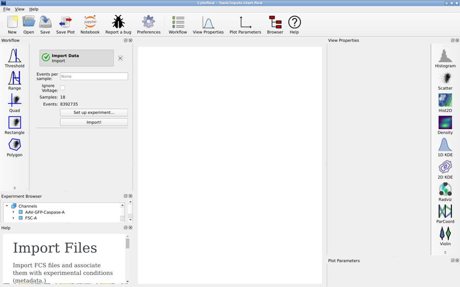
cu click 408 713; sleep 0.5; cu click 408 614; sleep 0.5; cu click 1393 390; sleep 3; cu screenshot /tmp/screen.png
{
"file_path": "/tmp/screen.png"
}/tmp/screen.png

cu click 408 784; sleep 0.5; cu click 1196 181; sleep 1; cu screenshot /tmp/screen.png
{
"file_path": "/tmp/screen.png"
}/tmp/screen.png
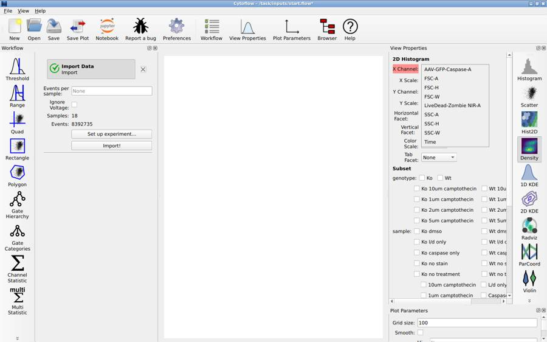
cu click 1135 206; sleep 1; cu click 1196 241; sleep 1; cu screenshot /tmp/screen.png
{
"file_path": "/tmp/screen.png"
}/tmp/screen.png
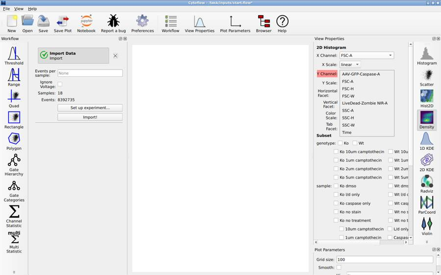
cu click 1135 361; sleep 25; cu screenshot /tmp/screen.png
{
"file_path": "/tmp/screen.png"
}/tmp/screen.png
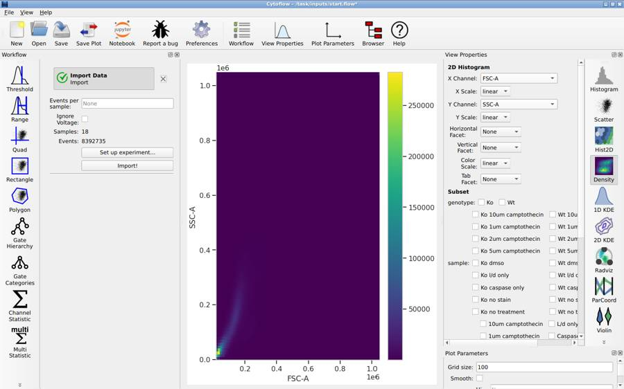
thinking
The linear FSC/SSC plot is swamped by debris near the origin, so I'm switching to log scales to locate the cell population before drawing gates.
cu click 1142 211; sleep 1; cu screenshot /tmp/screen.png
{
"file_path": "/tmp/screen.png"
}/tmp/screen.png
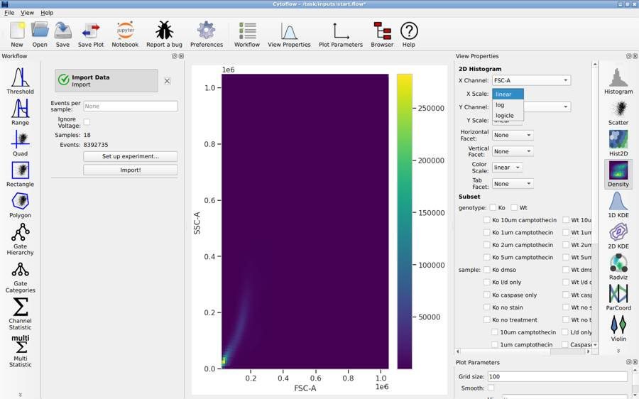
cu click 1127 236; sleep 2; cu click 1142 271; sleep 1; cu click 1127 296; sleep 2; cu click 1142 377; sleep 1; cu click 1127 402; sleep 25; cu screenshot /tmp/screen.png
{
"file_path": "/tmp/screen.png"
}/tmp/screen.png
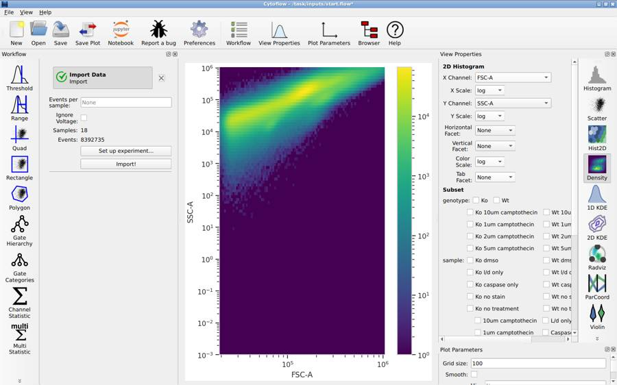
cu drag 1232 804 1232 480; sleep 2; cu screenshot /tmp/screen.png
{
"file_path": "/tmp/screen.png"
}/tmp/screen.png
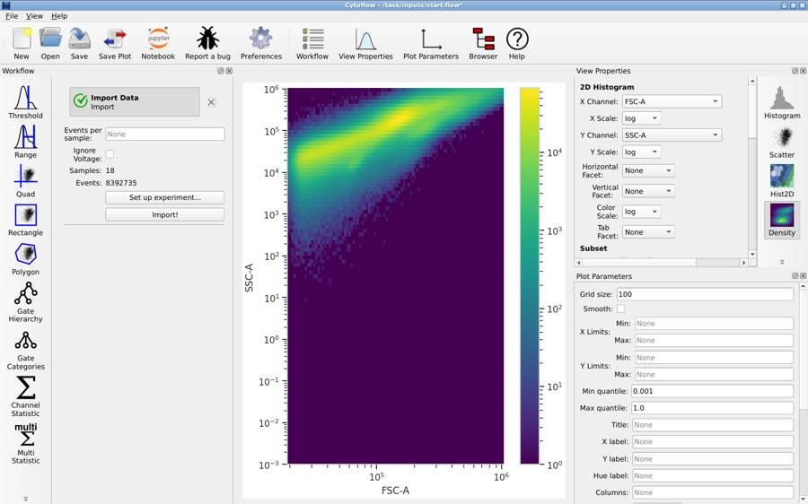
cu click 1272 638; cu type "1000"; cu key Return; sleep 20; cu screenshot /tmp/screen.png
{
"file_path": "/tmp/screen.png"
}/tmp/screen.png
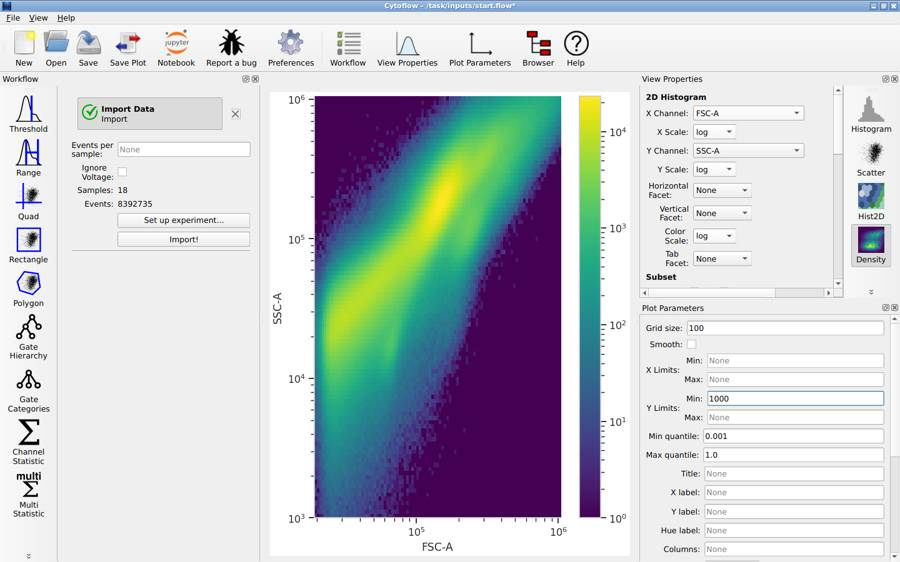
cu click 1142 377; sleep 1; cu click 1127 378; sleep 20; cu screenshot /tmp/screen.png
{
"file_path": "/tmp/screen.png"
}/tmp/screen.png
cu click 1142 377; sleep 1; cu screenshot /tmp/s2.png; python3 -I -c "
from PIL import Image
im=Image.open('/tmp/s2.png').crop((1020,320,1260,440)); im.save('/tmp/s2c.png')"{
"file_path": "/tmp/s2c.png"
}/tmp/s2.png
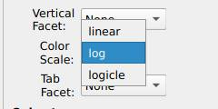
cu click 1127 354; sleep 22; cu screenshot /tmp/screen.png
{
"file_path": "/tmp/screen.png"
}/tmp/screen.png
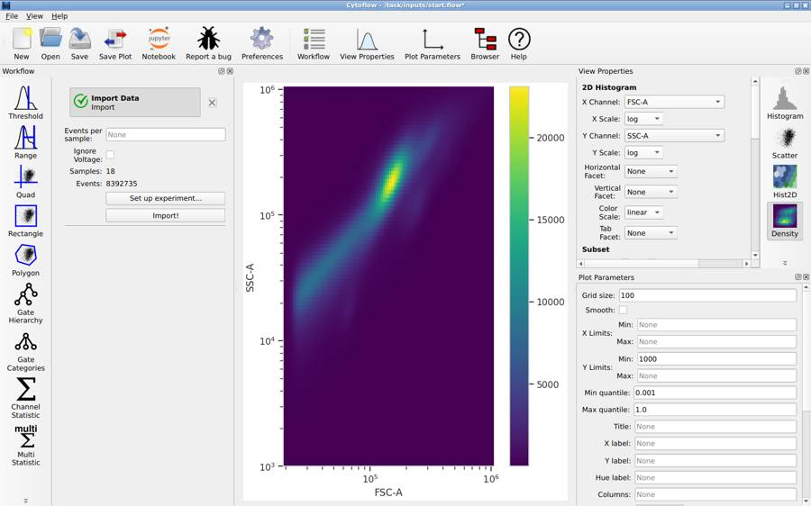
cu click 45 460; sleep 3; cu screenshot /tmp/screen.png
{
"file_path": "/tmp/screen.png"
}/tmp/screen.png
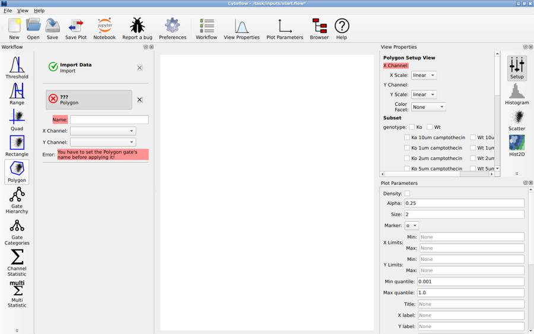
cu click 1142 202; sleep 1; cu click 1127 227; sleep 1; cu click 1142 254; sleep 1; cu click 1127 279; sleep 1; cu click 1098 521; sleep 1; cu click 1272 698; cu type "1000"; cu key Return; sleep 1; cu click 295 322; cu type "Cells"; cu key Return; sleep 1; cu click 277 352; sleep 1; cu click 240 377; sleep 1; cu click 277 383; sleep 1; cu screenshot /tmp/screen.png
{
"file_path": "/tmp/screen.png"
}/tmp/screen.png
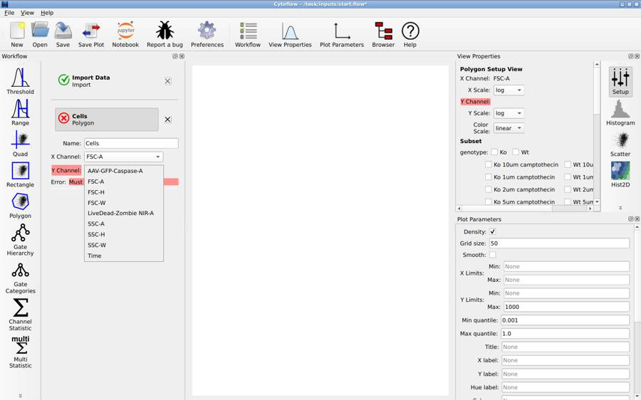
cu click 216 503; sleep 1; cu click 1272 690 ; cu key ctrl+a; cu key BackSpace; cu key Return; sleep 1; cu click 1272 660; cu type "1000"; cu key Return; sleep 25; cu screenshot /tmp/screen.png
{
"file_path": "/tmp/screen.png"
}/tmp/screen.png
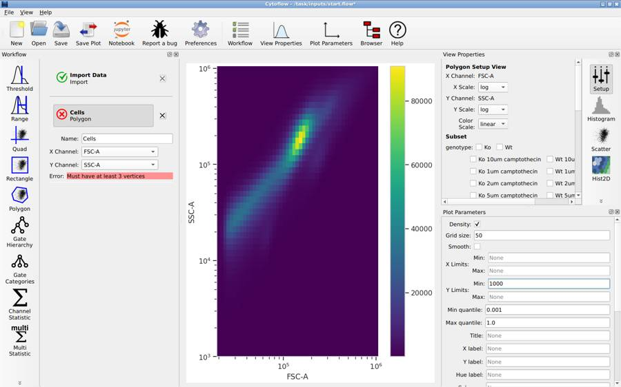
for p in "624 450" "624 295" "695 183" "807 171" "851 210" "824 316" "722 450" "624 450"; do cu click $p; sleep 1.5; done; sleep 20; cu screenshot /tmp/screen.png
{
"file_path": "/tmp/screen.png"
}/tmp/screen.png
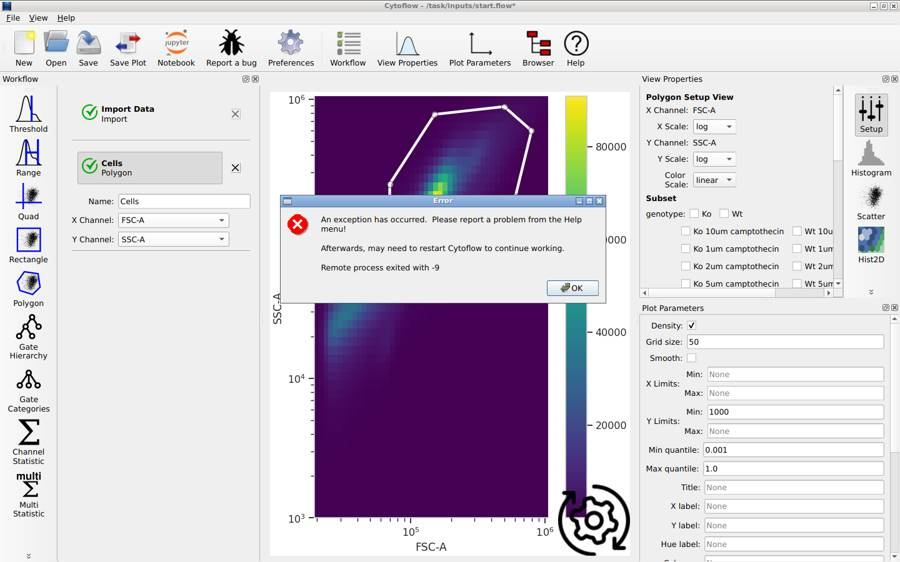
free -m; ps aux --sort=-rss | head -8 | cut -c1-200; cat /sys/fs/cgroup/memory.max 2>/dev/null; cat /sys/fs/cgroup/memory.current 2>/dev/null; nproc; dmesg 2>/dev/null | tail -5
total used free shared buff/cache available Mem: 7949 949 6852 15 384 7000 Swap: 0 0 0 USER PID %CPU %MEM VSZ RSS TTY STAT START TIME COMMAND cfapp 844 0.9 4.7 3589452 383444 ? Sl 18:46 0:04 /opt/cytoflow/cytoflow-1.3.2/cytoflow root 1030 1.2 2.8 5688524 229456 ? Sl 18:47 0:05 claude --verbose --output-format=stream-json --effort high --model claude-fable-5-2 --permission-mode=bypassPermissions --print root 816 0.0 0.4 232976 39276 ? S 18:46 0:00 Xvfb :1 -screen 0 1440x900x24 -nolisten tcp root 830 0.0 0.2 58956 23184 ? S 18:46 0:00 /usr/bin/python3 /usr/bin/websockify --web=/usr/share/novnc 6080 localhost:5900 cfapp 865 0.0 0.2 84344 22084 ? S 18:47 0:00 /opt/cytoflow/cytoflow-1.3.2/cytoflow -B -S -I -c from multiprocessing.resource_tracker import main;main(9) cfapp 937 0.0 0.2 5238832 19696 ? Sl 18:47 0:00 /opt/cytoflow/cytoflow-1.3.2/_internal/PyQt5/Qt5/libexec/QtWebEngineProcess --type=zygote --application-name=cytoflow --webengine-schem agent 838 0.0 0.1 142608 11228 ? Sl 18:46 0:00 openbox 4 [ 447.965901] [ 1030] 0 1030 1422131 42633 42630 3 0 1253376 0 0 claude [ 447.965946] [ 1439] 0 1439 1224 94 92 2 0 45056 0 0 bash [ 447.965991] [ 1475] 0 1475 784 28 27 1 0 45056 0 0 sleep [ 447.966040] oom-kill:constraint=CONSTRAINT_NONE,nodemask=(null),cpuset=/,mems_allowed=0,global_oom,task_memcg=/,task=cytoflow,pid=867,uid=1002 [ 447.966139] Out of memory: Killed process 867 (cytoflow) total-vm:9097272kB, anon-rss:7290936kB, file-rss:12kB, shmem-rss:28kB, UID:1002 pgtables:14912kB oom_score_adj:0
ps -ef | grep -v grep | grep -E "cytoflow|openbox|Xvfb|supervis|x11vnc" | cut -c1-220; ls /opt/cytoflow/cytoflow-1.3.2/_internal | head -80; find /opt/cytoflow -name "polygon*" | head
root 816 813 0 18:46 ? 00:00:00 Xvfb :1 -screen 0 1440x900x24 -nolisten tcp root 829 813 0 18:46 ? 00:00:00 x11vnc -display :1 -forever -shared -nopw -quiet -rfbport 5900 root 831 828 0 18:46 ? 00:00:00 runuser -u agent -- env DISPLAY=:1 HOME=/home/agent LANG=C.UTF-8 LC_ALL=C.UTF-8 openbox root 836 835 0 18:46 ? 00:00:00 runuser -u cfapp -- env DISPLAY=:1 HOME=/home/cfapp XDG_RUNTIME_DIR=/tmp/runtime-cfapp LANG=C.UTF-8 LC_ALL=C.UTF-8 bash -c umask 002; cd /task; exec start-cytoflow cfapp 837 836 0 18:46 ? 00:00:00 /bin/bash /usr/local/bin/start-cytoflow agent 838 831 0 18:46 ? 00:00:00 openbox cfapp 844 837 0 18:46 ? 00:00:04 /opt/cytoflow/cytoflow-1.3.2/cytoflow cfapp 865 844 0 18:47 ? 00:00:00 /opt/cytoflow/cytoflow-1.3.2/cytoflow -B -S -I -c from multiprocessing.resource_tracker import main;main(9) cfapp 898 844 0 18:47 ? 00:00:00 /opt/cytoflow/cytoflow-1.3.2/_internal/PyQt5/Qt5/libexec/QtWebEngineProcess --type=zygote --no-zygote-sandbox --application-name=cytoflow --webengine-schemes=qrc:sLV --lang cfapp 919 844 0 18:47 ? 00:00:00 /opt/cytoflow/cytoflow-1.3.2/_internal/PyQt5/Qt5/libexec/QtWebEngineProcess --type=zygote --application-name=cytoflow --webengine-schemes=qrc:sLV --lang=en cfapp 921 919 0 18:47 ? 00:00:00 /opt/cytoflow/cytoflow-1.3.2/_internal/PyQt5/Qt5/libexec/QtWebEngineProcess --type=zygote --application-name=cytoflow --webengine-schemes=qrc:sLV --lang=en cfapp 937 921 0 18:47 ? 00:00:00 /opt/cytoflow/cytoflow-1.3.2/_internal/PyQt5/Qt5/libexec/QtWebEngineProcess --type=zygote --application-name=cytoflow --webengine-schemes=qrc:sLV --lang=en CFP_Well_A4.fcs Cython PIL PyQt5 _DP.cpython-312-x86_64-linux-gnu.so _Logicle.cpython-312-x86_64-linux-gnu.so _cffi_backend.cpython-312-x86_64-linux-gnu.so apptools-5.3.1.dist-info array_api_compat-1.15.0.dist-info attrs-26.1.0.dist-info backports base_library.zip bottleneck bottleneck-1.4.2.dist-info brotlicffi browser.svg bug.svg camel-0.1.2-py3.7.egg-info cbayesian.cpython-312-x86_64-linux-gnu.so certifi cffi-2.0.0.dist-info cimage.cpython-312-x86_64-linux-gnu.so contourpy contourpy-1.3.3.dist-info crbfgs.cpython-312-x86_64-linux-gnu.so cryptography cryptography-49.0.0.dist-info cuvette.jpg cycler-0.12.1.dist-info cython-3.2.5.dist-info cytoflow-1.3.2.dist-info cytoflow.desktop cytoflowgui dateutil dcor-0.7.dist-info density_plot.svg density_plot_2.svg envisage-7.0.3.dist-info export.svg fastjsonschema-2.21.2.dist-info fdasrsf-2.6.10.dist-info findiff-0.13.1.dist-info fontTools fonttools-4.63.0.dist-info fpls_warp.cpython-312-x86_64-linux-gnu.so gear.svg gmpy2 help.svg icon.png icon.svg igraph igraph-0.11.9.dist-info importlib_metadata-8.7.1.dist-info importlib_resources-6.4.0.dist-info ipython.svg joblib-1.5.3.dist-info jsonschema jsonschema-4.25.1.dist-info jsonschema_specifications jsonschema_specifications-2025.9.1.dist-info jupyter.svg jupyter_core-5.9.1.dist-info kiwisolver kiwisolver-1.4.9.dist-info lazy_loader-0.5.dist-info libLerc.so.4 libQt5Bluetooth.so.5 libQt5Core.so.5 libQt5DBus.so.5 libQt5EglFSDeviceIntegration.so.5 libQt5EglFsKmsSupport.so.5 libQt5Gui.so.5 libQt5Multimedia.so.5 libQt5MultimediaGstTools.so.5 libQt5MultimediaWidgets.so.5 libQt5Network.so.5 libQt5OpenGL.so.5 libQt5Pdf.so.5 libQt5Positioning.so.5 libQt5PrintSupport.so.5 /opt/cytoflow/cytoflow-1.3.2/_internal/cytoflowgui/op_plugins/images/polygon.svg /opt/cytoflow/cytoflow-1.3.2/_internal/cytoflowgui/help/_images/polygon-1.png /opt/cytoflow/cytoflow-1.3.2/_internal/cytoflowgui/help/operations/polygon-1.png /opt/cytoflow/cytoflow-1.3.2/_internal/cytoflowgui/help/operations/polygon.html /opt/cytoflow/cytoflow-1.3.2/_internal/cytoflowgui/help/operations/polygon-1.py /opt/cytoflow/cytoflow-1.3.2/_internal/cytoflowgui/help/plot_directive/operations/polygon-1.png
cat /usr/local/bin/start-cytoflow; ps -ef | grep -E "^root +(813|828|835)" | cut -c1-300; ps -o pid,ppid,cmd -p 813,828,835 | cut -c1-300
#!/bin/bash
# Launch Cytoflow full-screen-ish; restart it if the agent closes it.
BIN=$(find /opt/cytoflow -maxdepth 3 -type f -name 'cytoflow' -perm -u+x | head -1)
[ -z "$BIN" ] && { echo "cytoflow binary not found under /opt/cytoflow"; exit 1; }
while true; do
"$BIN" >/tmp/cytoflow.log 2>&1
sleep 1
done
root 813 809 0 18:46 ? 00:00:00 /bin/bash /entrypoint.sh sh -c sleep infinity
root 828 813 0 18:46 ? 00:00:00 /bin/bash /entrypoint.sh sh -c sleep infinity
root 835 813 0 18:46 ? 00:00:00 /bin/bash /entrypoint.sh sh -c sleep infinity
PID PPID CMD
813 809 /bin/bash /entrypoint.sh sh -c sleep infinity
828 813 /bin/bash /entrypoint.sh sh -c sleep infinity
835 813 /bin/bash /entrypoint.sh sh -c sleep infinitytail -c 3000 /tmp/cytoflow.log; ls -la /tmp/*.log /home/cfapp 2>/dev/null | head -20
QXcbIntegration: Cannot create platform OpenGL context, neither GLX nor EGL are enabled 2026-11-10 18:54:26,488 ERROR:root:Remote process exited with -9 -rw-r--r-- 1 root root 492 Nov 10 18:47 /tmp/claude-install.log -rw-rw-r-- 1 cfapp cfapp 153 Nov 10 18:54 /tmp/cytoflow.log /home/cfapp: total 40 drwxr-x--- 7 cfapp cfapp 4096 Nov 10 18:48 . drwxr-xr-x 5 root root 4096 Nov 5 22:25 .. -rw-r--r-- 1 cfapp cfapp 220 Mar 31 2024 .bash_logout -rw-r--r-- 1 cfapp cfapp 3771 Mar 31 2024 .bashrc drwxr-xr-x 4 cfapp cfapp 4096 Nov 10 18:47 .cache drwxrwxr-x 2 cfapp cfapp 4096 Nov 10 18:48 .config drwxrwxr-x 4 cfapp cfapp 4096 Nov 10 18:47 .enthought drwx------ 3 cfapp cfapp 4096 Nov 10 18:47 .local -rw-r--r-- 1 cfapp cfapp 807 Mar 31 2024 .profile drwxrwxr-x 2 cfapp cfapp 4096 Nov 10 18:47 enthought
cu click 915 461; sleep 1; cu click 20 28; sleep 1; cu screenshot /tmp/screen.png
{
"file_path": "/tmp/screen.png"
}/tmp/screen.png
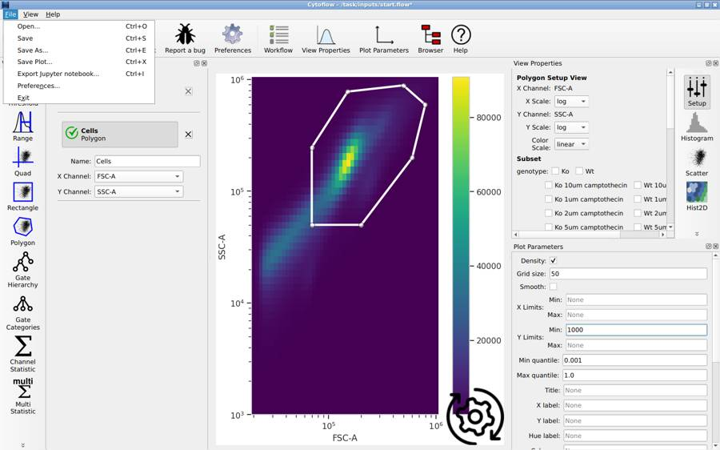
cu click 65 100; sleep 2; cu screenshot /tmp/screen.png
{
"file_path": "/tmp/screen.png"
}/tmp/screen.png
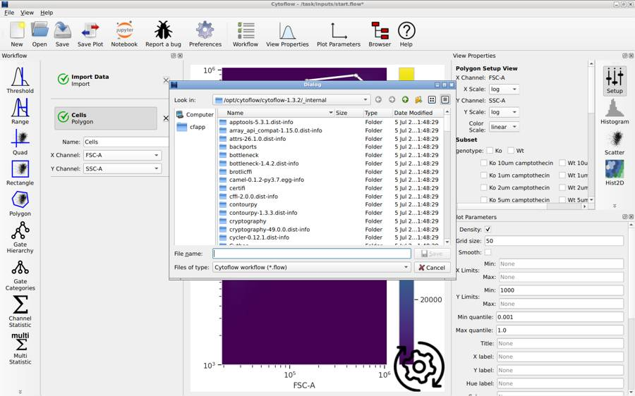
cu click 706 576; cu paste "/task/outputs/workflow.flow"; sleep 0.5; cu key Return; sleep 3; ls -la /task/outputs; grep -n -A25 "polygon" /task/outputs/workflow.flow | head -80
total 32 drwxrwsrwx 2 agent task 4096 Nov 10 18:55 . drwxr-xr-x 4 root root 4096 Nov 5 22:25 .. -rw-rw-r-- 1 cfapp task 23169 Nov 10 18:55 workflow.flow 784: current_view: &id004 !polygon-view;3 785- current_plot: null 786- huefacet: '' 787- huescale: linear 788: op: &id003 !polygon;1 789- name: Cells 790- vertices: 791- - !!python/tuple 792- - 69789.68073292791 793- - 50025.52275118533 794- - !!python/tuple 795- - 69789.68073292791 796- - 247264.84843087546 797- - !!python/tuple 798- - 150925.7393674077 799- - 778963.6844188686 800- - !!python/tuple 801- - 499128.997327573 802- - 885946.4505528706 803- - !!python/tuple 804- - 798194.7418132005 805- - 595770.7354970798 806- - !!python/tuple 807- - 603590.1715554768 808- - 199531.71948764156 809- - !!python/tuple 810- - 201829.5181185893 811- - 50025.52275118533 812- xchannel: FSC-A 813- xscale: log -- 816: plot_params: !polygon-params;1 817- alpha: 0.25 818- col_wrap: null 819- density: true 820- despine: true 821- gridsize: 50 822- huelabel: '' 823- legend: true 824- marker: o 825- max_quantile: 1.0 826- min_quantile: 0.001 827- s: 2 828- sharex: true 829- sharey: true 830- smoothed: false 831- smoothed_sigma: 1.0 832- sns_context: notebook 833- sns_style: whitegrid 834- title: '' 835- xlabel: '' 836- xlim: *id002 837- ylabel: '' 838- ylim: !!python/tuple 839- - 1000.0 840- - null 841- subset_list:
thinking
The workflow with the Cells polygon is saved to /task/outputs/workflow.flow. I'm restarting Cytoflow, whose compute process ran out of memory, and adding a memory monitor so the plots stay light for the 8.4M events.
nohup bash -c 'while true; do echo "$(date +%T) $(ps -eo rss,pid,cmd --sort=-rss | grep cytoflow | grep -v grep | head -3 | awk "{printf \"%d:%dMB \", \$2, \$1/1024}") free=$(free -m | awk "/Mem/{print \$7}")"; sleep 3; done' > /tmp/mem.log 2>&1 &
cu click 20 28; sleep 1; cu click 46 195; sleep 3; cu screenshot /tmp/screen.png{
"file_path": "/tmp/screen.png"
}/tmp/screen.png

sleep 25; cu screenshot /tmp/screen.png; tail -2 /tmp/mem.log
<tool_use_error>Blocked: sleep 25 followed by: cu screenshot /tmp/screen.png tail -2 /tmp/mem.log. To wait for a condition, use Monitor with an until-loop (e.g. `until <check>; do sleep 2; done`). To wait for a command you started, use run_in_background: true. Do not chain shorter sleeps to work around this block.</tool_use_error>
{
"file_path": "/tmp/screen.png"
}
until DISPLAY=:1 xwininfo -root -tree 2>/dev/null | grep -q -E '"(Cytometry analysis|Welcome|Cytoflow)'; do sleep 2; done; sleep 5; cu screenshot /tmp/screen.png; tail -2 /tmp/mem.log
{
"file_path": "/tmp/screen.png"
}/tmp/screen.png 18:56:15 1605:509MB 1620:306MB 1695:70MB free=6734 18:56:18 1605:509MB 1620:306MB 1695:70MB free=6747

cu click 600 9 double; sleep 2; cu click 90 75; sleep 2; cu screenshot /tmp/screen.png
{
"file_path": "/tmp/screen.png"
}/tmp/screen.png

cu click 706 576; cu paste "/task/outputs/workflow.flow"; sleep 0.5; cu key Return; sleep 3; cu screenshot /tmp/screen.png
{
"file_path": "/tmp/screen.png"
}/tmp/screen.png

cu click 738 427; sleep 28; tail -12 /tmp/mem.log
18:56:36 1605:503MB 1620:313MB 1695:70MB free=6783 18:56:39 1605:513MB 1620:320MB 1695:70MB free=6770 18:56:42 1605:513MB 1620:320MB 1695:70MB free=6768 18:56:45 1620:1239MB 1605:512MB 1695:70MB free=5844 18:56:48 1620:1624MB 1605:513MB 1695:70MB free=5403 18:56:51 1620:1497MB 1605:513MB 1695:70MB free=5538 18:56:54 1620:1497MB 1605:513MB 1695:70MB free=5561 18:56:57 1620:1497MB 1605:513MB 1695:70MB free=5577 18:57:00 1620:1497MB 1605:513MB 1695:70MB free=5593 18:57:03 1620:1497MB 1605:513MB 1695:70MB free=5600 18:57:06 1620:1497MB 1605:513MB 1695:70MB free=5606 18:57:09 1620:1497MB 1605:513MB 1695:70MB free=5608
cu screenshot /tmp/screen.png; tail -2 /tmp/mem.log
/tmp/screen.png 18:57:12 1620:1497MB 1605:513MB 1695:70MB free=5609 18:57:15 1620:1497MB 1605:513MB 1695:70MB free=5609
{
"file_path": "/tmp/screen.png"
}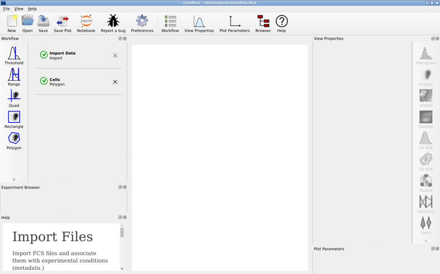
cu click 408 713; sleep 0.5; cu click 408 614; sleep 0.5; cu drag 1232 804 1232 430; sleep 1; cu click 240 268; sleep 20; cu screenshot /tmp/screen.png; tail -3 /tmp/mem.log
{
"file_path": "/tmp/screen.png"
}/tmp/screen.png 18:57:42 1620:1402MB 1605:359MB 1695:24MB free=5600 18:57:45 1620:1402MB 1605:359MB 1695:24MB free=5597 18:57:48 1620:1402MB 1605:359MB 1695:24MB free=5607
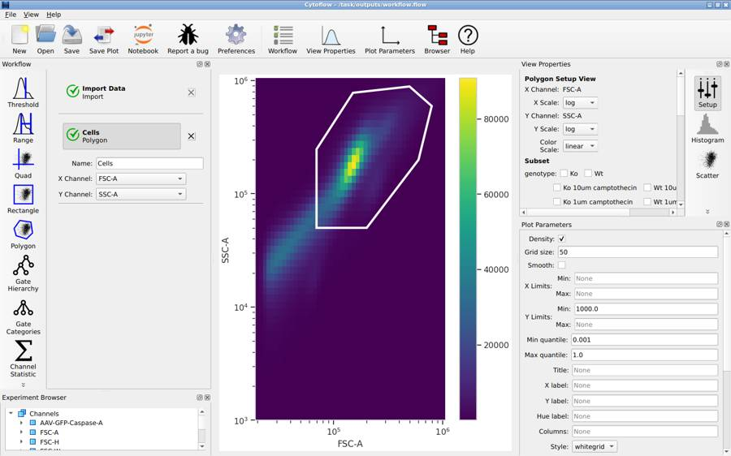
cu click 408 784; sleep 0.5; cu click 45 460; sleep 3; cu screenshot /tmp/screen.png
{
"file_path": "/tmp/screen.png"
}/tmp/screen.png
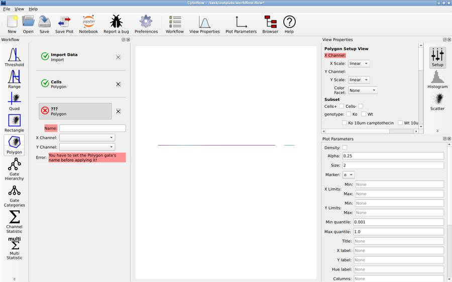
cu click 1098 471; sleep 1; cu click 1088 339; sleep 1; cu click 295 409; cu type "Singlets"; cu key Return; sleep 1; cu click 277 439; sleep 1; cu click 240 464; sleep 1; cu click 277 469; sleep 1; cu screenshot /tmp/screen.png
{
"file_path": "/tmp/screen.png"
}/tmp/screen.png
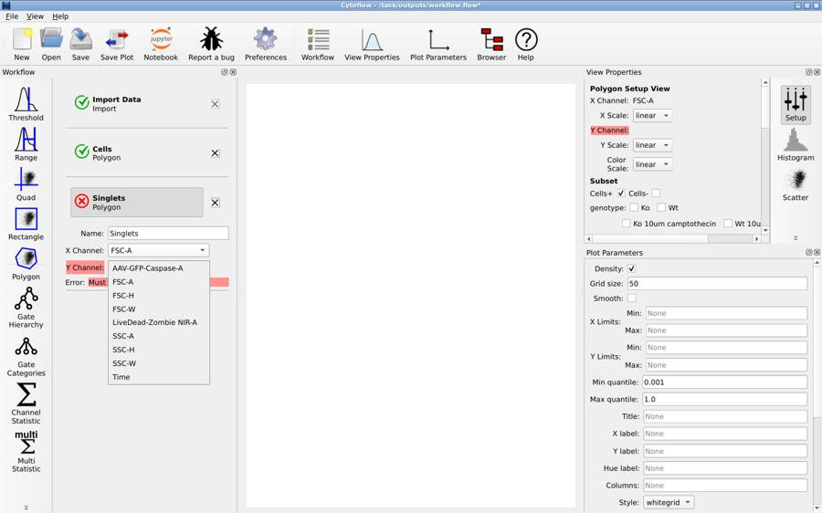
cu click 216 518; sleep 20; cu screenshot /tmp/screen.png; tail -4 /tmp/mem.log
{
"file_path": "/tmp/screen.png"
}/tmp/screen.png 18:58:27 1620:1404MB 1605:377MB 1695:25MB free=5571 18:58:30 1620:1404MB 1605:377MB 1695:25MB free=5587 18:58:33 1620:1404MB 1605:377MB 1695:25MB free=5619 18:58:36 1620:1404MB 1605:377MB 1695:25MB free=5619
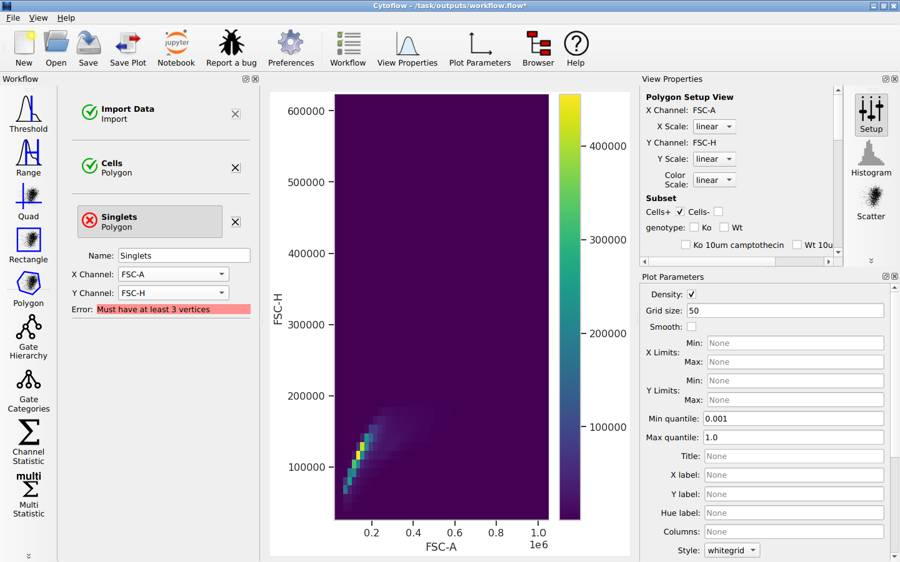
cu click 1255 497; cu key ctrl+a; cu type "120"; cu key Return; sleep 1; cu click 1272 580; cu type "500000"; cu key Return; sleep 1; cu click 1272 640; cu type "400000"; cu key Return; sleep 22; cu screenshot /tmp/screen.png; tail -2 /tmp/mem.log
{
"file_path": "/tmp/screen.png"
}/tmp/screen.png 18:59:06 1620:1407MB 1605:377MB 1695:25MB free=5555 18:59:09 1620:1407MB 1605:377MB 1695:25MB free=5573
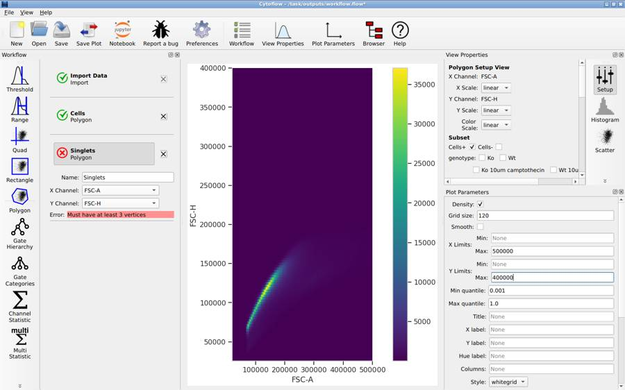
cu click 1142 288; sleep 1; cu click 1127 313; sleep 22; cu screenshot /tmp/screen.png; tail -1 /tmp/mem.log
{
"file_path": "/tmp/screen.png"
}/tmp/screen.png 18:59:55 1620:1408MB 1605:377MB 1695:25MB free=5604
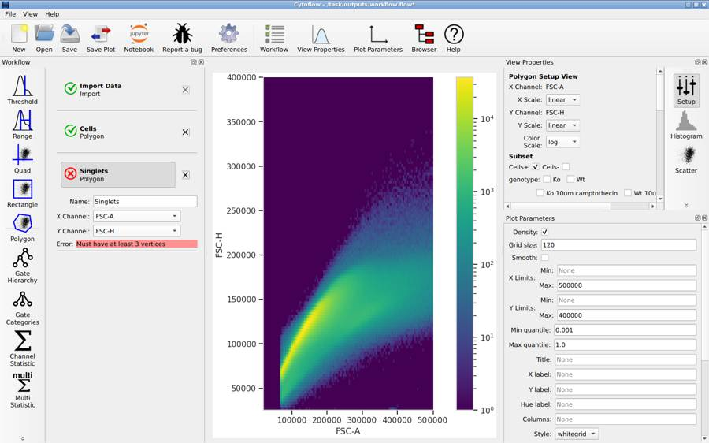
for p in "564 739" "600 663" "647 590" "707 508" "765 444" "736 581" "686 630" "643 677" "611 721" "586 763" "572 790" "564 790" "564 739"; do cu click $p; sleep 1.2; done; sleep 15; cu screenshot /tmp/screen.png; tail -3 /tmp/mem.log
{
"file_path": "/tmp/screen.png"
}/tmp/screen.png 19:00:43 1620:1450MB 1605:378MB 1695:25MB free=5502 19:00:46 1620:1450MB 1605:378MB 1695:25MB free=5500 19:00:49 1620:1450MB 1605:378MB 1695:25MB free=5519
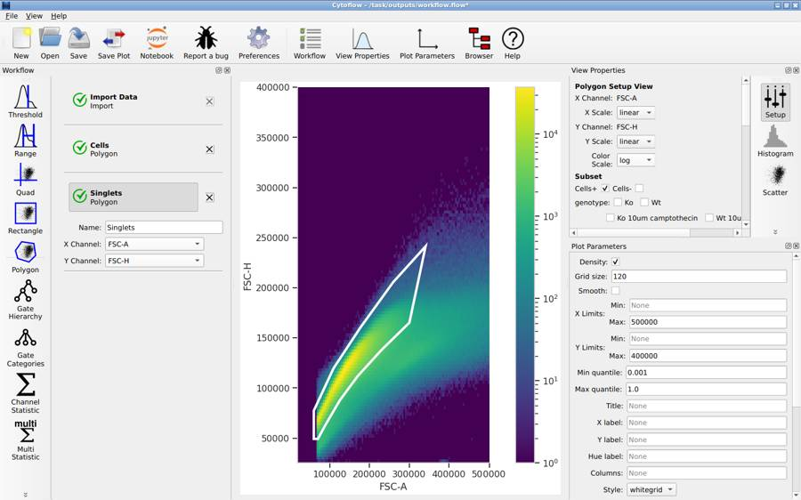
cu key ctrl+s; sleep 2; ls -la /task/outputs; cu click 45 252; sleep 3; cu screenshot /tmp/screen.png
{
"file_path": "/tmp/screen.png"
}total 44 drwxrwsrwx 2 agent task 4096 Nov 10 18:55 . drwxr-xr-x 4 root root 4096 Nov 5 22:25 .. -rw-rw-r-- 1 cfapp task 34025 Nov 10 19:00 workflow.flow /tmp/screen.png
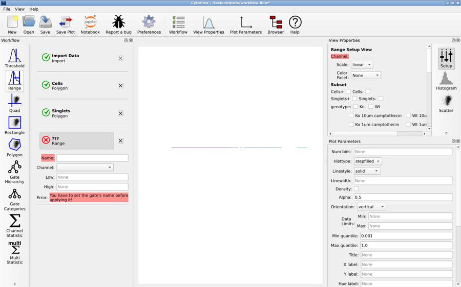
grep -c "Singlets" /task/outputs/workflow.flow; cu click 1130 202; sleep 1; cu click 1120 251; sleep 1; cu click 1088 287; sleep 1; cu click 1107 309; sleep 1; cu click 288 495; cu type "Live"; cu key Return; sleep 1; cu click 265 525; sleep 1; cu click 260 622; sleep 15; cu screenshot /tmp/screen.png; tail -2 /tmp/mem.log
{
"file_path": "/tmp/screen.png"
}3 /tmp/screen.png 19:01:31 1620:1411MB 1605:398MB 1695:57MB free=5589 19:01:34 1620:1411MB 1605:398MB 1695:57MB free=5589
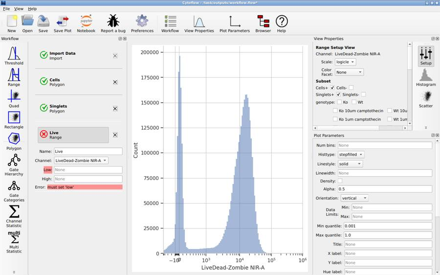
thinking
The Zombie NIR histogram for singlets shows a sharp negative peak and a large stained peak near 1.5e4. I'm breaking it down per control well to find where live ends and dead begins.
cu drag 1232 430 1232 760; sleep 2; cu screenshot /tmp/screen.png
{
"file_path": "/tmp/screen.png"
}/tmp/screen.png
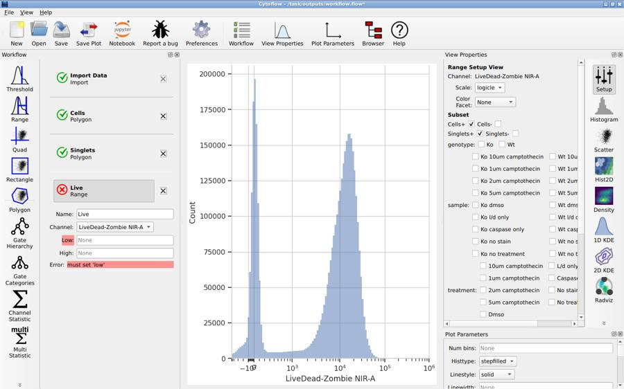
cu drag 1020 510 860 510; sleep 3; cu screenshot /tmp/screen.png
{
"file_path": "/tmp/screen.png"
}/tmp/screen.png
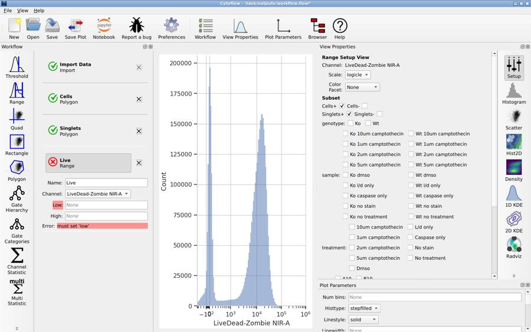
cu click 1114 615; sleep 0.7; cu click 1114 643; sleep 0.7; cu click 1114 671; sleep 0.7; cu click 982 236; sleep 1; cu screenshot /tmp/screen.png
{
"file_path": "/tmp/screen.png"
}/tmp/screen.png
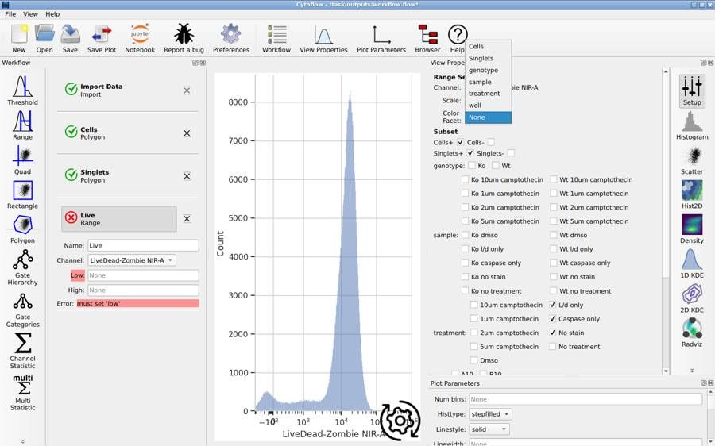
cu click 967 165; sleep 12; cu screenshot /tmp/screen.png; tail -1 /tmp/mem.log
{
"file_path": "/tmp/screen.png"
}/tmp/screen.png 19:02:25 1620:1443MB 1605:399MB 1695:57MB free=5525
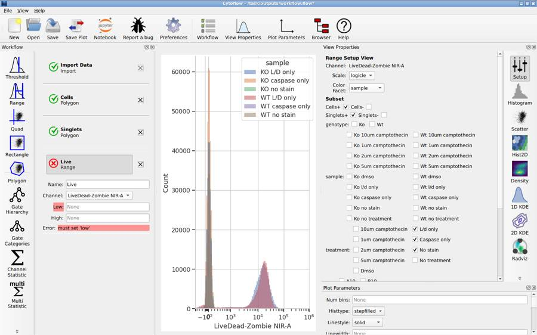
cu click 1114 643; sleep 0.7; cu click 1114 671; sleep 10; cu screenshot /tmp/screen.png; tail -1 /tmp/mem.log
{
"file_path": "/tmp/screen.png"
}/tmp/screen.png 19:02:49 1620:1451MB 1605:399MB 1695:57MB free=5509
thinking
Zombie-only controls show most singlets near 1.5e4 with a small dim fraction, so I'm checking Zombie against caspase and scatter in the fully stained wells to confirm which population is live before setting the gate.
cu click 240 355; sleep 12; cu click 1393 460; sleep 3; cu screenshot /tmp/screen.png
{
"file_path": "/tmp/screen.png"
}/tmp/screen.png
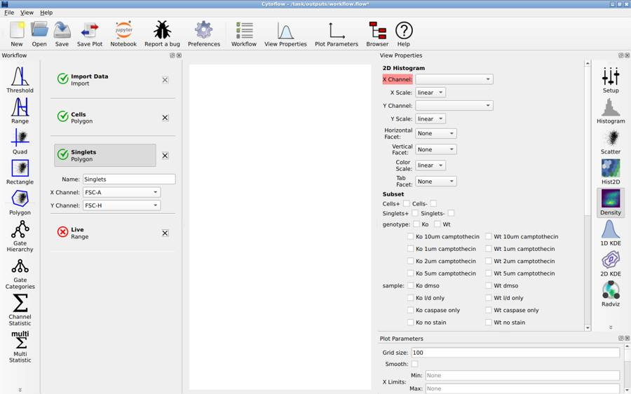
cu click 927 465; sleep 0.5; cu click 947 487; sleep 0.5; cu click 998 512; sleep 0.5; cu click 982 211; sleep 1; cu click 970 260; sleep 1; cu click 982 271; sleep 1; cu click 970 320; sleep 1; cu click 982 377; sleep 1; cu click 970 402; sleep 1; cu click 995 304; sleep 1; cu screenshot /tmp/screen.png
{
"file_path": "/tmp/screen.png"
}/tmp/screen.png
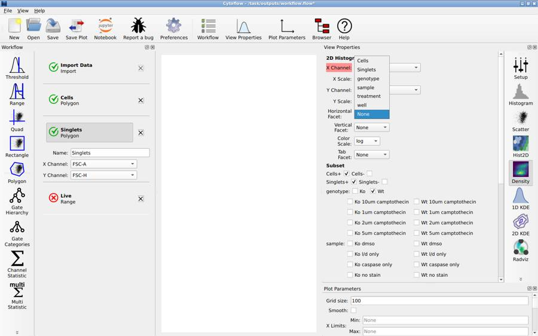
cu click 968 282; sleep 1; cu scroll 1140 850 down 10; sleep 1; cu screenshot /tmp/screen.png
{
"file_path": "/tmp/screen.png"
}/tmp/screen.png
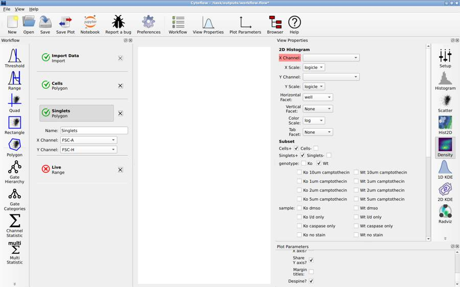
cu drag 1152 760 1152 530; sleep 1; cu scroll 1140 700 up 15; sleep 1; cu screenshot /tmp/screen.png
{
"file_path": "/tmp/screen.png"
}/tmp/screen.png
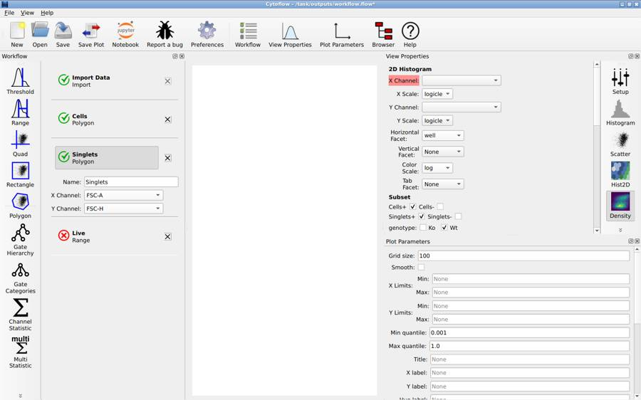
cu scroll 1140 700 down 3; sleep 1; cu screenshot /tmp/screen.png; python3 -I -c "
from PIL import Image
Image.open('/tmp/screen.png').crop((860,540,1440,900)).save('/tmp/c.png')"{
"file_path": "/tmp/c.png"
}/tmp/screen.png
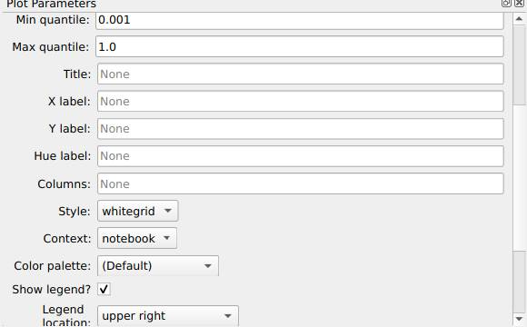
cu click 1190 742; cu type "3"; cu key Return; sleep 1; cu click 1036 181; sleep 1; cu click 1000 182; sleep 1.5; cu click 1036 241; sleep 1; cu click 1000 338; sleep 25; cu screenshot /tmp/screen.png; tail -2 /tmp/mem.log
{
"file_path": "/tmp/screen.png"
}/tmp/screen.png 19:04:46 1620:1470MB 1605:402MB 1695:59MB free=5513 19:04:49 1620:1470MB 1605:402MB 1695:59MB free=5513
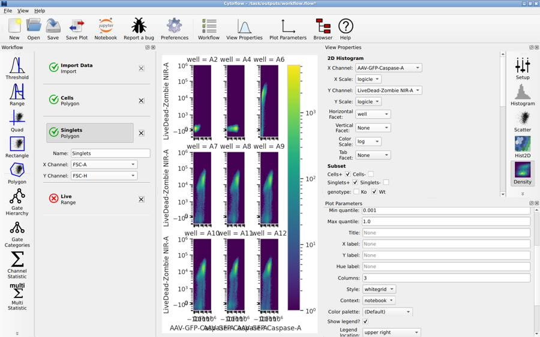
cu drag 859 510 1180 510; sleep 15; cu screenshot /tmp/screen.png
{
"file_path": "/tmp/screen.png"
}/tmp/screen.png
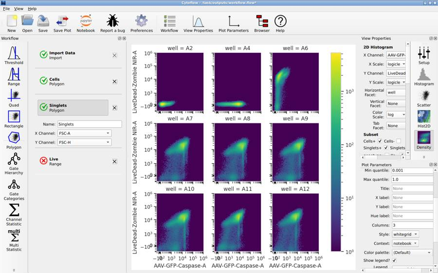
cu drag 1181 510 860 510; sleep 2; cu click 998 512; sleep 0.5; cu click 950 512; sleep 1; cu drag 859 510 1180 510; sleep 25; cu screenshot /tmp/screen.png; tail -1 /tmp/mem.log
{
"file_path": "/tmp/screen.png"
}/tmp/screen.png 19:06:08 1620:1438MB 1605:402MB 1695:59MB free=5508
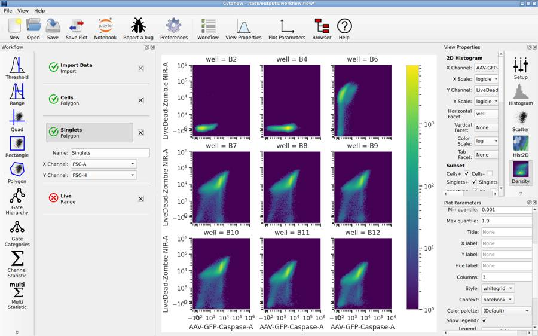
thinking
Control wells match their labels, and the stained wells are mostly Zombie-bright dead cells with a small live population. I'm setting the Live gate threshold from those histograms next.
cu drag 1181 510 860 510; sleep 2; cu click 240 532; sleep 8; cu drag 1152 530 1152 770; sleep 2; cu screenshot /tmp/screen.png
{
"file_path": "/tmp/screen.png"
}/tmp/screen.png
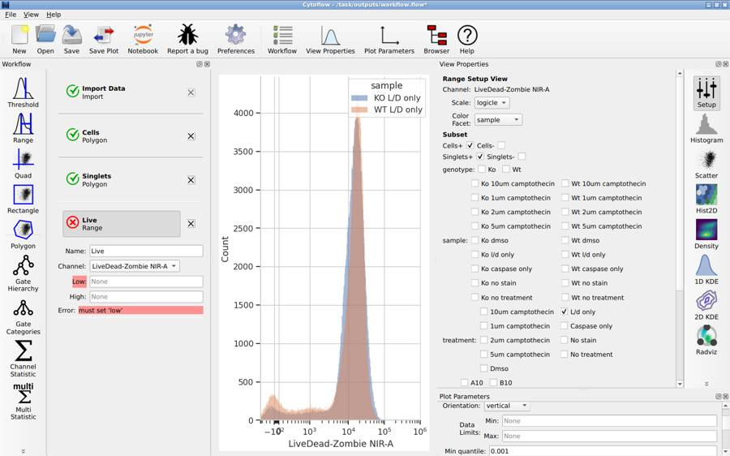
cu click 1114 615; sleep 0.5; for y in 615 643 671 699 727; do cu click 955 $y; sleep 0.5; done; cu click 1114 699; sleep 0.5; cu click 982 236; sleep 1; cu click 975 212; sleep 15; cu screenshot /tmp/screen.png
{
"file_path": "/tmp/screen.png"
}/tmp/screen.png
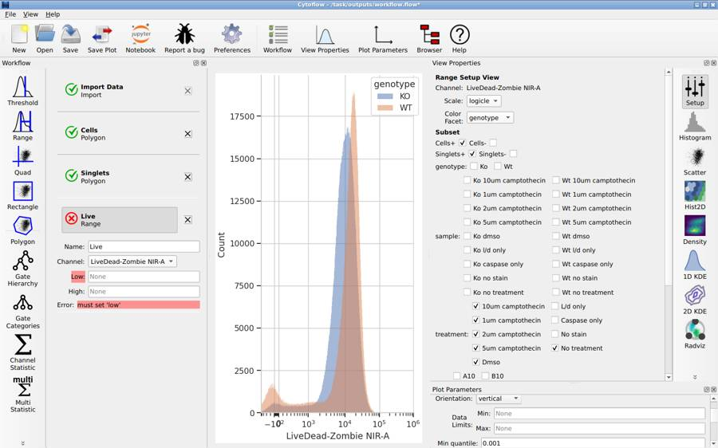
cu click 288 555; cu type "-1000000"; cu key Return; sleep 1; cu click 288 585; cu type "2000"; cu key Return; sleep 20; cu screenshot /tmp/screen.png; tail -1 /tmp/mem.log
{
"file_path": "/tmp/screen.png"
}/tmp/screen.png 19:07:41 1620:1797MB 1605:402MB 1695:59MB free=5133
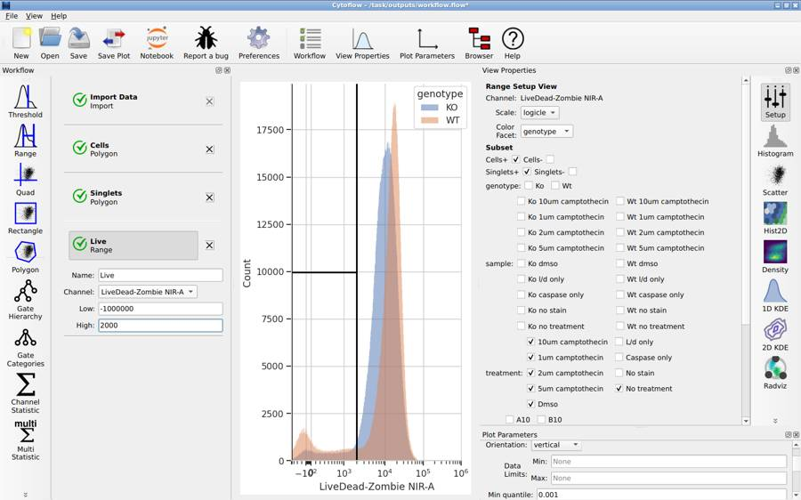
cu key ctrl+s; sleep 2; cu click 1393 460; sleep 3; cu screenshot /tmp/screen.png
{
"file_path": "/tmp/screen.png"
}/tmp/screen.png
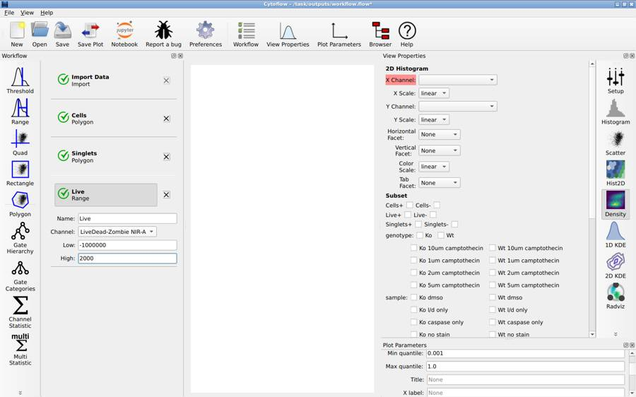
cu click 982 211; sleep 1; cu click 970 236; sleep 1; cu click 982 271; sleep 1; cu click 970 296; sleep 1; cu click 995 304; sleep 1; cu click 968 160; sleep 1; for y in 562 590 618 646 674; do cu click 937 $y; sleep 0.4; cu click 1115 $y; sleep 0.4; done; cu scroll 1140 850 up 15; sleep 1; cu screenshot /tmp/screen.png
{
"file_path": "/tmp/screen.png"
}/tmp/screen.png
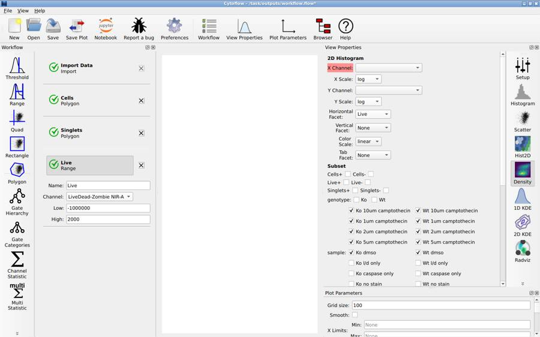
cu click 982 377; sleep 1; cu click 970 402; sleep 1; cu click 1036 181; sleep 1; cu click 1000 206; sleep 1.5; cu click 1036 241; sleep 1; cu click 1000 362; sleep 2; cu drag 859 510 1180 510; sleep 25; cu screenshot /tmp/screen.png; tail -1 /tmp/mem.log
{
"file_path": "/tmp/screen.png"
}/tmp/screen.png 19:08:59 1620:1787MB 1605:406MB 1695:60MB free=5182
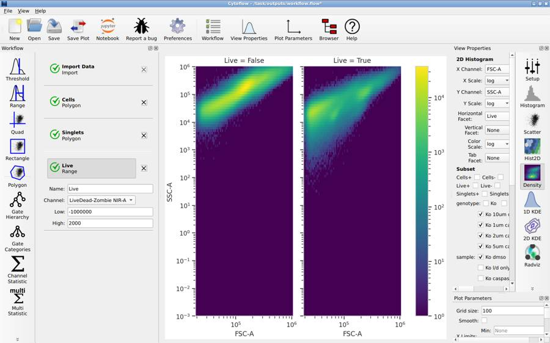
thinking
Zombie-low events are mostly low-scatter while the main cluster is Zombie-high, so I'm zooming into the Zombie-low events to see whether the Cells gate must widen to keep intact live cells.
cu drag 1181 510 860 510; sleep 2; cu click 923 487; sleep 1; cu scroll 1140 850 down 2; sleep 1; cu screenshot /tmp/screen.png; python3 -I -c "
from PIL import Image
Image.open('/tmp/screen.png').crop((860,770,1440,900)).save('/tmp/c.png')"{
"file_path": "/tmp/c.png"
}/tmp/screen.png
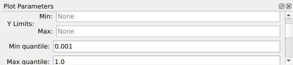
cu click 1190 802; cu type "1000"; cu key Return; sleep 1; cu click 982 377; sleep 1; cu click 970 353; sleep 20; cu screenshot /tmp/screen.png
{
"file_path": "/tmp/screen.png"
}/tmp/screen.png
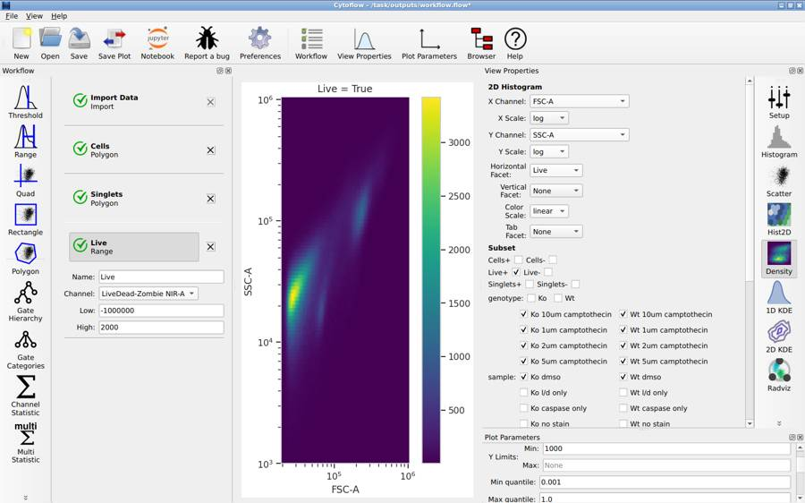
cu click 45 180; sleep 3; cu screenshot /tmp/screen.png
{
"file_path": "/tmp/screen.png"
}/tmp/screen.png
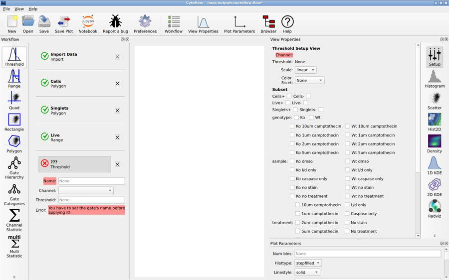
cu click 980 224; sleep 1; cu click 970 273; sleep 1; cu click 992 258; sleep 1; cu click 975 210; sleep 1; cu click 927 309; sleep 0.5; cu click 923 330; sleep 0.5; cu click 947 352; sleep 0.5; cu click 998 377; sleep 0.5; cu click 293 581; cu type "Casp_pos"; cu key Return; sleep 1; cu click 275 612; sleep 1; cu click 250 613; sleep 15; cu screenshot /tmp/screen.png
{
"file_path": "/tmp/screen.png"
}/tmp/screen.png
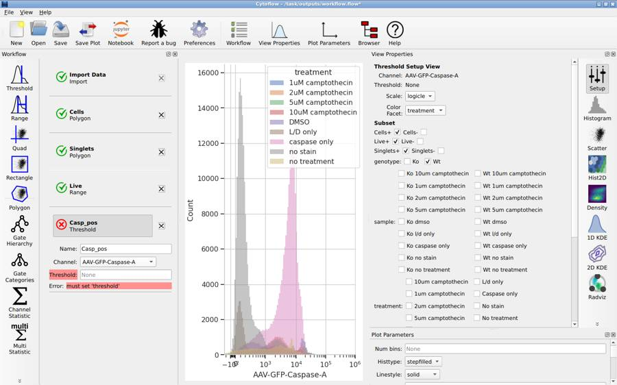
cu click 1114 658; sleep 0.5; cu click 1114 743; sleep 0.5; cu click 955 658; sleep 0.5; cu scroll 1100 600 down 3; sleep 1; cu screenshot /tmp/screen.png
{
"file_path": "/tmp/screen.png"
}/tmp/screen.png
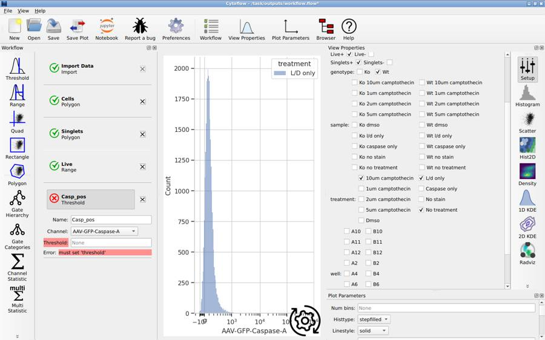
cu click 955 583; sleep 12; cu screenshot /tmp/screen.png
{
"file_path": "/tmp/screen.png"
}/tmp/screen.png
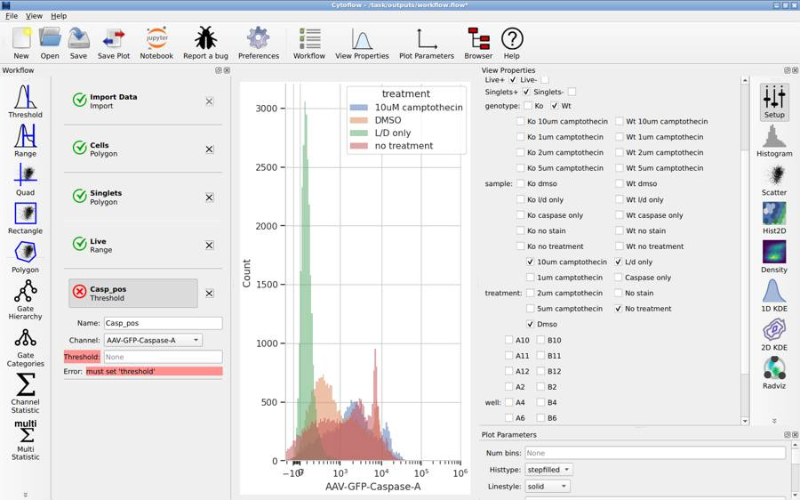
cu click 293 642; cu type "1500"; cu key Return; sleep 15; cu click 998 190; sleep 0.5; cu click 950 190; sleep 15; cu screenshot /tmp/screen.png; tail -1 /tmp/mem.log
{
"file_path": "/tmp/screen.png"
}/tmp/screen.png 19:12:06 1620:1791MB 1605:406MB 1695:59MB free=5176
cu key ctrl+s; sleep 2; ls -la /task/outputs/; cu click 45 705; sleep 3; cu screenshot /tmp/screen.png
{
"file_path": "/tmp/screen.png"
}total 68 drwxrwsrwx 2 agent task 4096 Nov 10 18:55 . drwxr-xr-x 4 root root 4096 Nov 5 22:25 .. -rw-rw-r-- 1 cfapp task 59902 Nov 10 19:12 workflow.flow /tmp/screen.png
cu drag 421 510 600 510; sleep 2; cu click 300 668; cu type "Count"; cu key Return; sleep 1; cu click 265 698; sleep 1; cu screenshot /tmp/screen.png
{
"file_path": "/tmp/screen.png"
}/tmp/screen.png
cu click 205 720; sleep 1; cu click 250 728; sleep 1; cu screenshot /tmp/screen.png
{
"file_path": "/tmp/screen.png"
}/tmp/screen.png
cu click 205 577; sleep 1; cu screenshot /tmp/screen.png
{
"file_path": "/tmp/screen.png"
}/tmp/screen.png
cu click 382 842; sleep 2; cu click 185 757; sleep 2; cu click 185 785; sleep 2; cu click 185 813; sleep 2; cu click 185 842; sleep 12; cu screenshot /tmp/screen.png; tail -1 /tmp/mem.log
{
"file_path": "/tmp/screen.png"
}/tmp/screen.png 19:13:09 1620:1829MB 1605:408MB 1695:60MB free=5039
sleep 5; cu click 1393 757; sleep 2; cu screenshot /tmp/screen.png
{
"file_path": "/tmp/screen.png"
}/tmp/screen.png
cu click 1340 675; sleep 4; cu screenshot /tmp/screen.png
{
"file_path": "/tmp/screen.png"
}/tmp/screen.png
cu click 982 181; sleep 1; cu screenshot /tmp/screen.png; python3 -I -c "
from PIL import Image
Image.open('/tmp/screen.png').crop((860,140,1220,300)).save('/tmp/c.png')"{
"file_path": "/tmp/c.png"
}/tmp/screen.png
cu click 962 207; sleep 5; cu screenshot /tmp/screen.png
{
"file_path": "/tmp/screen.png"
}/tmp/screen.png
mkdir -p /task/outputs/cytoflow_exports && chmod 777 /task/outputs/cytoflow_exports; cu click 982 211; sleep 2; cu screenshot /tmp/screen.png
{
"file_path": "/tmp/screen.png"
}/tmp/screen.png
cu click 706 567; cu paste "/task/outputs/cytoflow_exports/counts_long.csv"; sleep 0.5; cu key Return; sleep 3; ls -la /task/outputs/cytoflow_exports; head -20 /task/outputs/cytoflow_exports/counts_long.csv; wc -l /task/outputs/cytoflow_exports/counts_long.csv
total 16 drwxrwsrwx 2 root task 4096 Nov 10 19:14 . drwxrwsrwx 3 agent task 4096 Nov 10 19:13 .. -rw-rw-r-- 1 cfapp task 5120 Nov 10 19:14 counts_long.csv well,Casp_pos,Cells,Live,Singlets,FSC-A A10,0,0,0,0,37514.0 A10,0,0,0,1,5192.0 A10,0,0,1,0,76906.0 A10,0,0,1,1,11207.0 A10,0,1,0,0,2405.0 A10,0,1,0,1,10247.0 A10,0,1,1,0,2943.0 A10,0,1,1,1,11316.0 A10,1,0,0,0,37783.0 A10,1,0,0,1,9697.0 A10,1,0,1,0,19172.0 A10,1,0,1,1,22073.0 A10,1,1,0,0,77733.0 A10,1,1,0,1,198737.0 A10,1,1,1,0,8152.0 A10,1,1,1,1,21513.0 A11,0,0,0,0,43921.0 A11,0,0,0,1,5634.0 A11,0,0,1,0,49729.0 274 /task/outputs/cytoflow_exports/counts_long.csv
cd /task; python3 -I - <<'EOF'
import pandas as pd
d=pd.read_csv('outputs/cytoflow_exports/counts_long.csv')
d=d.rename(columns={'FSC-A':'n'})
lay=pd.read_csv('inputs/plate_layout.csv').set_index('well')
rows=[]
for w,g in d.groupby('well'):
tot=g.n.sum()
c=g[g.Cells==1].n.sum()
s=g[(g.Cells==1)&(g.Singlets==1)].n.sum()
l=g[(g.Cells==1)&(g.Singlets==1)&(g.Live==1)].n.sum()
p=g[(g.Cells==1)&(g.Singlets==1)&(g.Live==1)&(g.Casp_pos==1)].n.sum()
# casp+ of all singlets
ps=g[(g.Cells==1)&(g.Singlets==1)&(g.Casp_pos==1)].n.sum()
rows.append(dict(well=w,sample=lay.loc[w,'sample'],total=int(tot),cells=int(c),singlets=int(s),live=int(l),casp=int(p),
pc_cells=100*c/tot,pc_sing=100*s/c,pc_live=100*l/s,pc_casp_live=100*p/l,pc_casp_singlets=100*ps/s))
r=pd.DataFrame(rows)
order=['A2','A4','A6','A7','A8','A9','A10','A11','A12','B2','B4','B6','B7','B8','B9','B10','B11','B12']
r=r.set_index('well').loc[order]
pd.set_option('display.width',250)
print(r.round(2))
EOFsample total ... pc_casp_live pc_casp_singlets well ... A2 WT no stain 365736 ... 0.20 0.20 A4 WT caspase only 440820 ... 85.04 85.04 A6 WT L/D only 412724 ... 0.16 0.19 A7 WT 10uM camptothecin 395514 ... 57.64 91.80 A8 WT 5uM camptothecin 384992 ... 68.06 92.76 A9 WT 2uM camptothecin 428254 ... 67.18 91.12 A10 WT 1uM camptothecin 552590 ... 65.53 91.08 A11 WT DMSO 377220 ... 33.23 84.54 A12 WT no treatment 409074 ... 50.21 88.34 B2 KO no stain 392795 ... 1.60 1.60 B4 KO caspase only 605670 ... 81.72 81.72 B6 KO L/D only 457465 ... 0.06 0.56 B7 KO 10uM camptothecin 612174 ... 53.71 87.14 B8 KO 5uM camptothecin 493435 ... 51.85 87.11 B9 KO 2uM camptothecin 425772 ... 44.90 84.72 B10 KO 1uM camptothecin 539106 ... 44.49 86.73 B11 KO DMSO 561171 ... 26.24 78.80 B12 KO no treatment 538223 ... 24.07 78.81 [18 rows x 11 columns]
cd /task; python3 -I - <<'EOF'
import pandas as pd
d=pd.read_csv('outputs/cytoflow_exports/counts_long.csv')
d=d.rename(columns={'FSC-A':'n'})
lay=pd.read_csv('inputs/plate_layout.csv').set_index('well')
rows=[]
for w,g in d.groupby('well'):
tot=g.n.sum()
c=g[g.Cells==1].n.sum()
s=g[(g.Cells==1)&(g.Singlets==1)].n.sum()
l=g[(g.Cells==1)&(g.Singlets==1)&(g.Live==1)].n.sum()
p=g[(g.Cells==1)&(g.Singlets==1)&(g.Live==1)&(g.Casp_pos==1)].n.sum()
rows.append(dict(well=w,total=int(tot),cells=int(c),singlets=int(s),live=int(l),casp=int(p),
pc_cells=100*c/tot,pc_sing=100*s/c,pc_live=100*l/s,pc_casp_live=100*p/l))
r=pd.DataFrame(rows)
order=['A2','A4','A6','A7','A8','A9','A10','A11','A12','B2','B4','B6','B7','B8','B9','B10','B11','B12']
r=r.set_index('well').loc[order]
print(r.round(2).to_string())
EOFtotal cells singlets live casp pc_cells pc_sing pc_live pc_casp_live well A2 365736 224915 168370 168369 335 61.50 74.86 100.00 0.20 A4 440820 272713 207825 207824 176729 61.86 76.21 100.00 85.04 A6 412724 255140 197979 25400 40 61.82 77.60 12.83 0.16 A7 395514 258960 203378 19030 10968 65.47 78.54 9.36 57.64 A8 384992 249392 199927 24768 16858 64.78 80.17 12.39 68.06 A9 428254 268122 208368 31135 20916 62.61 77.71 14.94 67.18 A10 552590 333046 241813 32829 21513 60.27 72.61 13.58 65.53 A11 377220 243981 191888 26425 8782 64.68 78.65 13.77 33.23 A12 409074 277387 198149 25413 12759 67.81 71.43 12.83 50.21 B2 392795 252647 210118 210058 3352 64.32 83.17 99.97 1.60 B4 605670 388612 298845 298838 244222 64.16 76.90 100.00 81.72 B6 457465 261271 206825 15442 9 57.11 79.16 7.47 0.06 B7 612174 366444 274227 12598 6767 59.86 74.83 4.59 53.71 B8 493435 303671 239585 7560 3920 61.54 78.90 3.16 51.85 B9 425772 240403 195759 12489 5608 56.46 81.43 6.38 44.90 B10 539106 318397 248528 14013 6235 59.06 78.06 5.64 44.49 B11 561171 325448 246112 15829 4153 57.99 75.62 6.43 26.24 B12 538223 318973 242151 22972 5530 59.26 75.92 9.49 24.07
thinking
Live fractions are low (WT ~9–15%, KO ~3–9% of singlets), and caspase+ among live cells rises with camptothecin in both genotypes. Next I'll check acquisition quality per well before writing the flags and deliverables.
cu click 45 890; sleep 2; cu screenshot /tmp/screen.png
{
"file_path": "/tmp/screen.png"
}/tmp/screen.png
cu click 130 490; sleep 3; cu screenshot /tmp/screen.png
{
"file_path": "/tmp/screen.png"
}/tmp/screen.png
cu click 45 890; sleep 2; cu screenshot /tmp/screen.png
{
"file_path": "/tmp/screen.png"
}/tmp/screen.png
cu click 380 754; cu type "TimeBin"; cu key Return; sleep 1; cu click 272 785; sleep 1; cu screenshot /tmp/screen.png; python3 -I -c "
from PIL import Image
Image.open('/tmp/screen.png').crop((100,560,600,900)).save('/tmp/c.png')"{
"file_path": "/tmp/c.png"
}/tmp/screen.png
cu click 210 887; sleep 12; cu screenshot /tmp/screen.png; tail -1 /tmp/mem.log
{
"file_path": "/tmp/screen.png"
}/tmp/screen.png 19:16:00 1620:1840MB 1605:409MB 1695:56MB free=5093
cu click 380 845; cu type "2000"; cu key Return; sleep 20; cu screenshot /tmp/screen.png; tail -1 /tmp/mem.log
{
"file_path": "/tmp/screen.png"
}/tmp/screen.png 19:16:24 1620:1860MB 1605:409MB 1695:56MB free=5111
cu click 45 705; sleep 3; cu scroll 350 600 down 15; sleep 1; cu screenshot /tmp/screen.png
{
"file_path": "/tmp/screen.png"
}/tmp/screen.png
cu scroll 350 500 up 3; sleep 1; cu screenshot /tmp/screen.png
{
"file_path": "/tmp/screen.png"
}/tmp/screen.png
cu scroll 350 500 up 1; sleep 1; cu screenshot /tmp/screen.png; python3 -I -c "
from PIL import Image
Image.open('/tmp/screen.png').crop((95,130,600,520)).save('/tmp/c.png')"{
"file_path": "/tmp/c.png"
}/tmp/screen.png
cu click 370 152; cu type "TimeCount"; cu key Return; sleep 1; cu click 265 183; sleep 1; cu click 210 208; sleep 1; cu click 255 214; sleep 1; cu screenshot /tmp/screen.png; python3 -I -c "
from PIL import Image
Image.open('/tmp/screen.png').crop((95,130,600,520)).save('/tmp/c.png')"{
"file_path": "/tmp/c.png"
}/tmp/screen.png
cu click 205 216; sleep 1; cu click 382 327; sleep 2; cu click 185 355; sleep 3; cu click 185 271; sleep 3; cu click 185 299; sleep 12; cu screenshot /tmp/screen.png; python3 -I -c "
from PIL import Image
Image.open('/tmp/screen.png').crop((95,130,600,520)).save('/tmp/c.png')"{
"file_path": "/tmp/c.png"
}/tmp/screen.png
cu click 1393 757; sleep 2; cu click 1340 675; sleep 4; cu click 982 181; sleep 1; cu screenshot /tmp/screen.png; python3 -I -c "
from PIL import Image
Image.open('/tmp/screen.png').crop((860,140,1440,320)).save('/tmp/c.png')"{
"file_path": "/tmp/c.png"
}/tmp/screen.png
cu click 975 231; sleep 4; cu click 982 211; sleep 2; cu screenshot /tmp/screen.png
{
"file_path": "/tmp/screen.png"
}/tmp/screen.png
cu click 706 567; cu paste "/task/outputs/cytoflow_exports/timecount_long.csv"; sleep 0.5; cu key Return; sleep 3; cu key ctrl+s; sleep 2; cd /task; head -5 outputs/cytoflow_exports/timecount_long.csv; python3 -I - <<'EOF'
import pandas as pd
d=pd.read_csv('/task/outputs/cytoflow_exports/timecount_long.csv').rename(columns={'FSC-A':'n'})
t=d.groupby(['well','TimeBin']).n.sum().unstack('well').fillna(0).astype(int)
order=['A2','A4','A6','A7','A8','A9','A10','A11','A12','B2','B4','B6','B7','B8','B9','B10','B11','B12']
pd.set_option('display.width',300)
print(t[order].to_string())
print(t[order].sum())
EOFwell,TimeBin,Cells,Live,FSC-A A10,0,0,0,4058.0 A10,0,0,1,6819.0 A10,0,1,0,13626.0 A10,0,1,1,2379.0 well A2 A4 A6 A7 A8 A9 A10 A11 A12 B2 B4 B6 B7 B8 B9 B10 B11 B12 TimeBin 0 16481 17342 17696 17591 17187 20421 26882 16254 819 15379 26535 18078 26164 22691 18956 23101 25854 24549 2000 16364 19011 17994 18132 21466 20068 26512 16713 265 16338 26770 19830 28324 23982 19363 24602 26032 25534 4000 16104 19115 18408 17343 17216 19350 25889 16298 1 16263 26847 19604 28056 26542 19650 24136 25233 24933 6000 16335 19162 18644 17577 17217 19048 25745 16552 101 16518 26854 20045 27835 22340 19032 24219 25217 25100 8000 16742 19274 19038 17462 17247 19070 25983 16687 50 17045 26994 20169 27348 22471 19267 24240 25818 24205 10000 16359 19314 18744 17694 16881 19144 25534 16843 1257 17294 26921 20408 27734 22348 19445 24362 25686 24089 12000 15981 19194 18403 17350 16649 18446 24703 16261 74 17255 26737 20237 27214 21765 19186 23756 24957 23695 14000 16062 18584 17919 16686 17434 18272 23905 16276 65 17284 26268 19827 26869 20979 18752 23553 24333 22930 16000 15465 18905 18088 16643 17482 18003 23870 15714 55 17191 26148 19687 26054 21740 18863 23445 24418 22640 18000 15721 19125 18281 16741 17486 18330 24414 16150 137 17436 26255 19973 26668 21565 18672 23352 24855 22988 20000 16090 18991 18537 16907 17204 18800 24171 16379 26423 17559 26489 19953 26518 21773 18736 23177 24985 22777 22000 16345 18704 18778 17200 17232 18529 24088 16634 16568 17499 26751 20577 26651 21411 18826 23163 25389 23258 24000 14968 18673 18020 17189 17144 18240 23620 16615 40251 17447 26634 20309 26089 21784 18565 23058 25061 23347 26000 16635 19402 19084 17191 17237 18580 23341 16797 43433 17673 26563 20749 25972 21626 18703 23369 25217 23278 28000 15789 19574 18345 17441 16928 18070 23229 16823 42912 17289 26198 20208 24153 22063 18674 22691 24779 22449 30000 15154 19662 19019 17392 16222 18318 21357 16212 38312 16833 25792 19446 25238 21308 17794 22790 24145 22461 32000 16117 19085 18135 17160 15380 17537 22048 15997 28102 16610 25290 19654 25440 20795 17461 22054 23508 21582 34000 14171 18794 17945 17080 15196 17139 22106 15753 25282 16383 24839 18914 25383 20216 17483 22197 23130 21593 36000 15026 18877 17453 16779 15285 17313 21019 15270 26339 16081 24817 18681 24500 20117 16689 22161 23094 21347 38000 14497 18297 17123 16339 13973 16025 20449 15516 25054 16209 23688 18501 25077 19499 16371 21641 22899 20556 40000 14707 18582 16035 15358 13542 16873 20630 14492 27041 15976 22914 17798 24074 18579 16100 21391 22183 21399 42000 14323 17360 15170 14283 13858 16124 20061 14810 26411 15816 22235 18130 24169 19014 16207 19373 22291 19596 44000 13058 16676 15320 14609 12901 15550 19401 14777 26690 15833 24432 18189 24651 17898 15308 21916 20938 21663 46000 7242 9117 545 7367 6625 11004 13633 7397 13432 7584 12699 8498 11993 929 7669 11359 1149 12254 well A2 365736 A4 440820 A6 412724 A7 395514 A8 384992 A9 428254 A10 552590 A11 377220 A12 409074 B2 392795 B4 605670 B6 457465 B7 612174 B8 493435 B9 425772 B10 539106 B11 561171 B12 538223 dtype: int64
cd /task; python3 -I - <<'EOF'
import pandas as pd
d=pd.read_csv('/task/outputs/cytoflow_exports/timecount_long.csv').rename(columns={'FSC-A':'n'})
order=['A2','A4','A6','A7','A8','A9','A10','A11','A12','B2','B4','B6','B7','B8','B9','B10','B11','B12']
tot=d.groupby(['well','TimeBin']).n.sum().unstack('well').fillna(0)
cells=d[d.Cells==1].groupby(['well','TimeBin']).n.sum().unstack('well').fillna(0)
live=d[(d.Cells==1)&(d.Live==1)].groupby(['well','TimeBin']).n.sum().unstack('well').fillna(0)
pd.set_option('display.width',300)
print('pct cells of all'); print((100*cells/tot)[order].round(1).to_string())
print('pct live of cells'); print((100*live/cells)[order].round(1).to_string())
# rate stats
r=tot[order].iloc[:-1]
print((r.max()/r.median()).round(2)); print((r.min()/r.median()).round(3)); print((r.std()/r.mean()).round(3))
EOFpct cells of all well A2 A4 A6 A7 A8 A9 A10 A11 A12 B2 B4 B6 B7 B8 B9 B10 B11 B12 TimeBin 0 58.9 58.7 57.9 65.3 64.8 62.6 59.5 63.3 63.9 62.1 63.2 54.9 59.7 59.7 56.7 58.3 55.0 58.8 2000 56.6 56.1 58.6 60.0 61.9 57.9 55.9 59.0 59.2 59.6 59.9 52.5 55.5 58.4 52.1 53.3 53.8 55.8 4000 58.3 56.5 59.8 62.2 61.5 59.1 57.8 61.8 0.0 60.2 60.1 53.4 55.2 59.3 53.2 55.1 55.5 56.2 6000 59.2 58.9 58.9 63.6 62.8 60.6 58.3 62.3 14.9 62.1 62.1 54.1 57.5 59.3 53.5 56.8 56.4 57.1 8000 59.9 59.1 59.3 63.8 63.6 60.6 59.4 63.1 18.0 61.9 62.6 54.8 57.7 59.2 54.4 57.5 56.0 57.4 10000 59.7 59.7 60.6 63.2 62.9 61.6 59.7 62.6 50.6 62.1 62.5 54.8 58.4 60.0 55.4 57.6 56.8 57.9 12000 60.2 60.3 60.8 63.5 63.6 61.4 60.1 62.8 18.9 62.6 63.2 55.7 57.9 60.1 55.5 58.8 57.4 58.3 14000 61.1 60.0 60.6 64.3 65.2 62.4 60.5 62.2 24.6 63.5 64.2 56.5 59.6 60.5 55.9 59.6 57.7 59.3 16000 61.3 61.8 61.0 65.3 65.4 62.5 61.1 64.3 32.7 64.3 65.4 57.3 59.7 61.8 56.8 59.8 59.1 59.9 18000 62.4 62.7 62.5 65.6 65.1 63.9 62.0 65.2 19.0 64.5 65.4 58.5 60.9 61.9 56.3 61.0 58.9 60.2 20000 62.6 63.6 63.1 66.6 66.4 64.8 61.6 65.6 67.5 64.8 66.5 58.9 61.5 62.8 57.5 60.7 59.9 61.3 22000 63.8 63.4 62.7 66.4 66.5 64.1 61.6 67.3 67.4 66.8 66.3 59.0 61.2 63.1 57.9 61.4 60.7 61.4 24000 61.5 64.6 63.3 67.3 65.9 64.6 61.5 66.9 73.4 65.9 66.3 59.7 61.1 63.4 58.1 61.6 59.9 61.4 26000 64.1 63.4 64.1 67.3 66.9 64.6 61.3 67.2 73.7 66.2 65.9 59.6 61.5 63.7 59.2 61.1 60.5 61.6 28000 64.3 64.5 63.7 66.9 67.1 64.1 62.0 66.9 72.6 65.8 65.7 59.9 60.9 63.9 59.2 60.6 59.7 60.9 30000 63.9 63.9 63.9 68.1 66.1 64.2 60.7 65.6 62.7 65.7 65.9 58.9 61.7 63.7 58.9 60.6 59.0 59.9 32000 63.4 63.4 63.7 67.5 65.9 63.9 60.5 67.2 65.9 65.4 65.6 58.8 61.6 63.4 58.4 60.6 59.3 60.4 34000 63.3 63.6 63.7 67.2 66.3 64.3 61.3 66.7 65.9 65.2 65.6 57.6 61.2 62.5 58.3 60.6 58.9 60.5 36000 62.2 63.2 63.4 67.0 66.5 63.8 61.0 66.5 66.2 66.2 65.8 58.4 61.2 63.0 57.0 59.5 59.2 60.1 38000 62.9 63.7 62.8 67.5 65.0 62.9 60.4 65.7 66.8 66.3 65.2 57.9 61.7 62.1 57.8 59.9 58.3 60.0 40000 63.3 63.1 62.7 66.0 65.3 63.3 61.9 64.8 66.3 65.9 64.9 58.2 61.3 62.6 56.7 58.8 58.8 60.1 42000 63.0 63.7 62.8 65.8 64.8 63.2 60.9 65.6 65.1 66.2 62.7 58.0 61.6 61.9 57.4 57.4 57.9 58.0 44000 60.0 64.1 62.5 66.8 60.8 60.6 58.9 65.6 64.2 66.0 61.4 57.6 61.2 60.9 55.3 58.1 55.9 57.5 46000 59.3 64.4 56.1 65.5 64.3 62.3 59.8 64.0 64.6 64.3 63.3 54.1 57.9 60.0 51.6 59.6 53.2 59.5 pct live of cells well A2 A4 A6 A7 A8 A9 A10 A11 A12 B2 B4 B6 B7 B8 B9 B10 B11 B12 TimeBin 0 100.0 100.0 14.1 10.4 12.5 15.3 14.9 13.8 13.4 100.0 100.0 7.3 4.2 3.0 6.1 4.7 6.0 9.5 2000 100.0 100.0 13.6 9.1 12.4 14.9 13.5 14.1 12.1 100.0 100.0 7.1 4.1 3.0 5.2 5.4 6.2 10.1 4000 100.0 100.0 14.3 9.3 13.4 15.6 14.2 14.6 NaN 100.0 100.0 7.3 4.0 2.9 5.8 5.1 6.5 9.9 6000 100.0 100.0 13.6 10.3 13.2 15.5 14.1 14.2 100.0 100.0 100.0 7.1 4.0 2.7 6.0 5.2 6.1 10.0 8000 100.0 100.0 13.5 10.3 12.7 15.3 13.9 14.9 100.0 100.0 100.0 7.4 4.1 2.9 6.0 5.2 6.1 9.6 10000 100.0 100.0 13.3 10.0 12.5 15.4 13.4 14.5 33.5 100.0 100.0 7.2 4.1 2.6 5.8 5.1 6.0 9.8 12000 100.0 100.0 12.8 9.2 12.0 13.9 12.6 14.2 100.0 100.0 100.0 6.9 4.0 2.8 5.8 4.7 6.2 9.0 14000 100.0 100.0 12.2 9.2 12.9 13.9 12.6 13.6 100.0 100.0 100.0 6.8 3.9 2.9 5.6 5.1 5.6 8.9 16000 100.0 100.0 12.9 9.0 12.8 13.6 12.6 13.9 100.0 100.0 100.0 6.6 3.8 2.6 5.9 4.6 5.7 8.7 18000 100.0 100.0 12.1 8.8 12.9 13.8 12.8 13.2 100.0 100.0 100.0 6.9 3.7 2.6 6.0 4.8 5.7 8.9 20000 100.0 100.0 12.7 8.8 11.8 14.3 12.6 13.9 11.4 100.0 100.0 7.0 3.8 2.7 5.9 4.9 5.4 8.6 22000 100.0 100.0 12.4 8.9 12.8 14.5 12.9 13.9 16.6 100.0 100.0 7.0 3.9 2.7 6.2 4.8 5.7 9.3 24000 100.0 100.0 12.3 8.9 12.5 14.3 12.8 14.6 14.3 100.0 100.0 6.9 3.8 3.0 6.9 5.2 6.1 8.9 26000 100.0 100.0 12.4 9.7 13.3 14.2 13.2 14.7 14.6 99.9 100.0 7.1 3.5 3.2 6.2 5.5 6.4 10.1 28000 100.0 100.0 13.2 9.6 12.0 14.8 12.6 15.0 13.4 100.0 100.0 7.3 3.9 3.0 6.1 5.6 6.1 9.4 30000 100.0 100.0 13.0 9.8 12.1 14.5 13.1 15.0 11.2 100.0 100.0 7.6 3.6 2.6 6.0 5.6 6.5 9.9 32000 100.0 100.0 13.5 9.4 11.2 15.2 12.5 15.5 11.0 100.0 100.0 7.7 3.7 3.0 6.0 5.5 6.5 9.6 34000 100.0 100.0 12.9 9.4 11.4 13.9 13.4 15.5 11.5 99.9 100.0 7.3 3.9 2.8 5.8 5.5 6.0 9.4 36000 100.0 100.0 12.4 9.2 11.1 13.9 13.4 14.7 11.4 100.0 100.0 7.0 4.0 2.4 5.8 4.9 6.2 9.4 38000 100.0 100.0 12.4 9.3 12.2 14.7 13.1 14.9 11.3 99.9 100.0 7.0 3.7 2.6 5.6 5.2 6.0 9.1 40000 100.0 100.0 12.6 8.7 11.8 15.1 12.7 14.5 10.8 99.9 100.0 6.6 3.8 2.6 5.8 5.4 5.6 9.4 42000 100.0 100.0 12.4 8.7 12.3 15.8 12.7 14.6 12.1 100.0 100.0 6.6 3.8 2.5 5.8 5.5 6.0 9.6 44000 100.0 100.0 13.3 9.5 12.1 14.1 13.1 14.9 11.2 99.9 100.0 7.0 3.9 2.9 6.0 5.0 6.6 9.3 46000 100.0 100.0 14.7 9.7 11.1 13.7 13.5 16.0 11.0 100.0 1 … [784 more characters not shown]
cu click 45 180; sleep 3; cu scroll 350 500 down 30; sleep 1; cu screenshot /tmp/screen.png
{
"file_path": "/tmp/screen.png"
}/tmp/screen.png
thinking
Well A12 (untreated WT) showed almost no events for about 20 s and then a burst, a clog signature, so it will be excluded. I'm adding detector-saturation checks before finalising the flags.
cu click 375 786; cu type "Sat_casp"; cu key Return; sleep 1; cu click 275 816; sleep 1; cu screenshot /tmp/screen.png; python3 -I -c "
from PIL import Image
Image.open('/tmp/screen.png').crop((95,600,600,900)).save('/tmp/c.png')"{
"file_path": "/tmp/c.png"
}/tmp/screen.png
cu click 250 696; sleep 8; cu click 375 846; cu type "1000000"; cu key Return; sleep 10; cu screenshot /tmp/screen.png
{
"file_path": "/tmp/screen.png"
}/tmp/screen.png
sleep 8; cu click 375 846; sleep 0.5; cu type "1000000"; cu key Return; sleep 15; cu screenshot /tmp/screen.png; tail -1 /tmp/mem.log
{
"file_path": "/tmp/screen.png"
}/tmp/screen.png 19:20:10 1605:384MB 1618:21MB 1695:15MB free=6937
grep -n "" /tmp/mem.log | tail -25 | cut -c1-120; dmesg | tail -2 | cut -c1-200
463:19:19:07 1620:1921MB 1605:416MB 1695:57MB free=5021 464:19:19:10 1620:1921MB 1605:416MB 1695:56MB free=5026 465:19:19:13 1620:1921MB 1605:416MB 1695:56MB free=5026 466:19:19:16 1620:1921MB 1605:416MB 1695:56MB free=5035 467:19:19:19 1620:1921MB 1605:416MB 1695:56MB free=5013 468:19:19:22 1620:1921MB 1605:416MB 1695:56MB free=5022 469:19:19:25 1620:3377MB 1605:416MB 1695:56MB free=3563 470:19:19:28 1605:381MB 1618:21MB 1695:13MB free=6930 471:19:19:31 1605:383MB 1618:21MB 1695:13MB free=6922 472:19:19:34 1605:383MB 1618:21MB 1695:13MB free=6921 473:19:19:37 1605:383MB 1618:21MB 1695:13MB free=6921 474:19:19:40 1605:383MB 1618:21MB 1695:13MB free=6921 475:19:19:43 1605:383MB 1618:21MB 1695:15MB free=6919 476:19:19:46 1605:383MB 1618:21MB 1695:15MB free=6918 477:19:19:49 1605:383MB 1618:21MB 1695:15MB free=6920 478:19:19:52 1605:383MB 1618:21MB 1695:15MB free=6920 479:19:19:55 1605:383MB 1618:21MB 1695:15MB free=6920 480:19:19:58 1605:384MB 1618:21MB 1695:15MB free=6920 481:19:20:01 1605:384MB 1618:21MB 1695:15MB free=6920 482:19:20:04 1605:384MB 1618:21MB 1695:15MB free=6920 483:19:20:07 1605:384MB 1618:21MB 1695:15MB free=6937 484:19:20:10 1605:384MB 1618:21MB 1695:15MB free=6937 485:19:20:13 1605:384MB 1618:21MB 1695:15MB free=6927 486:19:20:16 1605:384MB 1618:21MB 1695:15MB free=6927 487:19:20:19 1605:384MB 1618:21MB 1695:15MB free=6927 [ 1949.536976] oom-kill:constraint=CONSTRAINT_NONE,nodemask=(null),cpuset=/,mems_allowed=0,global_oom,task_memcg=/,task=cytoflow,pid=1620,uid=1002 [ 1949.537042] Out of memory: Killed process 1620 (cytoflow) total-vm:9069412kB, anon-rss:7232940kB, file-rss:8kB, shmem-rss:28kB, UID:1002 pgtables:14848kB oom_score_adj:0
thinking
Cytoflow ran out of memory again on the linear-scale histogram of 8.4M events, but the workflow was saved beforehand. I'll restart it and use logicle scales with a fixed bin count for the remaining checks.
cu click 915 484; sleep 1; cu screenshot /tmp/screen.png
{
"file_path": "/tmp/screen.png"
}/tmp/screen.png
cu click 541 732; sleep 2; cu key ctrl+s; sleep 3; ls -la /task/outputs/workflow.flow; grep -n -E "^ operation:|^- !workflow-item|name: " /task/outputs/workflow.flow | grep -v "name_metadata" | head -40; cu click 20 28; sleep 1; cu click 46 195; sleep 3; cu screenshot /tmp/screen.png
{
"file_path": "/tmp/screen.png"
}-rw-rw-r-- 1 cfapp task 337638 Nov 10 19:20 /task/outputs/workflow.flow 1:- !workflow-item;5 20: name: null 47: name: null 81: name: null 115: name: null 167: name: genotype 173: name: sample 195: name: treatment 208: name: well 237: fcs_name: AAV-GFP-Caspase-A 242: fcs_name: FSC-A 247: fcs_name: FSC-H 252: fcs_name: FSC-W 257: fcs_name: LiveDead-Zombie NIR-A 262: fcs_name: SSC-A 267: fcs_name: SSC-H 272: fcs_name: SSC-W 277: fcs_name: Time 354: operation: !import;4 572: name: genotype 578: name: sample 600: name: treatment 613: name: well 640:- !workflow-item;5 658: name: null 669: name: null 696: name: null 730: name: null 764: name: null 789: name: Cells 843: name: genotype 849: name: sample 871: name: treatment 884: name: well 907: fcs_name: AAV-GFP-Caspase-A 919: fcs_name: FSC-A 924: fcs_name: FSC-H 929: fcs_name: FSC-W 934: fcs_name: LiveDead-Zombie NIR-A 939: fcs_name: SSC-A /tmp/screen.png

cd /task; grep -n -E "^ operation: " outputs/workflow.flow; grep -n -E "^ (name|low|high|threshold|channel|xchannel|ychannel|bin_width|function_name|statistic_name|by):" outputs/workflow.flow | head -60; cp outputs/workflow.flow /tmp/workflow_backup1.flow
354: operation: !import;4 1031: operation: *id003 1579: operation: &id005 !polygon;1 2302: operation: &id008 !range;1 3011: operation: *id011 3529: operation: !channel-statistic;2 5948: operation: *id015 8092: operation: !channel-statistic;2 229: xchannel: FSC-A 232: ychannel: SSC-A 1440: xchannel: AAV-GFP-Caspase-A 1443: ychannel: LiveDead-Zombie NIR-A 1580: name: Singlets 1618: xchannel: FSC-A 1620: ychannel: FSC-H 2156: xchannel: FSC-A 2159: ychannel: SSC-A 2303: channel: LiveDead-Zombie NIR-A 2304: high: 2000.0 2305: low: -1000000.0 2306: name: Live 3530: by: 3536: channel: FSC-A 3537: function_name: Count 3538: name: Count 8093: by: 8098: channel: FSC-A 8099: function_name: Count 8100: name: TimeCount
until DISPLAY=:1 xwininfo -root -tree 2>/dev/null | grep -q -E '"(Cytometry analysis|Cytoflow)'; do sleep 2; done; sleep 6; cu click 600 9 double; sleep 2; cu click 90 75; sleep 2; cu click 706 576; cu paste "/task/outputs/workflow.flow"; sleep 0.5; cu key Return; sleep 4; cu screenshot /tmp/screen.png
{
"file_path": "/tmp/screen.png"
}/tmp/screen.png
cu click 738 427; sleep 40; tail -2 /tmp/mem.log; cu click 408 713; sleep 0.5; cu click 408 614; sleep 1; cu screenshot /tmp/screen.png
{
"file_path": "/tmp/screen.png"
}19:22:14 8721:1626MB 8692:536MB 8785:70MB free=5340 19:22:17 8721:1626MB 8692:536MB 8785:70MB free=5367 /tmp/screen.png
cu click 408 784; sleep 0.5; cu drag 1020 510 860 510; sleep 1; cu click 240 527; sleep 12; cu click 1393 390; sleep 3; cu screenshot /tmp/screen.png
{
"file_path": "/tmp/screen.png"
}/tmp/screen.png
cu click 982 211; sleep 1; cu click 970 236; sleep 1; cu click 982 271; sleep 1; cu click 970 296; sleep 1; cu click 995 304; sleep 1; cu click 975 112; sleep 1; cu click 927 523; sleep 0.4; cu click 923 545; sleep 0.4; cu click 947 567; sleep 0.4; for y in 620 648 676 704 732; do cu click 937 $y; sleep 0.4; cu click 1115 $y; sleep 0.4; done; cu click 1036 181; sleep 1; cu click 1000 206; sleep 1.5; cu click 1036 241; sleep 1; cu click 1000 362; sleep 2; cu drag 859 510 1180 510; sleep 20; cu screenshot /tmp/screen.png; tail -1 /tmp/mem.log
{
"file_path": "/tmp/screen.png"
}/tmp/screen.png 19:23:32 8721:1627MB 8692:545MB 8785:71MB free=5381
cu drag 1264 804 1264 560; sleep 2; cu screenshot /tmp/screen.png; python3 -I -c "
from PIL import Image
Image.open('/tmp/screen.png').crop((1180,540,1440,900)).save('/tmp/c.png')"{
"file_path": "/tmp/c.png"
}/tmp/screen.png
cu click 1360 657; cu type "50000"; cu key Return; sleep 1; cu click 1360 718; cu type "20000"; cu key Return; sleep 1; cu click 1340 605; cu key ctrl+a; cu type "120"; cu key Return; sleep 15; cu screenshot /tmp/screen.png
{
"file_path": "/tmp/screen.png"
}/tmp/screen.png
cu drag 1181 510 860 510; sleep 1; cu click 240 877; sleep 4; cu click 45 180; sleep 3; cu scroll 250 600 down 30; sleep 1; cu screenshot /tmp/screen.png
{
"file_path": "/tmp/screen.png"
}/tmp/screen.png
cu click 980 224; sleep 1; cu click 970 273; sleep 1; cu click 1178 605; cu type "100"; cu key Return; sleep 1; cu click 285 771; cu type "Sat_casp"; cu key Return; sleep 1; cu click 275 801; sleep 1; cu screenshot /tmp/screen.png
{
"file_path": "/tmp/screen.png"
}/tmp/screen.png
cu click 275 816; sleep 1; cu click 250 696; sleep 15; cu screenshot /tmp/screen.png; tail -1 /tmp/mem.log
{
"file_path": "/tmp/screen.png"
}/tmp/screen.png 19:25:14 8692:394MB 8719:21MB 8785:15MB free=6936
cu click 915 461; sleep 1; cu click 362 732; sleep 2; cu key ctrl+s; sleep 3; cu click 20 28; sleep 1; cu click 46 195; sleep 4; grep -c "Sat_casp" /task/outputs/workflow.flow; ls -la /task/outputs/workflow.flow; cp /task/outputs/workflow.flow /tmp/workflow_backup2.flow until DISPLAY=:1 xwininfo -root -tree 2>/dev/null | grep -q -E '"(Cytometry analysis|Cytoflow)'; do sleep 2; done; sleep 6; cu click 600 9 double; sleep 2; cu click 90 75; sleep 2; cu click 706 576; cu paste "/task/outputs/workflow.flow"; sleep 0.5; cu key Return; sleep 4; cu click 738 427; sleep 45; cu click 408 713; sleep 0.5; cu click 408 614; sleep 1; cu click 408 784; sleep 0.5; cu drag 1020 510 860 510; sleep 1; cu screenshot /tmp/screen.png; tail -1 /tmp/mem.log
{
"file_path": "/tmp/screen.png"
}0 -rw-rw-r-- 1 cfapp task 337638 Nov 10 19:20 /task/outputs/workflow.flow /tmp/screen.png 19:27:11 8692:400MB 8785:37MB 8719:21MB free=6901
cu click 915 476; sleep 1; cu screenshot /tmp/screen.png
{
"file_path": "/tmp/screen.png"
}/tmp/screen.png
ps -eo pid,ppid,rss,etime,cmd | grep cytoflow | grep -v grep | cut -c1-150; tail -3 /tmp/cytoflow.log
836 835 328 40:31 runuser -u cfapp -- env DISPLAY=:1 HOME=/home/cfapp XDG_RUNTIME_DIR=/tmp/runtime-cfapp LANG=C.UTF-8 LC_ALL=C.UTF-8 bash 837 836 284 40:31 /bin/bash /usr/local/bin/start-cytoflow 865 1 0 40:21 [cytoflow] <defunct> 1618 1 0 31:27 [cytoflow] <defunct> 8692 837 409912 06:42 /opt/cytoflow/cytoflow-1.3.2/cytoflow 8719 8692 22088 06:40 /opt/cytoflow/cytoflow-1.3.2/cytoflow -B -S -I -c from multiprocessing.resource_tracker import main;main(9) 8747 8692 7488 06:37 /opt/cytoflow/cytoflow-1.3.2/_internal/PyQt5/Qt5/libexec/QtWebEngineProcess --type=zygote --no-zygote-sandbox --applicat 8768 8692 7500 06:37 /opt/cytoflow/cytoflow-1.3.2/_internal/PyQt5/Qt5/libexec/QtWebEngineProcess --type=zygote --application-name=cytoflow -- 8770 8768 7504 06:37 /opt/cytoflow/cytoflow-1.3.2/_internal/PyQt5/Qt5/libexec/QtWebEngineProcess --type=zygote --application-name=cytoflow -- 8785 8770 38020 06:37 /opt/cytoflow/cytoflow-1.3.2/_internal/PyQt5/Qt5/libexec/QtWebEngineProcess --type=zygote --application-name=cytoflow -- 2026-11-10 19:26:26,091 ERROR:root:Error: <class 'BrokenPipeError'>: [Errno 32] Broken pipe Location: File "multiprocessing/connection.py", line 384, in _send Thread: Main
cu click 20 29; sleep 1; cu click 46 196; sleep 3; cu screenshot /tmp/screen.png
{
"file_path": "/tmp/screen.png"
}/tmp/screen.png

ls -la /task/outputs/workflow.flow; until DISPLAY=:1 xwininfo -root -tree 2>/dev/null | grep -q -E '"(Cytometry analysis|Cytoflow)'; do sleep 2; done; sleep 8; cu click 600 9 double; sleep 2; cu click 90 75; sleep 2; cu screenshot /tmp/screen.png
{
"file_path": "/tmp/screen.png"
}-rw-rw-r-- 1 cfapp task 337638 Nov 10 19:20 /task/outputs/workflow.flow /tmp/screen.png
cu click 706 576; cu paste "/task/outputs/workflow.flow"; sleep 0.5; cu key Return; sleep 4; cu click 738 427; sleep 45; cu click 408 713; sleep 0.5; cu click 408 614; sleep 1; cu click 408 784; sleep 0.5; cu drag 1020 510 860 510; sleep 1; cu screenshot /tmp/screen.png; tail -1 /tmp/mem.log
{
"file_path": "/tmp/screen.png"
}/tmp/screen.png 19:29:00 10815:1637MB 10789:529MB 10879:69MB free=5383
cu click 240 787; sleep 5; cu click 45 180; sleep 3; cu scroll 250 600 down 30; sleep 1; cu screenshot /tmp/screen.png
{
"file_path": "/tmp/screen.png"
}/tmp/screen.png
cu click 980 224; sleep 1; cu click 970 273; sleep 1; cu click 1115 655; sleep 1; cu click 1178 849; cu type "100"; cu key Return; sleep 1; cu click 285 771; cu type "Sat_casp"; cu key Return; sleep 2; cu screenshot /tmp/screen.png
{
"file_path": "/tmp/screen.png"
}/tmp/screen.png
cu click 275 816; sleep 1; cu click 250 696; sleep 10; cu screenshot /tmp/screen.png; tail -4 /tmp/mem.log
{
"file_path": "/tmp/screen.png"
}/tmp/screen.png 19:29:42 10815:1637MB 10789:537MB 10879:71MB free=5355 19:29:45 10815:1637MB 10789:537MB 10879:71MB free=5315 19:29:48 10815:1637MB 10789:537MB 10879:71MB free=5332 19:29:51 10815:1637MB 10789:537MB 10879:71MB free=5344
cu click 285 846; cu type "1000000"; cu key Return; sleep 12; cu screenshot /tmp/screen.png; tail -2 /tmp/mem.log
{
"file_path": "/tmp/screen.png"
}/tmp/screen.png 19:30:06 10815:1637MB 10789:538MB 10879:70MB free=5328 19:30:09 10815:1637MB 10789:538MB 10879:70MB free=5344
cu key ctrl+s; sleep 3; cu click 45 180; sleep 3; cu scroll 250 600 down 30; sleep 1; cu screenshot /tmp/screen.png
{
"file_path": "/tmp/screen.png"
}/tmp/screen.png
cu click 980 224; sleep 1; cu click 970 273; sleep 1; cu click 1115 677; sleep 1; cu click 1178 849; cu type "100"; cu key Return; sleep 1; cu click 285 771; cu type "Sat_zombie"; cu key Return; sleep 2; cu click 275 816; sleep 1; cu screenshot /tmp/screen.png
{
"file_path": "/tmp/screen.png"
}/tmp/screen.png
cu click 268 792; sleep 10; cu click 285 846; cu type "1000000"; cu key Return; sleep 12; cu screenshot /tmp/screen.png; tail -1 /tmp/mem.log
{
"file_path": "/tmp/screen.png"
}/tmp/screen.png 19:31:21 10815:1648MB 10789:541MB 10879:70MB free=5333
cu key ctrl+s; sleep 3; cu click 45 705; sleep 3; cu scroll 250 600 down 40; sleep 1; cu screenshot /tmp/screen.png
{
"file_path": "/tmp/screen.png"
}/tmp/screen.png
cu click 290 582; cu type "SatCount"; cu key Return; sleep 1; cu click 250 642; sleep 1; cu screenshot /tmp/screen.png; python3 -I -c "
from PIL import Image
Image.open('/tmp/screen.png').crop((95,480,420,900)).save('/tmp/c.png')"{
"file_path": "/tmp/c.png"
}/tmp/screen.png
cu click 205 577; sleep 1; cu click 361 783; sleep 2; cu click 185 755; sleep 2; cu click 185 783; sleep 8; cu screenshot /tmp/screen.png; python3 -I -c "
from PIL import Image
Image.open('/tmp/screen.png').crop((95,480,420,900)).save('/tmp/c.png')"{
"file_path": "/tmp/c.png"
}/tmp/screen.png
sleep 5; cu click 45 705; sleep 3; cu scroll 250 600 down 40; sleep 1; cu screenshot /tmp/screen.png
{
"file_path": "/tmp/screen.png"
}/tmp/screen.png
cu click 290 544; cu type "CaspMedian"; cu key Return; sleep 1; cu click 265 573; sleep 1; cu screenshot /tmp/screen.png; python3 -I -c "
from PIL import Image
Image.open('/tmp/screen.png').crop((95,440,420,900)).save('/tmp/c.png')"{
"file_path": "/tmp/c.png"
}/tmp/screen.png
cu click 250 574; sleep 1; cu click 250 603; sleep 1; cu screenshot /tmp/screen.png; python3 -I -c "
from PIL import Image
Image.open('/tmp/screen.png').crop((95,300,420,900)).save('/tmp/c.png')"{
"file_path": "/tmp/c.png"
}/tmp/screen.png
cu click 210 556; sleep 1; cu click 361 745; sleep 3; cu click 185 660; sleep 3; cu click 185 689; sleep 3; cu click 185 773; sleep 12; cu screenshot /tmp/screen.png; python3 -I -c "
from PIL import Image
Image.open('/tmp/screen.png').crop((95,440,420,900)).save('/tmp/c.png')"; tail -1 /tmp/mem.log{
"file_path": "/tmp/c.png"
}/tmp/screen.png 19:33:16 10815:1680MB 10789:545MB 10879:71MB free=5159
cu key ctrl+s; sleep 3; cu click 1393 791; sleep 2; cu screenshot /tmp/screen.png
{
"file_path": "/tmp/screen.png"
}/tmp/screen.png
cu click 1399 605; sleep 4; cu click 982 181; sleep 1; cu screenshot /tmp/screen.png; python3 -I -c "
from PIL import Image
Image.open('/tmp/screen.png').crop((860,140,1280,340)).save('/tmp/c.png')"{
"file_path": "/tmp/c.png"
}/tmp/screen.png
exp() { cu click 982 181; sleep 1; cu click 962 $1; sleep 4; cu click 982 211; sleep 2.5; cu click 706 567; cu paste "/task/outputs/cytoflow_exports/$2"; sleep 0.5; cu key Return; sleep 3; }
cu key Escape; sleep 1
exp 183 caspmedian_long.csv
exp 231 counts_long_rerun.csv
exp 254 satcount_long.csv
exp 278 timecount_long_rerun.csv
ls -la /task/outputs/cytoflow_exports; cu screenshot /tmp/screen.pngtotal 76 drwxrwsrwx 2 root task 4096 Nov 10 19:34 . drwxrwsrwx 3 agent task 4096 Nov 10 19:13 .. -rw-rw-r-- 1 cfapp task 2291 Nov 10 19:33 caspmedian_long.csv -rw-rw-r-- 1 cfapp task 5120 Nov 10 19:14 counts_long.csv -rw-rw-r-- 1 cfapp task 5120 Nov 10 19:34 counts_long_rerun.csv -rw-rw-r-- 1 cfapp task 5120 Nov 10 19:34 satcount_long.csv -rw-rw-r-- 1 cfapp task 32359 Nov 10 19:18 timecount_long.csv -rw-rw-r-- 1 cfapp task 5120 Nov 10 19:34 timecount_long_rerun.csv /tmp/screen.png
cd /task/outputs/cytoflow_exports; for f in *.csv; do echo "== $f $(wc -l < $f)"; head -3 $f; done; cmp counts_long.csv counts_long_rerun.csv && echo SAME_COUNTS
== caspmedian_long.csv 142 well,Cells,Live,Singlets,AAV-GFP-Caspase-A A10,0,0,0,1511.0 A10,0,0,1,2783.0 == counts_long.csv 274 well,Casp_pos,Cells,Live,Singlets,FSC-A A10,0,0,0,0,37514.0 A10,0,0,0,1,5192.0 == counts_long_rerun.csv 274 well,Casp_pos,Cells,Live,Singlets,FSC-A A10,0,0,0,0,37514.0 A10,0,0,0,1,5192.0 == satcount_long.csv 274 well,Casp_pos,Cells,Live,Singlets,FSC-A A10,0,0,0,0,37514.0 A10,0,0,0,1,5192.0 == timecount_long.csv 1629 well,TimeBin,Cells,Live,FSC-A A10,0,0,0,4058.0 A10,0,0,1,6819.0 == timecount_long_rerun.csv 274 well,Casp_pos,Cells,Live,Singlets,FSC-A A10,0,0,0,0,37514.0 A10,0,0,0,1,5192.0 SAME_COUNTS
cd /task; rm -f outputs/cytoflow_exports/satcount_long.csv outputs/cytoflow_exports/timecount_long_rerun.csv; cu click 982 181; sleep 1; cu screenshot /tmp/screen.png; python3 -I -c "
from PIL import Image
Image.open('/tmp/screen.png').crop((860,100,1280,340)).save('/tmp/c.png')"{
"file_path": "/tmp/c.png"
}/tmp/screen.png
cu click 962 206; sleep 4; cu click 982 211; sleep 2.5; cu click 706 567; cu paste "/task/outputs/cytoflow_exports/satcount_long.csv"; sleep 0.5; cu key Return; sleep 3; cat /task/outputs/cytoflow_exports/satcount_long.csv | head -80
well,Sat_casp,Sat_zombie,Time A10,0,0,552556.0 A10,0,1,1.0 A10,1,0,29.0 A10,1,1,4.0 A11,0,0,377220.0 A12,0,0,409066.0 A12,0,1,7.0 A12,1,0,1.0 A2,0,0,365736.0 A4,0,0,440820.0 A6,0,0,412716.0 A6,0,1,8.0 A7,0,0,395510.0 A7,0,1,3.0 A7,1,0,1.0 A8,0,0,384984.0 A8,0,1,2.0 A8,1,0,2.0 A8,1,1,4.0 A9,0,0,428247.0 A9,0,1,6.0 A9,1,1,1.0 B10,0,0,539102.0 B10,0,1,4.0 B11,0,0,561169.0 B11,0,1,2.0 B12,0,0,538223.0 B2,0,0,392795.0 B4,0,0,605670.0 B6,0,0,457462.0 B6,0,1,3.0 B7,0,0,612142.0 B7,0,1,32.0 B8,0,0,493413.0 B8,0,1,21.0 B8,1,1,1.0 B9,0,0,425762.0 B9,0,1,10.0
thinking
No well is saturated, with at most 36 events each. A12 (WT untreated) sat almost idle for 20 seconds before surging, so I'm adding a time-resolved caspase count to characterise it and check the KO unstained well for carryover.
cu click 240 490; sleep 3; cu click 45 705; sleep 3; cu scroll 107 600 down 40; sleep 1; cu screenshot /tmp/screen.png
{
"file_path": "/tmp/screen.png"
}/tmp/screen.png
cu scroll 107 500 up 6; sleep 1; cu screenshot /tmp/screen.png
{
"file_path": "/tmp/screen.png"
}/tmp/screen.png
cu scroll 107 400 up 1; sleep 1; cu screenshot /tmp/screen.png; python3 -I -c "
from PIL import Image
Image.open('/tmp/screen.png').crop((95,130,420,520)).save('/tmp/c.png')"{
"file_path": "/tmp/c.png"
}/tmp/screen.png
cu click 290 182; cu type "TimeCasp"; cu key Return; sleep 1; cu click 265 211; sleep 1; cu screenshot /tmp/screen.png; python3 -I -c "
from PIL import Image
Image.open('/tmp/screen.png').crop((95,130,420,520)).save('/tmp/c.png')"{
"file_path": "/tmp/c.png"
}/tmp/screen.png
cu click 205 237; sleep 1; cu click 255 241; sleep 1; cu screenshot /tmp/screen.png; python3 -I -c "
from PIL import Image
Image.open('/tmp/screen.png').crop((95,130,420,620)).save('/tmp/c.png')"{
"file_path": "/tmp/c.png"
}/tmp/screen.png
cu click 205 244; sleep 1; cu click 361 383; sleep 3; cu click 361 271; sleep 3; cu click 185 271; sleep 3; cu click 185 299; sleep 3; cu click 185 327; sleep 3; cu click 185 412; sleep 12; cu screenshot /tmp/screen.png; python3 -I -c "
from PIL import Image
Image.open('/tmp/screen.png').crop((95,130,420,520)).save('/tmp/c.png')"; tail -1 /tmp/mem.log{
"file_path": "/tmp/c.png"
}/tmp/screen.png 19:37:40 10815:1744MB 10789:552MB 10879:71MB free=5088
sleep 5; cu key ctrl+s; sleep 3; cu click 1393 791; sleep 2; cu click 1399 605; sleep 4; cu click 982 181; sleep 1; cu screenshot /tmp/screen.png; python3 -I -c "
from PIL import Image
Image.open('/tmp/screen.png').crop((860,100,1280,340)).save('/tmp/c.png')"{
"file_path": "/tmp/c.png"
}/tmp/screen.png
cu click 962 278; sleep 5; cu click 982 211; sleep 2.5; cu click 706 567; cu paste "/task/outputs/cytoflow_exports/timecasp_long.csv"; sleep 0.5; cu key Return; sleep 3; cd /task; head -3 outputs/cytoflow_exports/timecasp_long.csv; python3 -I - <<'EOF'
import pandas as pd
d=pd.read_csv('/task/outputs/cytoflow_exports/timecasp_long.csv').rename(columns={'FSC-A':'n'})
print(len(d), d.n.sum())
order=['A2','A4','A6','A7','A8','A9','A10','A11','A12','B2','B4','B6','B7','B8','B9','B10','B11','B12']
g=d[(d.Cells==1)&(d.Singlets==1)&(d.Live==1)]
live=g.groupby(['well','TimeBin']).n.sum().unstack('well').fillna(0)
pos=g[g.Casp_pos==1].groupby(['well','TimeBin']).n.sum().unstack('well').fillna(0)
pd.set_option('display.width',300)
print('pct casp+ of live singlets by time'); print((100*pos/live)[order].round(1).to_string())
print('live singlets n by time'); print(live[order].astype(int).to_string())
# B2 all events casp+ by time
allp=d[d.Casp_pos==1].groupby(['well','TimeBin']).n.sum().unstack('well').fillna(0)
alln=d.groupby(['well','TimeBin']).n.sum().unstack('well').fillna(0)
print((100*allp/alln)[['A2','B2','A6','B6']].round(2).to_string())
EOFwell,TimeBin,Casp_pos,Cells,Live,Singlets,FSC-A A10,0,0,0,0,0,1913.0 A10,0,0,0,0,1,261.0 6005 8392735.0 pct casp+ of live singlets by time well A2 A4 A6 A7 A8 A9 A10 A11 A12 B2 B4 B6 B7 B8 B9 B10 B11 B12 TimeBin 0 0.2 85.8 0.0 57.7 67.0 65.4 63.3 34.1 56.1 1.1 81.8 0.0 56.0 50.7 46.9 45.3 26.0 26.7 2000 0.2 84.1 0.1 55.3 69.1 68.2 64.9 32.6 72.2 1.2 81.1 0.0 54.9 52.6 47.0 43.3 29.8 24.4 4000 0.1 85.7 0.0 55.8 67.3 66.2 66.1 31.6 NaN 1.4 81.5 0.0 49.9 51.6 42.6 45.1 27.2 22.2 6000 0.2 85.5 0.1 57.1 67.5 67.0 65.5 34.3 0.0 1.6 82.5 0.0 53.5 54.9 46.5 44.1 26.8 25.1 8000 0.2 85.4 0.1 55.8 68.2 66.1 65.3 35.1 NaN 1.3 82.8 0.0 56.5 48.7 45.1 46.9 28.3 25.9 10000 0.1 84.4 0.0 58.8 70.1 67.4 64.5 35.7 75.6 1.5 81.8 0.0 55.9 50.3 41.9 45.6 28.5 26.5 12000 0.2 86.1 0.1 56.9 68.2 67.4 65.7 34.5 NaN 1.5 83.1 0.0 52.8 53.0 49.2 47.0 26.1 26.3 14000 0.1 85.7 0.1 58.0 68.2 66.9 67.4 33.1 NaN 1.4 82.9 0.0 58.3 51.4 46.2 45.0 27.6 24.9 16000 0.1 85.3 0.1 59.5 69.4 64.6 66.7 33.8 0.0 1.4 82.9 0.2 52.9 49.2 45.1 44.5 30.9 24.8 18000 0.3 85.0 0.0 56.4 67.6 66.1 66.1 35.6 0.0 1.4 82.6 0.3 50.1 55.0 47.4 44.9 26.1 25.1 20000 0.2 85.1 0.4 57.9 67.1 68.6 65.9 32.4 49.9 1.7 82.2 0.0 54.2 53.9 44.8 44.8 26.0 24.9 22000 0.2 85.8 0.0 58.9 67.7 66.5 68.6 34.8 44.8 1.6 82.4 0.1 50.7 50.9 46.4 40.6 25.3 20.8 24000 0.2 85.7 0.2 56.0 64.4 70.4 65.4 34.1 45.3 1.6 81.9 0.1 55.5 51.9 42.9 43.0 28.6 25.7 26000 0.2 85.1 0.3 58.7 67.5 68.1 64.1 36.5 45.0 1.7 81.8 0.1 51.2 50.5 40.3 43.7 25.6 23.4 28000 0.2 84.9 0.4 59.8 68.4 65.3 64.4 31.8 51.7 1.7 81.7 0.1 54.0 52.0 40.9 45.8 26.0 20.8 30000 0.2 84.5 0.3 56.7 68.4 68.4 64.8 32.3 53.0 1.8 81.7 0.0 52.0 52.3 46.0 46.5 23.7 22.8 32000 0.2 85.0 0.0 58.3 70.1 68.3 66.1 32.0 53.0 1.5 81.4 0.0 54.6 52.0 44.3 45.6 22.0 22.3 34000 0.3 85.2 0.2 56.1 65.0 66.9 65.3 31.4 52.1 2.1 81.3 0.2 51.0 47.8 42.5 43.7 28.2 23.9 36000 0.2 84.9 0.4 57.1 69.6 68.7 65.1 31.0 52.6 1.6 80.8 0.0 55.0 53.8 46.9 43.6 21.8 23.7 38000 0.2 84.4 0.5 58.6 68.4 66.3 65.4 29.5 51.8 1.8 81.2 0.0 53.6 51.8 48.3 42.2 25.0 25.0 40000 0.3 84.0 0.2 60.8 68.9 67.6 66.6 33.7 55.4 1.8 80.9 0.0 51.4 54.6 45.4 42.4 26.8 22.7 42000 0.2 84.0 0.0 59.6 70.0 65.5 64.7 31.5 49.7 1.7 79.9 0.0 57.1 52.9 47.9 46.2 24.2 23.3 44000 0.3 84.5 0.4 57.2 68.2 69.6 66.9 32.2 54.1 1.8 79.4 0.2 55.7 51.9 39.9 44.2 23.4 23.1 46000 0.1 84.7 0.0 57.2 68.0 67.9 64.8 34.7 51.8 2.1 80.4 0.0 48.9 60.0 43.9 42.6 14.7 22.5 live singlets n by time well A2 A4 A6 A7 A8 A9 A10 A11 A12 B2 B4 B6 B7 B8 B9 B10 B11 B12 TimeBin 0 7905 8576 1198 959 1182 1632 1892 1119 57 8413 13732 637 591 371 593 563 685 1076 2000 7436 8851 1158 780 1367 1398 1558 1096 18 8446 12859 631 574 371 474 598 704 1115 4000 7458 8819 1258 825 1172 1459 1622 1157 0 8464 12853 652 563 411 538 590 745 1069 6000 7584 9160 1208 918 1165 1451 1576 1121 1 8850 13179 647 572 317 544 612 686 1098 8000 7708 9046 1191 884 1136 1433 1635 1186 0 9041 13271 692 561 337 554 635 714 1017 10000 7552 9075 1178 885 1071 1446 1511 1167 135 9084 12958 673 592 320 556 608 705 1060 12000 7233 8866 1106 798 1025 1256 1377 1114 0 9060 13046 655 547 336 526 575 696 955 14000 7247 8321 1031 788 1202 1272 1360 1036 0 9162 12802 636 564 319 519 616 651 900 16000 6960 8712 1105 770 1197 1225 1371 990 1 9022 12866 615 518 313 557 539 658 927 18000 7174 8925 1042 762 1181 1275 1438 1046 1 9084 12852 661 517 311 548 597 698 955 20000 7326 8798 1146 802 1091 1382 1423 1116 1584 9272 13096 708 539 334 562 589 643 927 22000 7602 8752 1133 803 1166 1352 1353 1173 1171 9551 13226 725 560 324 590 564 711 1017 24000 6704 8684 1037 797 1111 1326 1345 1186 3134 9279 13191 708 537 372 637 630 718 939 26000 7672 9041 1103 877 1199 1277 1399 1211 3427 9559 13085 729 500 382 590 659 778 1096 28000 7414 9433 1133 850 1093 1334 1352 1222 3084 9255 12869 707 494 369 565 648 708 959 30000 7038 9284 1182 905 1036 1330 1262 1181 2046 9086 12662 694 496 308 567 663 759 1006 32000 7499 9086 1172 833 873 1298 1243 1157 1485 8897 12635 716 493 354 521 621 735 950 34000 6509 8926 1103 820 888 1201 1352 1195 1388 8827 12528 648 533 316 525 623 667 937 36000 6867 9118 1045 802 889 1225 1248 1106 1434 8772 12614 636 531 273 475 559 669 933 38000 6671 8847 1025 768 885 1173 1198 1117 1361 8843 11902 637 513 284 449 581 635 855 40000 6894 8908 956 684 830 1278 1202 1020 1409 8748 11235 571 494 269 474 582 586 931 42000 6748 8458 909 634 860 1283 1175 1086 1532 8594 11030 592 510 261 453 511 615 832 44000 5883 7835 945 731 774 1074 1114 1092 1413 8615 11938 575 531 293 449 538 629 908 46000 3285 4303 36 355 375 755 823 531 732 4134 6409 297 268 15 223 312 34 510 well A2 B2 A6 B6 TimeBin 0 … [766 more characters not shown]
cd /task; python3 -I - <<'EOF'
import pandas as pd
d=pd.read_csv('outputs/cytoflow_exports/caspmedian_long.csv')
d.columns=['well','Cells','Live','Singlets','med']
order=['A2','A4','A6','A7','A8','A9','A10','A11','A12','B2','B4','B6','B7','B8','B9','B10','B11','B12']
g=d[(d.Cells==1)&(d.Singlets==1)].pivot(index='well',columns='Live',values='med').loc[order]
print(g)
EOF
cu click 45 180; sleep 3; cu scroll 107 600 down 40; sleep 1; cu screenshot /tmp/screen.png{
"file_path": "/tmp/screen.png"
}Live 0 1 well A2 1376.0 131.0 A4 6184.0 5761.0 A6 210.0 89.0 A7 10992.0 1893.0 A8 14279.0 2400.0 A9 11561.0 2348.0 A10 11636.0 2368.0 A11 6742.0 671.0 A12 6079.0 1514.0 B2 1215.5 256.0 B4 3392.0 2921.0 B6 160.0 81.0 B7 4840.0 1847.0 B8 4637.0 1628.0 B9 4755.0 1059.0 B10 5794.0 1098.0 B11 2805.0 466.0 B12 3113.0 466.0 /tmp/screen.png
cu click 980 224; sleep 1; cu click 970 273; sleep 1; cu click 927 330; sleep 0.5; cu click 947 418; sleep 0.5; cu click 1115 670; sleep 0.5; cu click 1115 642; sleep 0.5; cu click 1178 849; cu type "100"; cu key Return; sleep 1; cu click 285 771; cu type "Casp_pos_all"; cu key Return; sleep 2; cu click 275 816; sleep 1; cu screenshot /tmp/screen.png
{
"file_path": "/tmp/screen.png"
}/tmp/screen.png
cu click 250 696; sleep 10; cu click 285 846; cu type "1500"; cu key Return; sleep 12; cu screenshot /tmp/screen.png; tail -1 /tmp/mem.log
{
"file_path": "/tmp/screen.png"
}/tmp/screen.png 19:40:17 10815:1789MB 10789:568MB 10879:71MB free=5177
python3 -I -c "
from PIL import Image
Image.open('/tmp/screen.png').crop((432,145,848,892)).save('/task/outputs/cytoflow_exports/gate_casp_threshold_singlets_WT_LDonly_vs_casponly.png')"; cu key ctrl+s; sleep 3; cu click 45 705; sleep 3; cu scroll 107 600 down 40; sleep 1; cu scroll 107 500 up 7; sleep 1; cu screenshot /tmp/screen.png; python3 -I -c "
from PIL import Image
Image.open('/tmp/screen.png').crop((95,130,420,520)).save('/tmp/c.png')"{
"file_path": "/tmp/c.png"
}/tmp/screen.png
cu click 290 161; cu type "CountAll"; cu key Return; sleep 1; cu click 265 190; sleep 1; cu click 205 216; sleep 1; cu click 255 220; sleep 1; cu screenshot /tmp/screen.png; python3 -I -c "
from PIL import Image
Image.open('/tmp/screen.png').crop((95,130,420,620)).save('/tmp/c.png')"{
"file_path": "/tmp/c.png"
}/tmp/screen.png
cu click 205 222; sleep 1; cu click 361 390; sleep 3; cu click 185 278; sleep 3; cu click 185 305; sleep 3; cu click 361 250; sleep 3; cu click 185 334; sleep 3; cu click 185 250; sleep 12; cu screenshot /tmp/screen.png; python3 -I -c "
from PIL import Image
Image.open('/tmp/screen.png').crop((95,130,420,520)).save('/tmp/c.png')"; tail -1 /tmp/mem.log{
"file_path": "/tmp/c.png"
}/tmp/screen.png 19:41:26 10815:1821MB 10789:586MB 10879:71MB free=4992
sleep 5; cu key ctrl+s; sleep 3; cu click 1393 791; sleep 2; cu click 1399 605; sleep 4; cu click 982 181; sleep 1; cu screenshot /tmp/screen.png; python3 -I -c "
from PIL import Image
Image.open('/tmp/screen.png').crop((860,100,1280,340)).save('/tmp/c.png')"{
"file_path": "/tmp/c.png"
}/tmp/screen.png
cu click 962 254; sleep 5; cu click 982 211; sleep 2.5; cu click 706 567; cu paste "/task/outputs/cytoflow_exports/countall_long.csv"; sleep 0.5; cu key Return; sleep 3; cd /task; head -3 outputs/cytoflow_exports/countall_long.csv; wc -l outputs/cytoflow_exports/countall_long.csv; ls -la outputs/
well,Casp_pos_all,Cells,Singlets,Live,Casp_pos,FSC-A A10,0,0,0,0,0,37514.0 A10,0,0,0,1,0,76906.0 274 outputs/cytoflow_exports/countall_long.csv total 4036 drwxrwsrwx 3 agent task 4096 Nov 10 19:13 . drwxr-xr-x 4 root root 4096 Nov 5 22:25 .. drwxrwsrwx 2 root task 4096 Nov 10 19:42 cytoflow_exports -rw-rw-r-- 1 cfapp task 4118038 Nov 10 19:41 workflow.flow
{
"skill": "dataviz"
}Launching skill: dataviz
cd /tmp/claude-0/bundled-skills/2.1.322/5ed12236adc8bb7cd7aa0ad3b0c2ad30/dataviz; sed -n 1,80p references/palette.md | cut -c1-220; which node
# Reference palette
This is the **reference instance** of the data-viz method: every parameter the
method needs, filled in with a validated default palette. The rest of the skill
is system-agnostic - **to target your brand, substitute this file's values** and
re-run the validator. Nothing else changes.
## How to use these values
Everything below is plain hex. In an HTML chart, **define the slots you use as
CSS custom properties in a local `<style>` block** at the top of the file, then
reference them by role throughout - so the light/dark values swap in one place,
and the chart body is written against roles rather than raw hex:
```css
.viz-root {
color-scheme: light;
--surface-1: #fcfcfb; /* chart surface */
--text-primary: #0b0b0b;
--text-secondary: #52514e;
--series-1: #2a78d6; /* categorical slot 1 */
/* ...only the roles this chart uses */
}
@media (prefers-color-scheme: dark) {
:root:where(:not([data-theme="light"])) .viz-root {
color-scheme: dark;
--surface-1: #1a1a19;
--text-primary: #f0efec;
--text-secondary: #c3c2b7;
--series-1: #3987e5;
}
}
:root[data-theme="dark"] .viz-root {
color-scheme: dark;
--surface-1: #1a1a19;
--text-primary: #f0efec;
--text-secondary: #c3c2b7;
--series-1: #3987e5;
}
```
Declare the dark values under both scopes as above - the media query covers
the OS setting; the `data-theme` scope covers the viewer's theme toggle,
which must win both ways (the `:not(...)` guard lets a light stamp beat
OS-dark; `:where()` keeps the media block below the toggle scope).
## Categorical palette
Both modes are selected. The dark column is the same eight hues stepped for the
dark surface, not a separate palette:
| Slot | Hue | Light | Dark |
|------|-----|-------|------|
| 1 | blue | `#2a78d6` | `#3987e5` |
| 2 | orange | `#eb6834` | `#d95926` |
| 3 | aqua | `#1baf7a` | `#199e70` |
| 4 | yellow | `#eda100` | `#c98500` |
| 5 | magenta | `#e87ba4` | `#d55181` |
| 6 | green | `#008300` | `#008300` |
| 7 | violet | `#6250d6` | `#9085e9` |
| 8 | red | `#e34948` | `#e66767` |
This order passes every hard gate in both modes on the default *adjacent*
pairlist (stacks, bars, lines): worst adjacent CVD Delta E 9.1 light / 8.4 dark
(OKLab ×100, >=8 target), worst adjacent normal-vision Delta E 19.6 light / 19.3
dark (>=15 floor). Under `--pairs all` (scatter, bubble, choropleth, small
multiples) the full eight cannot clear the floors - with all 28 pairs in
play no ordering can (the pairlist no longer depends on order), and
re-stepping is off the table by the documented-palette rule - so those
chart forms carry a series cap: **the first three slots validate all-pairs
in both modes** (worst pair CVD Delta E 9.2 light / 9.4 dark, normal-vision 24.0
light / 20.9 dark - clear of the CVD warn band). Past three, fold to "Other" or
facet: the fourth slot puts yellow and orange on screen
together, and that pair fails the all-pairs floors (normal-vision 13.7
light; CVD 4.8 dark). Three light-mode slots (magenta, yellow, aqua)
sit below 3:1 contrast on the light surface: the **relief rule** applies (ship
visible direct labels or the table view). The dark steps were chosen for the
dark band (OKLCH L ~ 0.48-0.67, >= 3:1 on the dark surface) and validated as a
set. (Ordering history: adopted July 2026 for its more harmonious opening -
the same eight hues and steps as its predecessor, re-ordered, zero hex
/usr/bin/node
Shell cwd was reset to /taskcd /tmp/claude-0/bundled-skills/2.1.322/5ed12236adc8bb7cd7aa0ad3b0c2ad30/dataviz; node scripts/validate_palette.js "#2a78d6,#eb6834" --mode light 2>&1 | tail -15
/tmp/claude-0/bundled-skills/2.1.322/5ed12236adc8bb7cd7aa0ad3b0c2ad30/dataviz/scripts/validate_palette.js:86
export const contrast = (a, b) => { const [hi, lo] = [relLum(a), relLum(b)].sort((x, y) => y - x); return (hi + 0.05) / (lo + 0.05); };
^^^^^^
SyntaxError: Unexpected token 'export'
at internalCompileFunction (node:internal/vm:73:18)
at wrapSafe (node:internal/modules/cjs/loader:1274:20)
at Module._compile (node:internal/modules/cjs/loader:1320:27)
at Module._extensions..js (node:internal/modules/cjs/loader:1414:10)
at Module.load (node:internal/modules/cjs/loader:1197:32)
at Module._load (node:internal/modules/cjs/loader:1013:12)
at Function.executeUserEntryPoint [as runMain] (node:internal/modules/run_main:128:12)
at node:internal/main/run_main_module:28:49
Node.js v18.19.1
Shell cwd was reset to /taskmkdir -p /tmp/vp && cp /tmp/claude-0/bundled-skills/2.1.322/5ed12236adc8bb7cd7aa0ad3b0c2ad30/dataviz/scripts/validate_palette.js /tmp/vp/validate_palette.mjs && node /tmp/vp/validate_palette.mjs "#2a78d6,#eb6834" --mode light 2>&1 | tail -15
(Bash completed with no output)
thinking
The validator script won't run on this Node version, so I'm using the first two documented palette colours (blue and orange), which the palette reference lists as safe for all pairs. Building the deliverable tables from the Cytoflow exports next.
mkdir -p /task/work && cat > /task/work/build.py <<'EOF'
import pandas as pd, numpy as np, json
E='/task/outputs/cytoflow_exports/'
O='/task/outputs/'
lay=pd.read_csv('/task/inputs/plate_layout.csv')
order=list(lay.well)
d=pd.read_csv(E+'countall_long.csv').rename(columns={'FSC-A':'n'})
d['n']=d.n.round().astype(int)
old=pd.read_csv(E+'counts_long.csv').rename(columns={'FSC-A':'n'})
sat=pd.read_csv(E+'satcount_long.csv').rename(columns={'Time':'n'})
# consistency checks between independent exports
chk=d.groupby(['well','Casp_pos','Cells','Live','Singlets']).n.sum().reset_index().merge(old,on=['well','Casp_pos','Cells','Live','Singlets'],how='outer')
assert (chk.n_x==chk.n_y).all()
assert ((d.Casp_pos==d.Casp_pos_all)|(d.n==0)).all()
rows=[];W={}
for _,r in lay.iterrows():
w=r.well; g=d[d.well==w]; s=sat[sat.well==w]
tot=g.n.sum(); assert tot==s.n.sum()
c=g[g.Cells==1]; sg=c[c.Singlets==1]; lv=sg[sg.Live==1]
pops=[('all_events','other','none',tot,None),
('Cells','cells','all_events',c.n.sum(),tot),
('Singlets','singlets','Cells',sg.n.sum(),c.n.sum()),
('Live','live','Singlets',lv.n.sum(),sg.n.sum()),
('Casp_pos','marker_positive','Live',lv[lv.Casp_pos==1].n.sum(),lv.n.sum()),
('Casp_pos_all','other','Singlets',sg[sg.Casp_pos_all==1].n.sum(),sg.n.sum()),
('Sat_casp','other','all_events',int(s[s.Sat_casp==1].n.sum()),tot),
('Sat_zombie','other','all_events',int(s[s.Sat_zombie==1].n.sum()),tot)]
W[w]={p[0]:int(p[3]) for p in pops}
for name,role,parent,cnt,pc in pops:
rows.append(dict(file=r.file,well=w,population=name,role=role,parent=parent,count=int(cnt),
pct_of_parent='' if pc is None else round(100*cnt/pc,4)))
counts=pd.DataFrame(rows)
counts.to_csv(O+'counts.csv',index=False)
T=pd.DataFrame(W).T.loc[order]
T['pct_cells']=100*T.Cells/T.all_events; T['pct_singlets']=100*T.Singlets/T.Cells
T['pct_live']=100*T.Live/T.Singlets; T['pct_casp_live']=100*T.Casp_pos/T.Live
T['pct_casp_singlets']=100*T.Casp_pos_all/T.Singlets
T['dead']=T.Singlets-T.Live
T['pct_casp_dead']=100*(T.Casp_pos_all-T.Casp_pos)/T.dead
T=T.join(lay.set_index('well')[['sample','genotype','treatment']])
med=pd.read_csv(E+'caspmedian_long.csv'); med.columns=['well','Cells','Live','Singlets','med']
m=med[(med.Cells==1)&(med.Singlets==1)].pivot(index='well',columns='Live',values='med')
T['casp_median_live']=m[1]; T['casp_median_dead']=m[0]
# time profile
tc=pd.read_csv(E+'timecount_long.csv').rename(columns={'FSC-A':'n'})
rate=tc.groupby(['well','TimeBin']).n.sum().unstack('well').fillna(0)[order]
full=rate.iloc[:-1] # drop last (partial) 2-s bin
T['rate_median']=full.median(); T['rate_min']=full.min(); T['rate_max']=full.max(); T['rate_cv']=full.std()/full.mean()
T['events_first20s']=rate.loc[:18000].sum(); T['events_20to46s']=rate.loc[20000:44000].sum()
T.to_csv('/task/work/well_table.csv')
pd.set_option('display.width',320); pd.set_option('display.max_columns',40)
print(T[['sample','all_events','Cells','Singlets','Live','Casp_pos','pct_cells','pct_singlets','pct_live','pct_casp_live','pct_casp_singlets','pct_casp_dead']].round(2).to_string())
print(T[['casp_median_live','casp_median_dead','rate_median','rate_min','rate_max','rate_cv','events_first20s','events_20to46s','Sat_casp','Sat_zombie']].round(3).to_string())
# A12 stable-window sensitivity
t2=pd.read_csv(E+'timecasp_long.csv').rename(columns={'FSC-A':'n'})
g=t2[(t2.well=='A12')&(t2.Cells==1)&(t2.Singlets==1)&(t2.Live==1)]
for lo,hi in [(0,18000),(20000,46000),(32000,46000)]:
s=g[(g.TimeBin>=lo)&(g.TimeBin<=hi)]
print('A12 live singlets',lo,hi,int(s.n.sum()),'casp+ %',round(100*s[s.Casp_pos==1].n.sum()/max(s.n.sum(),1),2))
EOF
python3 -I /task/work/build.py sample all_events Cells Singlets Live Casp_pos pct_cells pct_singlets pct_live pct_casp_live pct_casp_singlets pct_casp_dead
A2 WT no stain 365736 224915 168370 168369 335 61.50 74.86 100.00 0.20 0.20 0.00
A4 WT caspase only 440820 272713 207825 207824 176729 61.86 76.21 100.00 85.04 85.04 100.00
A6 WT L/D only 412724 255140 197979 25400 40 61.82 77.60 12.83 0.16 0.19 0.20
A7 WT 10uM camptothecin 395514 258960 203378 19030 10968 65.47 78.54 9.36 57.64 91.80 95.33
A8 WT 5uM camptothecin 384992 249392 199927 24768 16858 64.78 80.17 12.39 68.06 92.76 96.25
A9 WT 2uM camptothecin 428254 268122 208368 31135 20916 62.61 77.71 14.94 67.18 91.12 95.32
A10 WT 1uM camptothecin 552590 333046 241813 32829 21513 60.27 72.61 13.58 65.53 91.08 95.10
A11 WT DMSO 377220 243981 191888 26425 8782 64.68 78.65 13.77 33.23 84.54 92.73
A12 WT no treatment 409074 277387 198149 25413 12759 67.81 71.43 12.83 50.21 88.34 93.95
B2 KO no stain 392795 252647 210118 210058 3352 64.32 83.17 99.97 1.60 1.60 33.33
B4 KO caspase only 605670 388612 298845 298838 244222 64.16 76.90 100.00 81.72 81.72 100.00
B6 KO L/D only 457465 261271 206825 15442 9 57.11 79.16 7.47 0.06 0.56 0.60
B7 KO 10uM camptothecin 612174 366444 274227 12598 6767 59.86 74.83 4.59 53.71 87.14 88.75
B8 KO 5uM camptothecin 493435 303671 239585 7560 3920 61.54 78.90 3.16 51.85 87.11 88.26
B9 KO 2uM camptothecin 425772 240403 195759 12489 5608 56.46 81.43 6.38 44.90 84.72 87.43
B10 KO 1uM camptothecin 539106 318397 248528 14013 6235 59.06 78.06 5.64 44.49 86.73 89.26
B11 KO DMSO 561171 325448 246112 15829 4153 57.99 75.62 6.43 26.24 78.80 82.41
B12 KO no treatment 538223 318973 242151 22972 5530 59.26 75.92 9.49 24.07 78.81 84.54
casp_median_live casp_median_dead rate_median rate_min rate_max rate_cv events_first20s events_20to46s Sat_casp Sat_zombie
A2 131.0 1376.0 15981.0 13058.0 16742.0 0.061 161614.0 196880.0 0 0
A4 5761.0 6184.0 18991.0 16676.0 19662.0 0.039 189026.0 242677.0 0 0
A6 89.0 210.0 18135.0 15170.0 19084.0 0.060 183215.0 228964.0 0 8
A7 1893.0 10992.0 17189.0 14283.0 18132.0 0.056 173219.0 214928.0 1 3
A8 2400.0 14279.0 17144.0 12901.0 21466.0 0.110 176265.0 202102.0 6 6
A9 2348.0 11561.0 18318.0 15550.0 20421.0 0.067 190152.0 227098.0 1 7
A10 2368.0 11636.0 23870.0 19401.0 26882.0 0.094 253437.0 285520.0 33 5
A11 671.0 6742.0 16261.0 14492.0 16843.0 0.043 163748.0 206075.0 0 0
A12 1514.0 6079.0 25054.0 1.0 43433.0 0.950 2824.0 392818.0 1 7
B2 256.0 1215.5 16833.0 15379.0 17673.0 0.040 168003.0 217208.0 0 0
B4 2921.0 3392.0 26268.0 22235.0 26994.0 0.052 266329.0 326642.0 0 0
B6 81.0 160.0 19827.0 17798.0 20749.0 0.045 197858.0 251109.0 0 3
B7 1847.0 4840.0 26089.0 24074.0 28324.0 0.050 272266.0 327915.0 0 32
B8 1628.0 4637.0 21626.0 17898.0 26542.0 0.084 226423.0 266083.0 1 22
B9 1059.0 4755.0 18703.0 15308.0 19650.0 0.069 191186.0 226917.0 0 10
B10 1098.0 5794.0 23163.0 19373.0 24602.0 0.052 238766.0 288981.0 0 4
B11 466.0 2805.0 24855.0 20938.0 26032.0 0.056 252403.0 307619.0 0 2
B12 466.0 3113.0 22930.0 19596.0 25534.0 0.066 240663.0 285306.0 0 0
A12 live singlets 0 18000 213 casp+ % 69.01
A12 live singlets 20000 46000 25200 casp+ % 50.05
A12 live singlets 32000 46000 10754 casp+ % 52.58cat > /task/work/deliver.py <<'EOF'
import pandas as pd, numpy as np, json
O='/task/outputs/'
T=pd.read_csv('/task/work/well_table.csv',index_col=0)
lay=pd.read_csv('/task/inputs/plate_layout.csv')
f=lambda x,n=1: f"{x:.{n}f}"
# ---------------- flags
rows=[]
for _,r in lay.iterrows():
w=r.well; t=T.loc[w]
base=f"event rate {int(t.rate_min):,}-{int(t.rate_max):,} events per 2-s bin (CV {t.rate_cv:.2f}); {int(t.Sat_casp)+int(t.Sat_zombie)} events at detector ceiling; "
if w=='A12':
it,dec='clog','exclude'
ev=(f"Only {int(t.events_first20s):,} of {int(t.all_events):,} events (0.7%) arrived in the first 20 s (<=1,257 events per 2-s bin, minimum 1; other wells 12,901-28,324 per bin), "
f"then the rate surged to {int(t.rate_max):,} per 2-s bin (1.7x this well's median of {int(t.rate_median):,}); rate CV {t.rate_cv:.2f} vs 0.04-0.11 in the other 17 wells. "
f"Lowest singlet fraction on the plate ({t.pct_singlets:.1f}% of Cells). Readout from this well (Casp_pos/Live {t.pct_casp_live:.1f}%; 50.0% in the 20-46 s window) is not used.")
elif r.treatment=='no stain':
it,dec='none','keep'
ev=base+f"unstained control behaves as expected: Casp_pos/Live {t.pct_casp_live:.2f}%, Live/Singlets {t.pct_live:.2f}%."
elif r.treatment=='caspase only':
it,dec='none','keep'
ev=base+f"caspase single stain behaves as expected: Live (Zombie-negative)/Singlets {t.pct_live:.2f}% i.e. no spill of caspase dye into the Zombie channel; Casp_pos_all/Singlets {t.pct_casp_singlets:.1f}%."
elif r.treatment=='L/D only':
it,dec='none','keep'
ev=base+f"Zombie single stain (caspase FMO) behaves as expected: Casp_pos/Live {t.pct_casp_live:.2f}%, Casp_pos_all/Singlets {t.pct_casp_singlets:.2f}% i.e. no spill of Zombie into the caspase channel; Live/Singlets {t.pct_live:.1f}%."
else:
it,dec='none','keep'
ev=base+f"{int(t.Live):,} Live events; Live/Singlets {t.pct_live:.1f}%."
rows.append(dict(file=r.file,well=w,issue_type=it,evidence=ev,decision=dec))
pd.DataFrame(rows).to_csv(O+'flags.csv',index=False)
excluded=[r['well'] for r in rows if r['decision']=='exclude']
# ---------------- condition summary
defs={'':('pct_casp_live','100 * Casp_pos / Live (percent of live singlet cells that are caspase-3/7 positive)'),
'__viability':('pct_live','100 * Live / Singlets (percent of singlet cells that are Zombie NIR negative)'),
'__casp_all_singlets':('pct_casp_singlets','100 * Casp_pos_all / Singlets (percent of all singlet cells, live and dead, that are caspase-3/7 positive)')}
conds=[('WT_DMSO',['A11']),('WT_CPT_1uM',['A10']),('WT_CPT_2uM',['A9']),('WT_CPT_5uM',['A8']),('WT_CPT_10uM',['A7']),('WT_CPT_pooled_1to10uM',['A7','A8','A9','A10']),
('KO_no_treatment',['B12']),('KO_DMSO',['B11']),('KO_CPT_1uM',['B10']),('KO_CPT_2uM',['B9']),('KO_CPT_5uM',['B8']),('KO_CPT_10uM',['B7']),('KO_CPT_pooled_1to10uM',['B7','B8','B9','B10'])]
cs=[]
for suf,(col,d) in defs.items():
for name,wells in conds:
if suf and not (name.endswith('DMSO') or 'pooled' in name or name=='KO_no_treatment'): continue
assert not set(wells)&set(excluded)
v=T.loc[wells,col]
cs.append(dict(condition=name+suf,wells=';'.join(wells),n_wells_used=len(wells),mean=round(v.mean(),2),
sd='' if len(wells)==1 else round(v.std(ddof=1),2),metric_definition=d,normalisation_applied='none'))
cs=pd.DataFrame(cs); cs.to_csv(O+'condition_summary.csv',index=False)
print(cs[['condition','wells','n_wells_used','mean','sd']].to_string())
m=cs.set_index('condition')['mean']; s=cs.set_index('condition')['sd']
# ---------------- answer
def cmp(name,a,b,direction,mag,conf):
assert a in m.index and b in m.index
return dict(comparison=name,a=a,b=b,direction=direction,magnitude=mag,confidence=conf)
comps=[
cmp('KO vs WT, vehicle (DMSO) baseline, caspase-3/7+ % of live cells [primary]','WT_DMSO','KO_DMSO','decrease',
f"{m['KO_DMSO']:.1f}% vs {m['WT_DMSO']:.1f}% = {m['KO_DMSO']-m['WT_DMSO']:+.1f} percentage points (0.79-fold); n = 1 well per genotype, opposite to the expected KO > WT",'low'),
cmp('KO vs WT, camptothecin 1-10 uM pooled, caspase-3/7+ % of live cells','WT_CPT_pooled_1to10uM','KO_CPT_pooled_1to10uM','decrease',
f"{m['KO_CPT_pooled_1to10uM']:.1f}% (SD {s['KO_CPT_pooled_1to10uM']}) vs {m['WT_CPT_pooled_1to10uM']:.1f}% (SD {s['WT_CPT_pooled_1to10uM']}) = {m['KO_CPT_pooled_1to10uM']-m['WT_CPT_pooled_1to10uM']:+.1f} percentage points; KO lower at all 4 doses (-3.9 to -22.3 points); 4 dose wells per genotype, not true replicates",'low'),
cmp('Camptothecin vs DMSO in WT (positive control), caspase-3/7+ % of live cells','WT_DMSO','WT_CPT_pooled_1to10uM','increase',
f"{m['WT_DMSO']:.1f}% -> {m['WT_CPT_pooled_1to10uM']:.1f}% = {m['WT_CPT_pooled_1to10uM']-m['WT_DMSO']:+.1f} percentage points ({m['WT_CPT_pooled_1to10uM']/m['WT_DMSO']:.1f}-fold); all 4 doses 57.6-68.1%, plateau from 1 uM",'high'),
cmp('Camptothecin vs DMSO in KO (positive control), caspase-3/7+ % of live cells','KO_DMSO','KO_CPT_pooled_1to10uM','increase',
f"{m['KO_DMSO']:.1f}% -> {m['KO_CPT_pooled_1to10uM']:.1f}% = {m['KO_CPT_pooled_1to10uM']-m['KO_DMSO']:+.1f} percentage points ({m['KO_CPT_pooled_1to10uM']/m['KO_DMSO']:.1f}-fold); all 4 doses 44.5-53.7%",'medium'),
cmp('KO vs WT viability at harvest (Zombie NIR-negative % of singlets), DMSO','WT_DMSO__viability','KO_DMSO__viability','decrease',
f"{m['KO_DMSO__viability']:.1f}% vs {m['WT_DMSO__viability']:.1f}% live = {m['KO_DMSO__viability']-m['WT_DMSO__viability']:+.1f} percentage points; both far below a usable level (>85% of cells dead in every stained well)",'low'),
cmp('KO vs WT, caspase-3/7+ % of all singlets (live + dead), DMSO','WT_DMSO__casp_all_singlets','KO_DMSO__casp_all_singlets','decrease',
f"{m['KO_DMSO__casp_all_singlets']:.1f}% vs {m['WT_DMSO__casp_all_singlets']:.1f}% = {m['KO_DMSO__casp_all_singlets']-m['WT_DMSO__cas
… [4,856 more characters not shown] condition wells n_wells_used mean sd
0 WT_DMSO A11 1 33.23
1 WT_CPT_1uM A10 1 65.53
2 WT_CPT_2uM A9 1 67.18
3 WT_CPT_5uM A8 1 68.06
4 WT_CPT_10uM A7 1 57.64
5 WT_CPT_pooled_1to10uM A7;A8;A9;A10 4 64.60 4.76
6 KO_no_treatment B12 1 24.07
7 KO_DMSO B11 1 26.24
8 KO_CPT_1uM B10 1 44.49
9 KO_CPT_2uM B9 1 44.90
10 KO_CPT_5uM B8 1 51.85
11 KO_CPT_10uM B7 1 53.71
12 KO_CPT_pooled_1to10uM B7;B8;B9;B10 4 48.74 4.73
13 WT_DMSO__viability A11 1 13.77
14 WT_CPT_pooled_1to10uM__viability A7;A8;A9;A10 4 12.57 2.38
15 KO_no_treatment__viability B12 1 9.49
16 KO_DMSO__viability B11 1 6.43
17 KO_CPT_pooled_1to10uM__viability B7;B8;B9;B10 4 4.94 1.4
18 WT_DMSO__casp_all_singlets A11 1 84.54
19 WT_CPT_pooled_1to10uM__casp_all_singlets A7;A8;A9;A10 4 91.69 0.79
20 KO_no_treatment__casp_all_singlets B12 1 78.81
21 KO_DMSO__casp_all_singlets B11 1 78.80
22 KO_CPT_pooled_1to10uM__casp_all_singlets B7;B8;B9;B10 4 86.43 1.15
[
{
"comparison": "KO vs WT, vehicle (DMSO) baseline, caspase-3/7+ % of live cells [primary]",
"a": "WT_DMSO",
"b": "KO_DMSO",
"direction": "decrease",
"magnitude": "26.2% vs 33.2% = -7.0 percentage points (0.79-fold); n = 1 well per genotype, opposite to the expected KO > WT",
"confidence": "low"
},
{
"comparison": "KO vs WT, camptothecin 1-10 uM pooled, caspase-3/7+ % of live cells",
"a": "WT_CPT_pooled_1to10uM",
"b": "KO_CPT_pooled_1to10uM",
"direction": "decrease",
"magnitude": "48.7% (SD 4.73) vs 64.6% (SD 4.76) = -15.9 percentage points; KO lower at all 4 doses (-3.9 to -22.3 points); 4 dose wells per genotype, not true replicates",
"confidence": "low"
},
{
"comparison": "Camptothecin vs DMSO in WT (positive control), caspase-3/7+ % of live cells",
"a": "WT_DMSO",
"b": "WT_CPT_pooled_1to10uM",
"direction": "increase",
"magnitude": "33.2% -> 64.6% = +31.4 percentage points (1.9-fold); all 4 doses 57.6-68.1%, plateau from 1 uM",
"confidence": "high"
},
{
"comparison": "Camptothecin vs DMSO in KO (positive control), caspase-3/7+ % of live cells",
"a": "KO_DMSO",
"b": "KO_CPT_pooled_1to10uM",
"direction": "increase",
"magnitude": "26.2% -> 48.7% = +22.5 percentage points (1.9-fold); all 4 doses 44.5-53.7%",
"confidence": "medium"
},
{
"comparison": "KO vs WT viability at harvest (Zombie NIR-negative % of singlets), DMSO",
"a": "WT_DMSO__viability",
"b": "KO_DMSO__viability",
"direction": "decrease",
"magnitude": "6.4% vs 13.8% live = -7.3 percentage points; both far below a usable level (>85% of cells dead in every stained well)",
"confidence": "low"
},
{
"comparison": "KO vs WT, caspase-3/7+ % of all singlets (live + dead), DMSO",
"a": "WT_DMSO__casp_all_singlets",
"b": "KO_DMSO__casp_all_singlets",
"direction": "decrease",
"magnitude": "78.8% vs 84.5% = -5.7 percentage points; near-saturated baseline in both genotypes",
"confidence": "low"
}
]cd /task/work && python3 -I - <<'EOF'
p='deliver.py'; s=open(p).read()
a="87-97% of singlets were Zombie NIR-positive (dead) even in untreated and vehicle wells"
b="85-97% of singlets were Zombie NIR-positive (dead) in every stained well (86-94% in untreated and vehicle wells)"
assert a in s; s=s.replace(a,b); open(p,'w').write(s)
EOF
python3 -I deliver.py >/dev/null && cat > /task/work/fig.py <<'EOF'
import pandas as pd, numpy as np, matplotlib
matplotlib.use('Agg')
import matplotlib.pyplot as plt
T=pd.read_csv('/task/work/well_table.csv',index_col=0)
BLUE,ORANGE='#2a78d6','#eb6834'; INK='#0b0b0b'; INK2='#52514e'; SURF='#fcfcfb'; GRID='#e4e3df'
xl=['Untreated','DMSO','1 µM','2 µM','5 µM','10 µM']
wt=['A12','A11','A10','A9','A8','A7']; ko=['B12','B11','B10','B9','B8','B7']
panels=[('pct_casp_live','Caspase-3/7+ cells, % of live singlets\n(primary readout: Casp_pos / Live)',(0,80)),
('pct_live','Viability at acquisition, % of singlets\n(Live / Singlets, Zombie NIR-negative)',(0,20)),
('pct_casp_singlets','Caspase-3/7+ cells, % of all singlets\n(Casp_pos_all / Singlets, live + dead)',(0,100))]
plt.rcParams.update({'font.family':'DejaVu Sans','font.size':10,'text.color':INK,'axes.labelcolor':INK2,'xtick.color':INK2,'ytick.color':INK2})
fig,axs=plt.subplots(1,3,figsize=(15,5.6),facecolor=SURF)
x=np.arange(6)
for ax,(col,title,yl) in zip(axs,panels):
ax.set_facecolor(SURF)
for wells,c,lab,mk in [(wt,BLUE,'WT (PGP1)','o'),(ko,ORANGE,'PGRN-KO','s')]:
y=T.loc[wells,col].values
if wells is wt:
ax.plot(x[1:],y[1:],color=c,lw=2,marker=mk,ms=8,mec=SURF,mew=1.5,label=lab,zorder=3)
ax.plot(x[0],y[0],marker=mk,ms=9,mfc=SURF,mec=c,mew=2,ls='none',zorder=3,label='WT untreated, well A12: excluded (clog)')
else:
ax.plot(x,y,color=c,lw=2,marker=mk,ms=8,mec=SURF,mew=1.5,label=lab,zorder=3)
for xi,yi in zip(x,y):
off=9 if (wells is wt) else -15
if col=='pct_live': off=9 if wells is wt else -15
ax.annotate(f'{yi:.1f}',(xi,yi),xytext=(0,off),textcoords='offset points',ha='center',fontsize=8.5,color=INK2)
ax.axvspan(1.5,5.5,color='#f1f0ec',zorder=0); ax.text(3.5,yl[1]*0.985,'camptothecin, 4.5 h',ha='center',va='top',fontsize=9,color=INK2)
ax.set_xticks(x); ax.set_xticklabels(xl); ax.set_ylim(*yl); ax.set_xlim(-0.5,5.5)
ax.set_title(title,fontsize=10.5,loc='left',color=INK,pad=10)
ax.set_ylabel('%'); ax.grid(axis='y',color=GRID,lw=0.8); ax.set_axisbelow(True)
for s in ['top','right']: ax.spines[s].set_visible(False)
for s in ['left','bottom']: ax.spines[s].set_color('#c9c8c2')
ax.tick_params(length=0)
h,l=axs[0].get_legend_handles_labels()
fig.legend(h,l,loc='lower center',ncol=3,frameon=False,fontsize=10,bbox_to_anchor=(0.5,0.0))
fig.suptitle('Caspase-3/7 (CellEvent) in WT vs PGRN-KO iPSC-derived neurons, plate of 09-Mar-2023: KO is not higher than WT; >85% of cells were dead at acquisition',
fontsize=12.5,x=0.012,ha='left',color=INK,weight='bold')
fig.text(0.012,0.915,'One well per point (no replicates). Gates: Cells → Singlets → Live (Zombie NIR < 2,000) → Casp_pos (caspase-3/7 > 1,500). Labels are the plotted values.',fontsize=9.5,color=INK2,ha='left')
fig.tight_layout(rect=(0,0.06,1,0.90))
fig.savefig('/task/outputs/figure.png',dpi=160,facecolor=SURF)
EOF
python3 -I /task/work/fig.py && ls -la /task/outputstotal 4288 drwxrwsrwx 3 agent task 4096 Nov 10 19:44 . drwxr-xr-x 5 root root 4096 Nov 10 19:43 .. -rw-r--r-- 1 root task 6722 Nov 10 19:44 answer.json -rw-r--r-- 1 root task 3051 Nov 10 19:44 condition_summary.csv -rw-r--r-- 1 root task 12777 Nov 10 19:43 counts.csv drwxrwsrwx 2 root task 4096 Nov 10 19:42 cytoflow_exports -rw-r--r-- 1 root task 220606 Nov 10 19:44 figure.png -rw-r--r-- 1 root task 4334 Nov 10 19:44 flags.csv -rw-rw-r-- 1 cfapp task 4118038 Nov 10 19:41 workflow.flow
{
"file_path": "/task/outputs/figure.png"
}python3 -I - <<'EOF'
p='fig.py'; s=open(p).read()
s=s.replace("ax.text(3.5,yl[1]*0.985,'camptothecin, 4.5 h',ha='center',va='top',fontsize=9,color=INK2)","ax.text(3.5,yl[1]*0.025,'camptothecin, 4.5 h',ha='center',va='bottom',fontsize=9,color=INK2)")
s=s.replace("fig.suptitle('Caspase-3/7 (CellEvent) in WT vs PGRN-KO iPSC-derived neurons, plate of 09-Mar-2023: KO is not higher than WT; >85% of cells were dead at acquisition',\n fontsize=12.5,x=0.012,ha='left',color=INK,weight='bold')",
"fig.suptitle('Caspase-3/7 in WT vs PGRN-KO iPSC-derived neurons (09-Mar-2023): KO is not higher than WT, and >85% of cells were dead at acquisition',\n fontsize=12,x=0.012,y=0.985,ha='left',color=INK,weight='bold')")
s=s.replace("(0,100))]","(0,105))]")
open(p,'w').write(s)
EOF
python3 -I fig.py{
"file_path": "/task/outputs/figure.png"
}(Bash completed with no output)
cu key ctrl+s; sleep 4; cd /task; ls -la outputs/workflow.flow; python3 -I - <<'EOF'
import re
s=open('/task/outputs/workflow.flow').read()
# top-level operations
for m in re.finditer(r'^ operation: (.*)$',s,re.M): print(m.start(),m.group(1))
i=s.find('name: Cells'); print(s[i-30:i+700])
i=s.find('name: Singlets'); print(s[i-30:i+1300])
for k in ['name: Live','name: Casp_pos\n','name: Casp_pos_all','name: Sat_casp','name: Sat_zombie','name: TimeBin']:
i=s.find(k); print('----',s[max(0,i-200):i+120])
print('events:',re.findall(r'^ events: .*$',s,re.M)[:3])
EOF-rw-rw-r-- 1 cfapp task 4118942 Nov 10 19:45 outputs/workflow.flow
6448 !import;4
20468 *id003
30484 &id005 !polygon;1
44052 &id008 !range;1
57201 *id011
66445 !channel-statistic;2
110932 *id015
152938 !channel-statistic;2
350705 *id021
546564 *id026
739626 !channel-statistic;2
936254 !channel-statistic;2
1150824 !channel-statistic;2
2133165 *id065
3110887 !channel-statistic;2
op: &id003 !polygon;1
name: Cells
vertices:
- !!python/tuple
- 69789.68073292791
- 50025.52275118533
- !!python/tuple
- 69789.68073292791
- 247264.84843087546
- !!python/tuple
- 150925.7393674077
- 778963.6844188686
- !!python/tuple
- 499128.997327573
- 885946.4505528706
- !!python/tuple
- 798194.7418132005
- 595770.7354970798
- !!python/tuple
- 603590.1715554768
- 199531.71948764156
- !!python/tuple
- 201829.5181185893
- 50025.52275118533
xchannel: FSC-A
xscale: log
ychannel: SSC-A
yscale: log
plot_params: !polygon-params;1
[]
- !bool-subset;1
name: Singlets
selected_f: false
selected_t: true
values: []
- !category-subset;1
name: genotype
selected:
- KO
values:
- KO
- WT
- !category-subset;1
name: sample
selected: []
values:
- KO 10uM camptothecin
- KO 1uM camptothecin
- KO 2uM camptothecin
- KO 5uM camptothecin
- KO DMSO
- KO L/D only
- KO caspase only
- KO no stain
- KO no treatment
- WT 10uM camptothecin
- WT 1uM camptothecin
- WT 2uM camptothecin
- WT 5uM camptothecin
- WT DMSO
- WT L/D only
- WT caspase only
- WT no stain
- WT no treatment
- !category-subset;1
name: treatment
selected: []
values:
- 10uM camptothecin
- 1uM camptothecin
- 2uM camptothecin
- 5uM camptothecin
- DMSO
- L/D only
- caspase only
- no stain
- no treatment
- !category-subset;1
name: well
selected: []
values:
- A10
- A11
- A12
- A2
- A4
- A6
- A7
- A8
- A9
- B10
- B11
- B12
- B2
- B4
- B6
- B7
- B8
- B9
xchannel: AAV-GFP-Caspase-A
xfacet: well
---- FSC-H
range: 1048576.0
type: channel
voltage: '30'
FSC-W:
fcs_name: FSC-W
range: 1024.0
type: channel
voltage: '30'
LiveDead-Zombie NIR-A:
fcs_name: LiveDead-Zombie NIR-A
range: 1048576.0
type: channel
voltage: '300'
SSC-A:
fcs_name: S
---- - 11
- 12
- 13
- 14
current_view: &id012 !threshold-view;2
current_plot: null
huefacet: treatment
op: &id011 !threshold;1
channel: AAV-GFP-Caspase-A
name: Casp_pos
threshold: 1500.0
plot_params: !histogram-params;4
alpha: 0.5
col_wrap: null
---- - 11
- 12
- 13
- 14
current_view: &id071 !threshold-view;2
current_plot: null
huefacet: ''
op: &id065 !threshold;1
channel: AAV-GFP-Caspase-A
name: Casp_pos_all
threshold: 1500.0
plot_params: !histogram-params;4
alpha: 0.5
col_wrap: null
---- - 11
- 12
- 13
- 14
current_view: &id024 !threshold-view;2
current_plot: null
huefacet: ''
op: &id021 !threshold;1
channel: AAV-GFP-Caspase-A
name: Sat_casp
threshold: 1000000.0
plot_params: !histogram-params;4
alpha: 0.5
col_wrap: null
---- - 11
- 12
- 13
- 14
current_view: &id029 !threshold-view;2
current_plot: null
huefacet: ''
op: &id026 !threshold;1
channel: LiveDead-Zombie NIR-A
name: Sat_zombie
threshold: 1000000.0
plot_params: !histogram-params;4
alpha: 0.5
col_wrap: null
---- - 17
- 9
- 10
- 11
- 12
- 13
- 14
current_view: &id017 !binning-view;1
op: &id015 !binning;1
bin_width: 2000.0
channel: Time
name: TimeBin
scale: linear
subset_list:
- !bool-subset;1
name: Casp_pos
selected_f: false
events: [' events: null']cd /task; python3 -I - <<'EOF'
import re
s=open('/task/outputs/workflow.flow').read()
i=s.find('op: &id005 !polygon;1');
if i<0: i=s.find('&id005 !polygon;1')
blk=s[i:i+1500]
v=re.findall(r'- !!python/tuple\n\s+- ([\d.]+)\n\s+- ([\d.]+)',blk)
print([(round(float(a)),round(float(b))) for a,b in v])
EOF[(60419, 77434), (109905, 119553), (176856, 159941), (259818, 205522), (341324, 241294), (300571, 165134), (230709, 138016), (171035, 112053), (125915, 87820), (90984, 64164), (70607, 49163), (60419, 49163)]
cat > /task/work/report.py <<'EOF'
import pandas as pd, json
T=pd.read_csv('/task/work/well_table.csv',index_col=0)
cs=pd.read_csv('/task/outputs/condition_summary.csv').set_index('condition')
m=cs['mean']; sd=cs['sd']
ans=json.load(open('/task/outputs/answer.json'))
def tbl(wells):
out="| Well | Sample | All events | Cells | Singlets | Live | Casp_pos | Live / Singlets % | **Casp_pos / Live %** | Casp_pos_all / Singlets % | Median caspase signal, live |\n|---|---|---:|---:|---:|---:|---:|---:|---:|---:|---:|\n"
for w in wells:
t=T.loc[w]
out+=f"| {w} | {t['sample']} | {int(t.all_events):,} | {int(t.Cells):,} | {int(t.Singlets):,} | {int(t.Live):,} | {int(t.Casp_pos):,} | {t.pct_live:.1f} | **{t.pct_casp_live:.1f}** | {t.pct_casp_singlets:.1f} | {int(t.casp_median_live):,} |\n"
return out
R=f"""# Caspase-3/7 assay in WT vs PGRN-KO iPSC-derived neurons — plate acquired 09-Mar-2023 (EXP23000279)
## Question
Is caspase-3/7 activity different in PGRN-KO compared with WT (PGP1) iPSC-derived neurons, without and with camptothecin (1–10 µM, 4.5 h)? This was the first, assay-optimisation run, so the second question is whether the CellEvent Caspase-3/7 + Zombie NIR flow assay works well enough to measure that difference.
**Short answer: no.** This run gives no evidence that PGRN-KO neurons have more caspase-3/7 activity than WT. The KO read lower than WT in every matched pair, but the run cannot support a genotype conclusion: one well per condition, more than 85% of cells dead at acquisition, and a vehicle baseline that was already high. The assay needs optimisation before it is used for the AAV-PGRN rescue experiments.
## Methods
**Data.** 18 FCS files (Attune NxT, 09-Mar-2023), one well each: per genotype, three stain controls (no stain, caspase only, L/D only) and six fully stained wells (no treatment, DMSO, camptothecin 1, 2, 5, 10 µM). All events were imported (no down-sampling). Only one of each duplicate stain-control well on the plate map was acquired.
**Channels.** `AAV-GFP-Caspase-A` (BL1-A, 488 nm) is the CellEvent Caspase-3/7 Green signal; the "AAV-GFP" part of the label is a leftover name, there is no GFP in this run. `LiveDead-Zombie NIR-A` (RL3-A, 640 nm) is Zombie NIR.
**Gating (Cytoflow 1.3.2, saved in `workflow.flow`; same gates for all wells).**
| Population | Parent | Gate | Role |
|---|---|---|---|
| `Cells` | all_events | Polygon on FSC-A × SSC-A (log/log), around the main scatter cluster; lower edge at FSC-A ≈ 70,000 / SSC-A ≈ 50,000 excludes the low-scatter debris cluster | cells |
| `Singlets` | Cells | Polygon along the FSC-A × FSC-H diagonal | singlets |
| `Live` | Singlets | Range on Zombie NIR: < 2,000 (foot of the Zombie-bright peak; unstained and caspase-only wells are ≥ 99.97% inside) | live |
| `Casp_pos` | Live | Threshold on caspase-3/7: > 1,500 (valley between negative and positive live cells; Zombie-only control 0.06–0.16% above) | marker_positive |
| `Casp_pos_all` | Singlets | Same threshold, > 1,500, applied to all singlets (live + dead) | other |
| `Sat_casp`, `Sat_zombie` | all_events | Threshold ≥ 1,000,000 (top of the 1,048,576 range) to count near-saturated events | other |
**Colour correction.** None applied, because the single stains show it is not needed: caspase-only wells are 100.0% Zombie-negative (A4 207,824 of 207,825 singlets; B4 298,838 of 298,845), and Zombie-only wells have ≤ 0.56% of singlets above the caspase threshold.
**Statistics.** Event counts were computed in Cytoflow (Channel Statistic, Count, grouped by well and gate membership) and exported as CSV (`cytoflow_exports/`). After closing and re-opening the saved workflow, the re-exported count table was byte-identical to the first export. Acquisition stability was checked with a 2-second time binning (`TimeBin`) and per-bin counts.
**Readouts.** Primary: caspase-3/7-positive cells as % of live singlets (100 × `Casp_pos` / `Live`), i.e. cells with active caspase that still have an intact membrane. Secondary: viability (100 × `Live` / `Singlets`) and caspase-positive % of all singlets (100 × `Casp_pos_all` / `Singlets`). No normalisation.
## Results
### Quality control
- **A12 (WT no treatment) is excluded: clog.** Only {int(T.loc['A12','events_first20s']):,} of {int(T.loc['A12','all_events']):,} events (0.7%) arrived in the first 20 s (≤ 1,257 events per 2-s bin; the other wells ran at 12,901–28,324), then the rate surged to {int(T.loc['A12','rate_max']):,} per bin, 1.7× the well's own median. Rate CV was 0.95, against 0.04–0.11 for the other 17 wells. Had it been kept, it would read {T.loc['A12','pct_casp_live']:.1f}% caspase-positive of live cells (50.0% in the 20–46 s window), higher than WT DMSO.
- **The other 17 wells are kept.** Event rates were steady (slow decline only), and at most 36 events per well (≤ 0.006%) were near the detector ceiling in either fluorescence channel.
- **Stain controls behave as labelled.** Unstained: 0.2% (WT) and 1.6% (KO) above the caspase threshold; the KO value is flat over the acquisition, so it is not carry-over. Caspase-only: no Zombie signal. Zombie-only: no caspase signal.
- **No well has too few events.** The smallest `Live` population is 7,560 events (B8).
### Fully stained wells and controls
**WT**
{tbl(['A2','A4','A6','A12','A11','A10','A9','A8','A7'])}
A12 is shown for transparency; it is excluded from all summaries.
**PGRN-KO**
{tbl(['B2','B4','B6','B12','B11','B10','B9','B8','B7'])}
### What the numbers show
1. **Most cells were dead when they reached the cytometer.** In every Zombie-stained well, 85–97% of singlets were Zombie NIR-positive. Viability was {m['WT_DMSO__viability']:.1f}% (WT) and {m['KO_DMSO__viability']:.1f}% (KO) in the DMSO wells, and no better in the untreated Zombie-only controls (12.8% and 7.5%). Camptothecin is therefore not the cause.
2. **The baseline is already high.** Without drug, {m['KO_DMSO']:.1f}–{m['WT_DMSO']:.1f}% of live cells and 79–85% of all singlets we
… [4,079 more characters not shown]# Caspase-3/7 assay in WT vs PGRN-KO iPSC-derived neurons — plate acquired 09-Mar-2023 (EXP23000279) ## Question Is caspase-3/7 activity different in PGRN-KO compared with WT (PGP1) iPSC-derived neu 13530 [1.49, 0.98, 0.99, 1.28, 1.55] 38 0.006876707866591867 [57.64, 68.06, 67.18, 65.53, 53.71, 51.85, 44.9, 44.49]
cd /task/work && python3 -I - <<'EOF'
s=open('deliver.py').read()
a="""{int(t.Sat_casp)+int(t.Sat_zombie)} events at detector ceiling; """
b="""Sat_casp {int(t.Sat_casp)} and Sat_zombie {int(t.Sat_zombie)} near-saturated events; """
assert a in s; open('deliver.py','w').write(s.replace(a,b))
s=open('report.py').read()
for a,b in [("at most 36 events per well (≤ 0.006%) were near the detector ceiling in either fluorescence channel","fewer than 40 events per well (< 0.01%) were near the detector ceiling in either fluorescence channel"),
("KO wells had up to 1.6× the events of the matching WT wells","KO wells had up to about 1.5× the events of the matching WT wells"),
("ran out of memory three times while","ran out of memory several times while")]:
assert a in s; s=s.replace(a,b)
open('report.py','w').write(s)
EOF
python3 -I deliver.py >/dev/null && python3 -I report.py >/dev/null && head -3 /task/outputs/flags.csv | cut -c1-400 && python3 -I - <<'EOF'
import pandas as pd, json
O='/task/outputs/'
c=pd.read_csv(O+'counts.csv'); f=pd.read_csv(O+'flags.csv'); cs=pd.read_csv(O+'condition_summary.csv'); a=json.load(open(O+'answer.json'))
print(list(c.columns), len(c), c.groupby('file').population.nunique().unique(), c.role.value_counts().to_dict())
print(c[c.well=='A11'].to_string())
print(list(f.columns), len(f), f.issue_type.value_counts().to_dict(), f.decision.value_counts().to_dict())
print(list(cs.columns), cs.condition.is_unique)
for k in a['comparisons']: assert k['a'] in set(cs.condition) and k['b'] in set(cs.condition)
print(a['excluded_wells'], set(f[f.decision=='exclude'].well)); print(a['overall_answer'][:60], a['assay_verdict'], a['next_action'])
import re; r=open(O+'report.md').read(); print(re.findall(r'^## .*$',r,re.M))
EOFfile,well,issue_type,evidence,decision
Caspase_WT_KO_optimization_caspase_Group_A2.fcs,A2,none,"event rate 13,058-16,742 events per 2-s bin (CV 0.06); Sat_casp 0 and Sat_zombie 0 near-saturated events; unstained control behaves as expected: Casp_pos/Live 0.20%, Live/Singlets 100.00%.",keep
Caspase_WT_KO_optimization_caspase_Group_A4.fcs,A4,none,"event rate 16,676-19,662 events per 2-s bin (CV 0.04); Sat_casp 0 and Sat_zombie 0 near-saturated events; caspase single stain behaves as expected: Live (Zombie-negative)/Singlets 100.00% i.e. no spill of caspase dye into the Zombie channel; Casp_pos_all/Singlets 85.0%.",keep
['file', 'well', 'population', 'role', 'parent', 'count', 'pct_of_parent'] 144 [8] {'other': 72, 'cells': 18, 'singlets': 18, 'live': 18, 'marker_positive': 18}
file well population role parent count pct_of_parent
56 Caspase_WT_KO_optimization_caspase_Group_A11.fcs A11 all_events other none 377220 NaN
57 Caspase_WT_KO_optimization_caspase_Group_A11.fcs A11 Cells cells all_events 243981 64.6787
58 Caspase_WT_KO_optimization_caspase_Group_A11.fcs A11 Singlets singlets Cells 191888 78.6487
59 Caspase_WT_KO_optimization_caspase_Group_A11.fcs A11 Live live Singlets 26425 13.7711
60 Caspase_WT_KO_optimization_caspase_Group_A11.fcs A11 Casp_pos marker_positive Live 8782 33.2337
61 Caspase_WT_KO_optimization_caspase_Group_A11.fcs A11 Casp_pos_all other Singlets 162217 84.5373
62 Caspase_WT_KO_optimization_caspase_Group_A11.fcs A11 Sat_casp other all_events 0 0.0000
63 Caspase_WT_KO_optimization_caspase_Group_A11.fcs A11 Sat_zombie other all_events 0 0.0000
['file', 'well', 'issue_type', 'evidence', 'decision'] 18 {'none': 17, 'clog': 1} {'keep': 17, 'exclude': 1}
['condition', 'wells', 'n_wells_used', 'mean', 'sd', 'metric_definition', 'normalisation_applied'] True
['A12'] {'A12'}
no: this run gives no evidence that PGRN-KO neurons have hig needs_optimisation repeat_with_change
['## Question', '## Methods', '## Results', '## Conclusion', '## Caveats', '## Recommendation']cp /task/outputs/workflow.flow /tmp/workflow_final_backup.flow; cu click 20 28; sleep 1; cu click 46 195; sleep 4; cu screenshot /tmp/screen.png; until DISPLAY=:1 xwininfo -root -tree 2>/dev/null | grep -q -E '"(Cytometry analysis|Cytoflow)'; do sleep 2; done; sleep 8; cu click 600 9 double; sleep 2; cu click 90 75; sleep 2; cu click 706 576; cu paste "/task/outputs/workflow.flow"; sleep 0.5; cu key Return; sleep 6; cu screenshot /tmp/screen.png
{
"file_path": "/tmp/screen.png"
}/tmp/screen.png /tmp/screen.png
cu click 738 427; sleep 55; tail -2 /tmp/mem.log; cu click 408 713; sleep 0.5; cu click 408 614; sleep 1; cu click 408 784; sleep 0.5; cu drag 1020 510 860 510; sleep 1; cu scroll 107 500 down 60; sleep 2; cu screenshot /tmp/screen.png
{
"file_path": "/tmp/screen.png"
}19:48:15 16336:1641MB 16306:578MB 16417:70MB free=5056 19:48:18 16336:1641MB 16306:579MB 16417:70MB free=5092 /tmp/screen.png
cu click 240 845; sleep 5; cu click 1393 791; sleep 2; cu screenshot /tmp/screen.png
{
"file_path": "/tmp/screen.png"
}/tmp/screen.png
cu key Escape; sleep 1; cu click 1146 211; sleep 3; cu screenshot /tmp/screen.png
{
"file_path": "/tmp/screen.png"
}/tmp/screen.png
cu click 706 567; cu paste "/task/outputs/cytoflow_exports/countall_long_reload_check.csv"; sleep 0.5; cu key Return; sleep 4; cd /task/outputs/cytoflow_exports; cmp countall_long.csv countall_long_reload_check.csv && echo IDENTICAL; cu key ctrl+s; sleep 4; cu screenshot /tmp/screen.png; ls -la /task/outputs /task/outputs/cytoflow_exports; python3 -I -c "
from PIL import Image
Image.open('/tmp/screen.png').crop((0,0,1440,40)).save('/tmp/c.png')"{
"file_path": "/tmp/c.png"
}IDENTICAL /tmp/screen.png /task/outputs: total 4308 drwxrwsrwx 3 agent task 4096 Nov 10 19:46 . drwxr-xr-x 5 root root 4096 Nov 10 19:43 .. -rw-r--r-- 1 root task 6722 Nov 10 19:46 answer.json -rw-r--r-- 1 root task 3051 Nov 10 19:46 condition_summary.csv -rw-r--r-- 1 root task 12777 Nov 10 19:43 counts.csv drwxrwsrwx 2 root task 4096 Nov 10 19:49 cytoflow_exports -rw-r--r-- 1 root task 218107 Nov 10 19:45 figure.png -rw-r--r-- 1 root task 4690 Nov 10 19:46 flags.csv -rw-r--r-- 1 root task 13613 Nov 10 19:46 report.md -rw-rw-r-- 1 cfapp task 4122642 Nov 10 19:49 workflow.flow /task/outputs/cytoflow_exports: total 240 drwxrwsrwx 2 root task 4096 Nov 10 19:49 . drwxrwsrwx 3 agent task 4096 Nov 10 19:46 .. -rw-rw-r-- 1 cfapp task 2291 Nov 10 19:33 caspmedian_long.csv -rw-rw-r-- 1 cfapp task 5679 Nov 10 19:42 countall_long.csv -rw-rw-r-- 1 cfapp task 5679 Nov 10 19:49 countall_long_reload_check.csv -rw-rw-r-- 1 cfapp task 5120 Nov 10 19:14 counts_long.csv -rw-rw-r-- 1 cfapp task 5120 Nov 10 19:34 counts_long_rerun.csv -rw-r--r-- 1 root task 20605 Nov 10 19:40 gate_casp_threshold_singlets_WT_LDonly_vs_casponly.png -rw-rw-r-- 1 cfapp task 555 Nov 10 19:35 satcount_long.csv -rw-rw-r-- 1 cfapp task 139014 Nov 10 19:38 timecasp_long.csv -rw-rw-r-- 1 cfapp task 32359 Nov 10 19:18 timecount_long.csv

pkill -f "mem.log" 2>/dev/null; cd /task/outputs; grep -c "" workflow.flow; grep -n -E "^ name: (Cells|Singlets|Live|Casp_pos|Casp_pos_all|Sat_casp|Sat_zombie)$|^ name: (Singlets|Live|Count|TimeCount|SatCount|CaspMedian|TimeCasp|CountAll)$|threshold: |high: |low: " workflow.flow | awk -F: '{print $2":"$3}' | sort | uniq -c; grep -n "events:" workflow.flow | head -3; sed -n 1,60p report.mdExit code 144
cd /task/outputs; grep -n -E "^ name: (Cells|Singlets|Live|Casp_pos|Casp_pos_all|Sat_casp|Sat_zombie)$|^ name: (Singlets|Live|Count|TimeCount|SatCount|CaspMedian|TimeCasp|CountAll)$|threshold: |high: |low: " workflow.flow | awk -F: '{print $2":"$3}' | sort | uniq -c; grep -n "events:" workflow.flow | head -3; sed -n 1,45p report.md 10 high: 46000.0
10 low: 0.0
14 name: Casp_pos
3 name: Casp_pos_all
20 name: Cells
16 name: Live
8 name: Sat_casp
7 name: Sat_zombie
17 name: Singlets
2 threshold: 1000000.0
2 threshold: 1500.0
1 high: 2000.0
1 low: -1000000.0
1 name: CaspMedian
1 name: Count
1 name: CountAll
1 name: Live
1 name: SatCount
1 name: Singlets
1 name: TimeCasp
1 name: TimeCount
361: events: null
# Caspase-3/7 assay in WT vs PGRN-KO iPSC-derived neurons — plate acquired 09-Mar-2023 (EXP23000279)
## Question
Is caspase-3/7 activity different in PGRN-KO compared with WT (PGP1) iPSC-derived neurons, without and with camptothecin (1–10 µM, 4.5 h)? This was the first, assay-optimisation run, so the second question is whether the CellEvent Caspase-3/7 + Zombie NIR flow assay works well enough to measure that difference.
**Short answer: no.** This run gives no evidence that PGRN-KO neurons have more caspase-3/7 activity than WT. The KO read lower than WT in every matched pair, but the run cannot support a genotype conclusion: one well per condition, more than 85% of cells dead at acquisition, and a vehicle baseline that was already high. The assay needs optimisation before it is used for the AAV-PGRN rescue experiments.
## Methods
**Data.** 18 FCS files (Attune NxT, 09-Mar-2023), one well each: per genotype, three stain controls (no stain, caspase only, L/D only) and six fully stained wells (no treatment, DMSO, camptothecin 1, 2, 5, 10 µM). All events were imported (no down-sampling). Only one of each duplicate stain-control well on the plate map was acquired.
**Channels.** `AAV-GFP-Caspase-A` (BL1-A, 488 nm) is the CellEvent Caspase-3/7 Green signal; the "AAV-GFP" part of the label is a leftover name, there is no GFP in this run. `LiveDead-Zombie NIR-A` (RL3-A, 640 nm) is Zombie NIR.
**Gating (Cytoflow 1.3.2, saved in `workflow.flow`; same gates for all wells).**
| Population | Parent | Gate | Role |
|---|---|---|---|
| `Cells` | all_events | Polygon on FSC-A × SSC-A (log/log), around the main scatter cluster; lower edge at FSC-A ≈ 70,000 / SSC-A ≈ 50,000 excludes the low-scatter debris cluster | cells |
| `Singlets` | Cells | Polygon along the FSC-A × FSC-H diagonal | singlets |
| `Live` | Singlets | Range on Zombie NIR: < 2,000 (foot of the Zombie-bright peak; unstained and caspase-only wells are ≥ 99.97% inside) | live |
| `Casp_pos` | Live | Threshold on caspase-3/7: > 1,500 (valley between negative and positive live cells; Zombie-only control 0.06–0.16% above) | marker_positive |
| `Casp_pos_all` | Singlets | Same threshold, > 1,500, applied to all singlets (live + dead) | other |
| `Sat_casp`, `Sat_zombie` | all_events | Threshold ≥ 1,000,000 (top of the 1,048,576 range) to count near-saturated events | other |
**Colour correction.** None applied, because the single stains show it is not needed: caspase-only wells are 100.0% Zombie-negative (A4 207,824 of 207,825 singlets; B4 298,838 of 298,845), and Zombie-only wells have ≤ 0.56% of singlets above the caspase threshold.
**Statistics.** Event counts were computed in Cytoflow (Channel Statistic, Count, grouped by well and gate membership) and exported as CSV (`cytoflow_exports/`). After closing and re-opening the saved workflow, the re-exported count table was byte-identical to the first export. Acquisition stability was checked with a 2-second time binning (`TimeBin`) and per-bin counts.
**Readouts.** Primary: caspase-3/7-positive cells as % of live singlets (100 × `Casp_pos` / `Live`), i.e. cells with active caspase that still have an intact membrane. Secondary: viability (100 × `Live` / `Singlets`) and caspase-positive % of all singlets (100 × `Casp_pos_all` / `Singlets`). No normalisation.
## Results
### Quality control
- **A12 (WT no treatment) is excluded: clog.** Only 2,824 of 409,074 events (0.7%) arrived in the first 20 s (≤ 1,257 events per 2-s bin; the other wells ran at 12,901–28,324), then the rate surged to 43,433 per bin, 1.7× the well's own median. Rate CV was 0.95, against 0.04–0.11 for the other 17 wells. Had it been kept, it would read 50.2% caspase-positive of live cells (50.0% in the 20–46 s window), higher than WT DMSO.
- **The other 17 wells are kept.** Event rates were steady (slow decline only), and fewer than 40 events per well (< 0.01%) were near the detector ceiling in either fluorescence channel.
- **Stain controls behave as labelled.** Unstained: 0.2% (WT) and 1.6% (KO) above the caspase threshold; the KO value is flat over the acquisition, so it is not carry-over. Caspase-only: no Zombie signal. Zombie-only: no caspase signal.
- **No well has too few events.** The smallest `Live` population is 7,560 events (B8).
### Fully stained wells and controls
**WT**
| Well | Sample | All events | Cells | Singlets | Live | Casp_pos | Live / Singlets % | **Casp_pos / Live %** | Casp_pos_all / Singlets % | Median caspase signal, live |cd /task/work && python3 -I - <<'EOF'
s=open('report.py').read()
a="the KO value is flat over the acquisition, so it is not carry-over."
b="the KO value does not appear as a pulse at the start of the run (1.1% in the first 2 s, 1.3–2.1% afterwards), so it does not look like carry-over from the previous well."
assert a in s; open('report.py','w').write(s.replace(a,b))
EOF
python3 -I report.py >/dev/null; grep -c "carry-over" /task/outputs/report.md; ls -la /task/outputs1 total 4308 drwxrwsrwx 3 agent task 4096 Nov 10 19:46 . drwxr-xr-x 5 root root 4096 Nov 10 19:43 .. -rw-r--r-- 1 root task 6722 Nov 10 19:46 answer.json -rw-r--r-- 1 root task 3051 Nov 10 19:46 condition_summary.csv -rw-r--r-- 1 root task 12777 Nov 10 19:43 counts.csv drwxrwsrwx 2 root task 4096 Nov 10 19:49 cytoflow_exports -rw-r--r-- 1 root task 218107 Nov 10 19:45 figure.png -rw-r--r-- 1 root task 4690 Nov 10 19:46 flags.csv -rw-r--r-- 1 root task 13717 Nov 10 19:49 report.md -rw-rw-r-- 1 cfapp task 4122642 Nov 10 19:49 workflow.flow
The analysis is complete and all seven deliverables are in `/task/outputs/`. The answer to the plan's question is **no**: this run gives no evidence that PGRN-KO neurons have more caspase-3/7 activity than WT, and the assay needs optimisation before it can settle the question. ## Result Primary readout is caspase-3/7-positive cells as a percentage of live (Zombie NIR-negative) single cells; each condition is a single well. | Condition | WT | PGRN-KO | |---|---|---| | DMSO | 33.2% | 26.2% | | Camptothecin 1–10 µM (mean of 4 doses) | 64.6% | 48.7% | | Viability at acquisition, DMSO | 13.8% | 6.4% | | Caspase+ of all single cells (live + dead), DMSO | 84.5% | 78.8% | - **Genotype:** KO read lower than WT in all five matched pairs (−7.0 points at DMSO; −3.9 to −22.3 under camptothecin), the opposite of the expected direction. I rate confidence in that direction as low. - **Positive control:** camptothecin roughly doubled the readout in both genotypes, so the stain and gating respond. There is no dose-response in WT; it is at plateau from 1 µM. - **Why it can't be read as biology:** - There is one well per condition from one differentiation. - 85–97% of cells were dead in every stained well, including untreated ones. - The no-drug baseline was already high. - KO cells stained about half as brightly as WT against a fixed threshold. ## Quality control - **A12 (WT no treatment) is excluded as a clog.** Only 2,824 of 409,074 events arrived in the first 20 s, then the rate surged to 1.7× its own median. WT therefore has no untreated condition; WT DMSO is the only WT baseline. Had A12 been kept it would read 50.2%. - **The other 17 wells are kept.** Event rates were steady and there was no saturation. - **Stain controls behave as labelled.** No compensation was applied because the single stains show no cross-channel signal. - **Channel label:** `AAV-GFP-Caspase-A` is the CellEvent caspase signal; the "AAV-GFP" part is a leftover name. ## Recommendation Repeat with one change (`repeat_with_change`): add CellEvent to the adherent neurons before lifting, harvest more gently, and run at least 3 replicate wells per condition. The harvest, not the genotype or drug, currently dominates cell death and caspase signal. ## Things to know - **Reproducibility:** I closed and reopened the saved workflow and re-exported the counts; they were byte-identical to the first export. - **Crashes:** Cytoflow's compute process ran out of memory several times while plotting all 8.4 million events. Each time I reloaded from the saved file; no counts come from an interrupted run. - **Extra populations:** beyond the four required roles, `counts.csv` includes `Casp_pos_all` (caspase+ of all single cells) and two saturation-check gates, all with role `other`. - **Extra folder:** `cytoflow_exports/` holds the raw statistics tables exported from Cytoflow and one gating screenshot. - **Figure colours:** the colour-check script would not run under this Node version, so the figure uses the first two documented palette colours unchecked. Files are in `/task/outputs/`: - `workflow.flow` - `counts.csv` - `flags.csv` - `condition_summary.csv` - `figure.png` - `report.md` - `answer.json` - `cytoflow_exports/`